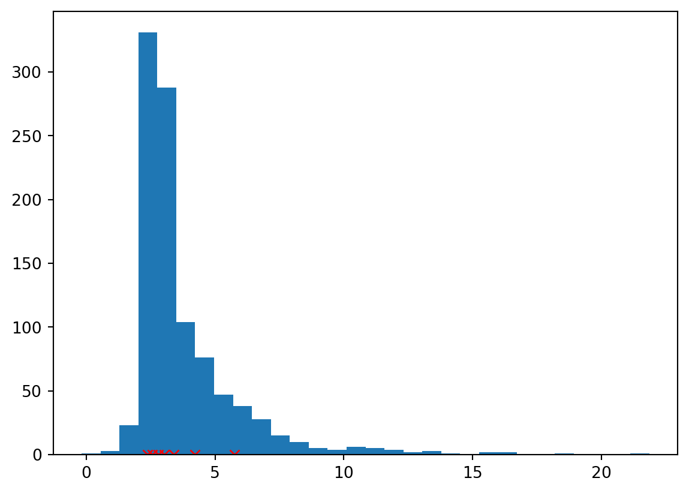
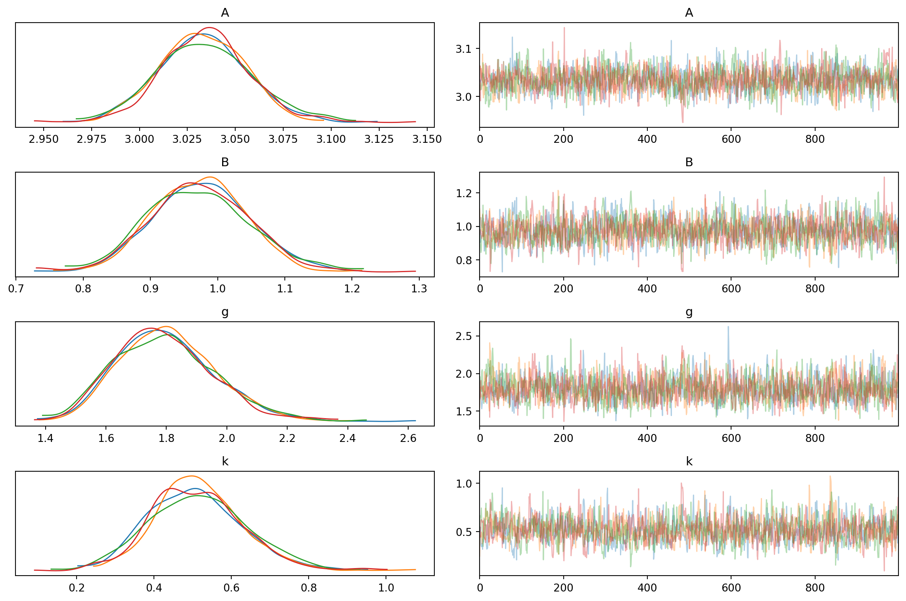
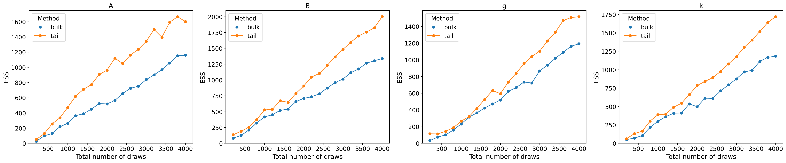
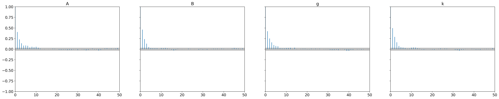
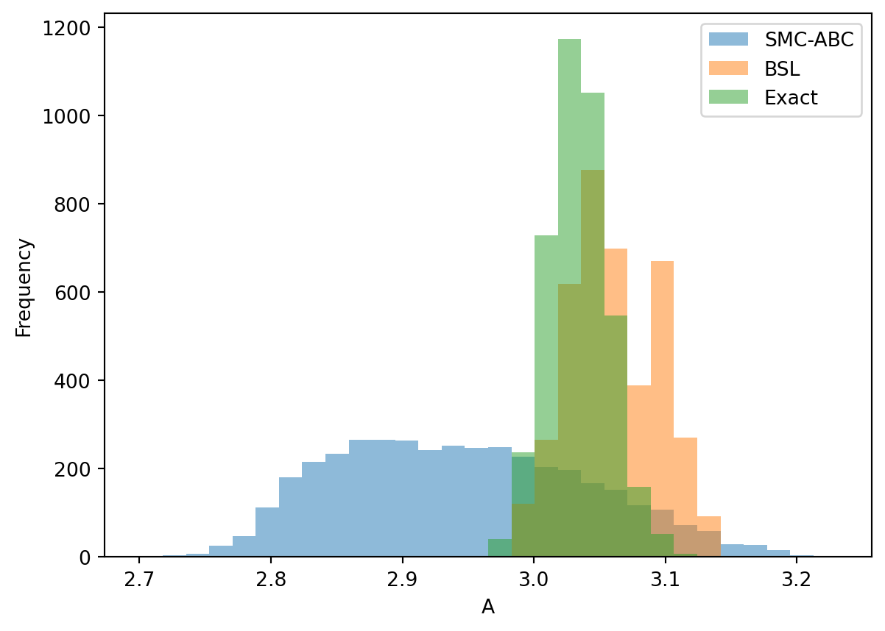
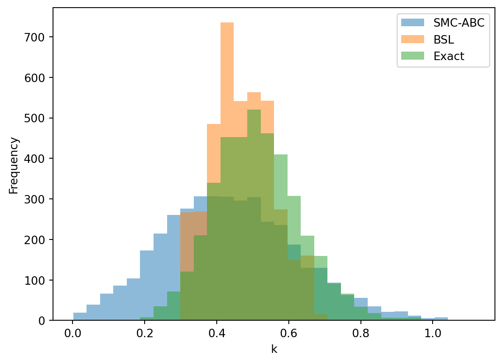

import jax.numpy as jnp
import jax.random as random
from jax import lax
from jax.scipy.stats import norm
import matplotlib.pyplot as pltExamples in simulation-based inference: the g-and-k model
Exact samples of the g-and-k partial posterior.
What is the g-and-k model? The g-and-k model is often represented using its quantile function, making it a popular choice in simulation-based inference. The reasoning behind this is straightforward: simulating pseudo-data from the quantile function is trivial, but defining the model in terms of its probability density function is more challenging. For simplicity, we’ll focus on the univariate g-and-k model. This model is parameterised by four parameters: A (location), B (scale), g (skewness), k (kurtosis).
Goal of this notebook The aim is to obtain samples from the partial posterior of the g-and-k model. So the goal of simulation-based inference (SBI) methods more broadly is to approximate the actual partial posterior. Note: partial posterior here, as we are mapping the data down to a lower-dimension set of summary statistics. By obtaining exact samples, we can evaluate how well an approximate method performs, using measures such as statistical distance. To my knowledge, this is the first instance of MCMC sampling being applied to the partial posterior of the g-and-k model (in the few instances where exact MCMC is done, is for the full posterior).
This small line is the the actual “DGP” we care about, what follows in this notebook is inference machinery for us to our posteriors.
def gnk(z, A, B, g, k, c=0.8):
"""Quantile function for the g-and-k distribution."""
return A + B * (1 + c * jnp.tanh(g * z / 2)) * (1 + z**2)**k * zAs the summary statistics, we will take the octiles as in Allingham et al. (2009). Obligatory mention that in practice, might be of interest to use the robust summaries of Drovandi et al. (2011).
def ss_octile(y):
"""Calculate octiles of the input data."""
octiles = jnp.linspace(12.5, 87.5, 7)
return jnp.percentile(y, octiles, axis=-1)Okay let’s get some data to run inference on.
true_params = jnp.array([3.0, 1.0, 2.0, 0.5])
key = random.PRNGKey(0)
num_obs = 1_000
z = random.normal(key, shape=(num_obs,))
x_full = gnk(z, *true_params)
x_obs = ss_octile(x_full)
x_obsArray([2.4127285, 2.5746717, 2.7674422, 2.9851599, 3.3859968, 4.1069646,
5.729595 ], dtype=float32)plt.hist(x_full, bins=30);
plt.plot(x_obs.ravel(), jnp.zeros(7), 'rx');
SMC ABC
The classic way. Reliable - but requires a tonne of simulations. Inference will be done using the Engine for likelihood-free inference (ELFI).
import elfi
from elfi.examples.gnk import get_model
import numpy as np
import matplotlib.pyplot as plt
from functools import partialASIDE: Mixing up jax.numpy as np - following two functions same thing, just to get things to work with ELFI.
def elfi_gnk(A, B, g, k, c=0.8, n_obs=100, batch_size=1, random_state=None):
"""Quantile function for the g-and-k distribution."""
A = np.asanyarray(A).reshape((-1, 1))
B = np.asanyarray(B).reshape((-1, 1))
g = np.asanyarray(g).reshape((-1, 1))
k = np.asanyarray(k).reshape((-1, 1))
random_state = random_state or np.random
z = random_state.normal(size=(batch_size, n_obs))
res = A + B * (1 + c * np.tanh(g * z / 2)) * (1 + z**2)**k * z
return res
def elfi_ss_octile(y):
"""Calculate octiles of the input data."""
octiles = np.linspace(12.5, 87.5, 7)
ss_octiles = np.percentile(y, octiles, axis=-1)
return np.atleast_2d(ss_octiles).TTo run inference using the ELFI package, we define an ELFI model. For a comprehensive introduction to ELFI, refer to the official tutorial.
m = elfi.new_model()
A = elfi.Prior('uniform', 0, 10, model=m, name='A')
B = elfi.Prior('uniform', 0, 10, model=m, name='B')
g = elfi.Prior('uniform', 0, 10, model=m, name='g')
k = elfi.Prior('uniform', 0, 10, model=m, name='k')
elfi_gnk = partial(elfi_gnk, n_obs=len(x_full))
GNK = elfi.Simulator(elfi_gnk, A, B, g, k, observed=np.atleast_2d(x_full), model=m, name='GNK')
ss_octiles = elfi.Summary(elfi_ss_octile, GNK, model=m, name='ss_octile')
d = elfi.Distance('euclidean', ss_octiles, model=m, name='d')Note that this process is time-consuming and ideally should be run for a longer duration to further reduce the threshold. The primary adjustments to consider are increasing the number of iterations by raising max_iter, as well as fine-tuning q_threshold and num_samples.
seed = 1
np.random.seed(seed)
max_iter = 5
adaptive_smc = elfi.AdaptiveThresholdSMC(d, batch_size=500, seed=seed+1, q_threshold=0.99)
adaptive_smc_samples = adaptive_smc.sample(4_000, max_iter=max_iter)ABC-SMC Round 1 / 5
Progress [=-------------------------------------------------] 2.5% CompleteProgress [==------------------------------------------------] 5.0% CompleteProgress [===-----------------------------------------------] 7.5% CompleteProgress [=====---------------------------------------------] 10.0% CompleteProgress [======--------------------------------------------] 12.5% CompleteProgress [=======-------------------------------------------] 15.0% CompleteProgress [========------------------------------------------] 17.5% CompleteProgress [==========----------------------------------------] 20.0% CompleteProgress [===========---------------------------------------] 22.5% CompleteProgress [============--------------------------------------] 25.0% CompleteProgress [=============-------------------------------------] 27.5% CompleteProgress [===============-----------------------------------] 30.0% CompleteProgress [================----------------------------------] 32.5% CompleteProgress [=================---------------------------------] 35.0% CompleteProgress [==================--------------------------------] 37.5% CompleteProgress [====================------------------------------] 40.0% CompleteProgress [=====================-----------------------------] 42.5% CompleteProgress [======================----------------------------] 45.0% CompleteProgress [=======================---------------------------] 47.5% CompleteProgress [=========================-------------------------] 50.0% CompleteProgress [==========================------------------------] 52.5% CompleteProgress [===========================-----------------------] 55.0% CompleteProgress [============================----------------------] 57.5% CompleteProgress [==============================--------------------] 60.0% CompleteProgress [===============================-------------------] 62.5% CompleteProgress [================================------------------] 65.0% CompleteProgress [=================================-----------------] 67.5% CompleteProgress [===================================---------------] 70.0% CompleteProgress [====================================--------------] 72.5% CompleteProgress [=====================================-------------] 75.0% CompleteProgress [======================================------------] 77.5% CompleteProgress [========================================----------] 80.0% CompleteProgress [=========================================---------] 82.5% CompleteProgress [==========================================--------] 85.0% CompleteProgress [===========================================-------] 87.5% CompleteProgress [=============================================-----] 90.0% CompleteProgress [==============================================----] 92.5% CompleteProgress [===============================================---] 95.0% CompleteProgress [================================================--] 97.5% CompleteProgress [==================================================] 100.0% Complete
ABC-SMC Round 2 / 5
Progress [--------------------------------------------------] 0.0% CompleteProgress [--------------------------------------------------] 0.6% CompleteProgress [--------------------------------------------------] 1.2% CompleteProgress [--------------------------------------------------] 1.7% CompleteProgress [=-------------------------------------------------] 2.2% CompleteProgress [=-------------------------------------------------] 2.5% CompleteProgress [=-------------------------------------------------] 3.1% CompleteProgress [=-------------------------------------------------] 3.5% CompleteProgress [=-------------------------------------------------] 3.8% CompleteProgress [==------------------------------------------------] 4.3% CompleteProgress [==------------------------------------------------] 4.8% CompleteProgress [==------------------------------------------------] 5.4% CompleteProgress [==------------------------------------------------] 5.7% CompleteProgress [===-----------------------------------------------] 6.2% CompleteProgress [===-----------------------------------------------] 6.8% CompleteProgress [===-----------------------------------------------] 7.3% CompleteProgress [====----------------------------------------------] 8.0% CompleteProgress [====----------------------------------------------] 8.6% CompleteProgress [====----------------------------------------------] 9.0% CompleteProgress [====----------------------------------------------] 9.5% CompleteProgress [=====---------------------------------------------] 10.1% CompleteProgress [=====---------------------------------------------] 10.6% CompleteProgress [=====---------------------------------------------] 11.2% CompleteProgress [=====---------------------------------------------] 11.8% CompleteProgress [======--------------------------------------------] 12.4% CompleteProgress [======--------------------------------------------] 12.8% CompleteProgress [======--------------------------------------------] 13.2% CompleteProgress [======--------------------------------------------] 13.7% CompleteProgress [=======-------------------------------------------] 14.1% CompleteProgress [=======-------------------------------------------] 14.6% CompleteProgress [=======-------------------------------------------] 14.9% CompleteProgress [=======-------------------------------------------] 15.3% CompleteProgress [=======-------------------------------------------] 15.8% CompleteProgress [========------------------------------------------] 16.3% CompleteProgress [========------------------------------------------] 16.7% CompleteProgress [========------------------------------------------] 17.3% CompleteProgress [========------------------------------------------] 17.7% CompleteProgress [=========-----------------------------------------] 18.3% CompleteProgress [=========-----------------------------------------] 18.9% CompleteProgress [=========-----------------------------------------] 19.5% CompleteProgress [==========----------------------------------------] 20.1% CompleteProgress [==========----------------------------------------] 20.5% CompleteProgress [==========----------------------------------------] 20.8% CompleteProgress [==========----------------------------------------] 21.3% CompleteProgress [==========----------------------------------------] 21.7% CompleteProgress [===========---------------------------------------] 22.1% CompleteProgress [===========---------------------------------------] 22.5% CompleteProgress [===========---------------------------------------] 23.0% CompleteProgress [===========---------------------------------------] 23.5% CompleteProgress [===========---------------------------------------] 23.8% CompleteProgress [============--------------------------------------] 24.5% CompleteProgress [============--------------------------------------] 24.9% CompleteProgress [============--------------------------------------] 25.5% CompleteProgress [============--------------------------------------] 26.0% CompleteProgress [=============-------------------------------------] 26.3% CompleteProgress [=============-------------------------------------] 27.0% CompleteProgress [=============-------------------------------------] 27.6% CompleteProgress [==============------------------------------------] 28.1% CompleteProgress [==============------------------------------------] 28.7% CompleteProgress [==============------------------------------------] 29.1% CompleteProgress [==============------------------------------------] 29.6% CompleteProgress [===============-----------------------------------] 30.0% CompleteProgress [===============-----------------------------------] 30.7% CompleteProgress [===============-----------------------------------] 31.3% CompleteProgress [===============-----------------------------------] 31.7% CompleteProgress [================----------------------------------] 32.0% CompleteProgress [================----------------------------------] 32.4% CompleteProgress [================----------------------------------] 32.7% CompleteProgress [================----------------------------------] 33.2% CompleteProgress [================----------------------------------] 33.7% CompleteProgress [=================---------------------------------] 34.1% CompleteProgress [=================---------------------------------] 34.8% CompleteProgress [=================---------------------------------] 35.1% CompleteProgress [=================---------------------------------] 35.6% CompleteProgress [==================--------------------------------] 36.1% CompleteProgress [==================--------------------------------] 36.6% CompleteProgress [==================--------------------------------] 37.3% CompleteProgress [==================--------------------------------] 37.7% CompleteProgress [===================-------------------------------] 38.2% CompleteProgress [===================-------------------------------] 38.7% CompleteProgress [===================-------------------------------] 39.0% CompleteProgress [===================-------------------------------] 39.5% CompleteProgress [====================------------------------------] 40.0% CompleteProgress [====================------------------------------] 40.5% CompleteProgress [====================------------------------------] 41.0% CompleteProgress [====================------------------------------] 41.5% CompleteProgress [====================------------------------------] 42.0% CompleteProgress [=====================-----------------------------] 42.4% CompleteProgress [=====================-----------------------------] 42.9% CompleteProgress [=====================-----------------------------] 43.4% CompleteProgress [======================----------------------------] 44.1% CompleteProgress [======================----------------------------] 44.4% CompleteProgress [======================----------------------------] 44.9% CompleteProgress [======================----------------------------] 45.1% CompleteProgress [======================----------------------------] 45.6% CompleteProgress [=======================---------------------------] 46.1% CompleteProgress [=======================---------------------------] 46.6% CompleteProgress [=======================---------------------------] 47.1% CompleteProgress [=======================---------------------------] 47.6% CompleteProgress [========================--------------------------] 48.1% CompleteProgress [========================--------------------------] 48.5% CompleteProgress [========================--------------------------] 49.0% CompleteProgress [========================--------------------------] 49.5% CompleteProgress [========================--------------------------] 49.8% CompleteProgress [=========================-------------------------] 50.2% CompleteProgress [=========================-------------------------] 51.0% CompleteProgress [=========================-------------------------] 51.5% CompleteProgress [=========================-------------------------] 51.9% CompleteProgress [==========================------------------------] 52.4% CompleteProgress [==========================------------------------] 53.2% CompleteProgress [==========================------------------------] 53.7% CompleteProgress [===========================-----------------------] 54.1% CompleteProgress [===========================-----------------------] 54.6% CompleteProgress [===========================-----------------------] 55.1% CompleteProgress [===========================-----------------------] 55.6% CompleteProgress [============================----------------------] 56.1% CompleteProgress [============================----------------------] 56.6% CompleteProgress [============================----------------------] 57.1% CompleteProgress [============================----------------------] 57.3% CompleteProgress [============================----------------------] 57.8% CompleteProgress [=============================---------------------] 58.3% CompleteProgress [=============================---------------------] 58.7% CompleteProgress [=============================---------------------] 59.2% CompleteProgress [=============================---------------------] 59.7% CompleteProgress [=============================---------------------] 59.9% CompleteProgress [==============================--------------------] 60.7% CompleteProgress [==============================--------------------] 61.2% CompleteProgress [==============================--------------------] 61.7% CompleteProgress [===============================-------------------] 62.4% CompleteProgress [===============================-------------------] 62.6% CompleteProgress [===============================-------------------] 63.1% CompleteProgress [===============================-------------------] 63.6% CompleteProgress [================================------------------] 64.1% CompleteProgress [================================------------------] 64.6% CompleteProgress [================================------------------] 65.0% CompleteProgress [================================------------------] 65.5% CompleteProgress [=================================-----------------] 66.0% CompleteProgress [=================================-----------------] 66.5% CompleteProgress [=================================-----------------] 67.0% CompleteProgress [=================================-----------------] 67.8% CompleteProgress [==================================----------------] 68.3% CompleteProgress [==================================----------------] 68.8% CompleteProgress [==================================----------------] 68.9% CompleteProgress [==================================----------------] 69.4% CompleteProgress [==================================----------------] 69.9% CompleteProgress [===================================---------------] 70.4% CompleteProgress [===================================---------------] 70.9% CompleteProgress [===================================---------------] 71.4% CompleteProgress [===================================---------------] 71.8% CompleteProgress [====================================--------------] 72.3% CompleteProgress [====================================--------------] 72.8% CompleteProgress [====================================--------------] 73.3% CompleteProgress [====================================--------------] 73.8% CompleteProgress [=====================================-------------] 74.3% CompleteProgress [=====================================-------------] 74.8% CompleteProgress [=====================================-------------] 75.2% CompleteProgress [=====================================-------------] 75.4% CompleteProgress [======================================------------] 76.2% CompleteProgress [======================================------------] 76.7% CompleteProgress [======================================------------] 77.2% CompleteProgress [======================================------------] 77.7% CompleteProgress [=======================================-----------] 78.2% CompleteProgress [=======================================-----------] 78.3% CompleteProgress [=======================================-----------] 78.7% CompleteProgress [=======================================-----------] 79.2% CompleteProgress [========================================----------] 80.1% CompleteProgress [========================================----------] 80.6% CompleteProgress [========================================----------] 81.1% CompleteProgress [========================================----------] 81.6% CompleteProgress [=========================================---------] 82.0% CompleteProgress [=========================================---------] 82.5% CompleteProgress [=========================================---------] 83.0% CompleteProgress [=========================================---------] 83.5% CompleteProgress [==========================================--------] 84.4% CompleteProgress [==========================================--------] 84.9% CompleteProgress [==========================================--------] 85.4% CompleteProgress [==========================================--------] 85.9% CompleteProgress [==========================================--------] 85.9% CompleteProgress [===========================================-------] 86.4% CompleteProgress [===========================================-------] 86.9% CompleteProgress [===========================================-------] 87.4% CompleteProgress [===========================================-------] 87.4% CompleteProgress [===========================================-------] 87.9% CompleteProgress [============================================------] 88.4% CompleteProgress [============================================------] 88.9% CompleteProgress [============================================------] 89.4% CompleteProgress [============================================------] 89.9% CompleteProgress [=============================================-----] 90.3% CompleteProgress [=============================================-----] 90.8% CompleteProgress [=============================================-----] 91.3% CompleteProgress [=============================================-----] 91.8% CompleteProgress [==============================================----] 92.3% CompleteProgress [==============================================----] 92.8% CompleteProgress [==============================================----] 93.2% CompleteProgress [==============================================----] 93.7% CompleteProgress [===============================================---] 94.2% CompleteProgress [===============================================---] 94.7% CompleteProgress [===============================================---] 95.2% CompleteProgress [===============================================---] 95.7% CompleteProgress [================================================--] 96.1% CompleteProgress [================================================--] 96.6% CompleteProgress [================================================--] 97.1% CompleteProgress [================================================--] 97.1% CompleteProgress [=================================================-] 98.1% CompleteProgress [=================================================-] 98.6% CompleteProgress [=================================================-] 98.6% CompleteProgress [=================================================-] 99.0% CompleteProgress [==================================================] 100.0% Complete
ABC-SMC Round 3 / 5
Progress [--------------------------------------------------] 0.0% CompleteProgress [--------------------------------------------------] 0.4% CompleteProgress [--------------------------------------------------] 0.7% CompleteProgress [--------------------------------------------------] 1.1% CompleteProgress [--------------------------------------------------] 1.2% CompleteProgress [--------------------------------------------------] 1.4% CompleteProgress [--------------------------------------------------] 1.7% CompleteProgress [=-------------------------------------------------] 2.1% CompleteProgress [=-------------------------------------------------] 2.4% CompleteProgress [=-------------------------------------------------] 2.8% CompleteProgress [=-------------------------------------------------] 3.3% CompleteProgress [=-------------------------------------------------] 3.7% CompleteProgress [==------------------------------------------------] 4.0% CompleteProgress [==------------------------------------------------] 4.3% CompleteProgress [==------------------------------------------------] 4.5% CompleteProgress [==------------------------------------------------] 4.8% CompleteProgress [==------------------------------------------------] 5.2% CompleteProgress [==------------------------------------------------] 5.7% CompleteProgress [===-----------------------------------------------] 6.0% CompleteProgress [===-----------------------------------------------] 6.3% CompleteProgress [===-----------------------------------------------] 6.5% CompleteProgress [===-----------------------------------------------] 6.8% CompleteProgress [===-----------------------------------------------] 7.2% CompleteProgress [===-----------------------------------------------] 7.7% CompleteProgress [===-----------------------------------------------] 7.9% CompleteProgress [====----------------------------------------------] 8.3% CompleteProgress [====----------------------------------------------] 8.7% CompleteProgress [====----------------------------------------------] 9.0% CompleteProgress [====----------------------------------------------] 9.2% CompleteProgress [====----------------------------------------------] 9.8% CompleteProgress [=====---------------------------------------------] 10.1% CompleteProgress [=====---------------------------------------------] 10.4% CompleteProgress [=====---------------------------------------------] 10.9% CompleteProgress [=====---------------------------------------------] 11.2% CompleteProgress [=====---------------------------------------------] 11.6% CompleteProgress [=====---------------------------------------------] 11.9% CompleteProgress [======--------------------------------------------] 12.2% CompleteProgress [======--------------------------------------------] 12.5% CompleteProgress [======--------------------------------------------] 12.9% CompleteProgress [======--------------------------------------------] 13.3% CompleteProgress [======--------------------------------------------] 13.6% CompleteProgress [======--------------------------------------------] 13.9% CompleteProgress [=======-------------------------------------------] 14.2% CompleteProgress [=======-------------------------------------------] 14.7% CompleteProgress [=======-------------------------------------------] 15.1% CompleteProgress [=======-------------------------------------------] 15.4% CompleteProgress [=======-------------------------------------------] 15.7% CompleteProgress [========------------------------------------------] 16.1% CompleteProgress [========------------------------------------------] 16.6% CompleteProgress [========------------------------------------------] 16.9% CompleteProgress [========------------------------------------------] 17.1% CompleteProgress [========------------------------------------------] 17.3% CompleteProgress [========------------------------------------------] 17.7% CompleteProgress [========------------------------------------------] 17.8% CompleteProgress [=========-----------------------------------------] 18.3% CompleteProgress [=========-----------------------------------------] 18.7% CompleteProgress [=========-----------------------------------------] 19.0% CompleteProgress [=========-----------------------------------------] 19.5% CompleteProgress [=========-----------------------------------------] 19.7% CompleteProgress [==========----------------------------------------] 20.1% CompleteProgress [==========----------------------------------------] 20.5% CompleteProgress [==========----------------------------------------] 20.9% CompleteProgress [==========----------------------------------------] 21.3% CompleteProgress [==========----------------------------------------] 21.6% CompleteProgress [==========----------------------------------------] 21.9% CompleteProgress [===========---------------------------------------] 22.1% CompleteProgress [===========---------------------------------------] 22.4% CompleteProgress [===========---------------------------------------] 22.7% CompleteProgress [===========---------------------------------------] 23.1% CompleteProgress [===========---------------------------------------] 23.5% CompleteProgress [===========---------------------------------------] 23.7% CompleteProgress [============--------------------------------------] 24.1% CompleteProgress [============--------------------------------------] 24.4% CompleteProgress [============--------------------------------------] 24.7% CompleteProgress [============--------------------------------------] 24.9% CompleteProgress [============--------------------------------------] 25.3% CompleteProgress [============--------------------------------------] 25.7% CompleteProgress [=============-------------------------------------] 26.1% CompleteProgress [=============-------------------------------------] 26.4% CompleteProgress [=============-------------------------------------] 26.8% CompleteProgress [=============-------------------------------------] 27.0% CompleteProgress [=============-------------------------------------] 27.4% CompleteProgress [=============-------------------------------------] 27.6% CompleteProgress [=============-------------------------------------] 27.9% CompleteProgress [==============------------------------------------] 28.4% CompleteProgress [==============------------------------------------] 28.6% CompleteProgress [==============------------------------------------] 28.9% CompleteProgress [==============------------------------------------] 29.4% CompleteProgress [==============------------------------------------] 29.6% CompleteProgress [==============------------------------------------] 29.9% CompleteProgress [===============-----------------------------------] 30.1% CompleteProgress [===============-----------------------------------] 30.3% CompleteProgress [===============-----------------------------------] 30.7% CompleteProgress [===============-----------------------------------] 31.0% CompleteProgress [===============-----------------------------------] 31.5% CompleteProgress [===============-----------------------------------] 32.0% CompleteProgress [================----------------------------------] 32.3% CompleteProgress [================----------------------------------] 32.7% CompleteProgress [================----------------------------------] 33.2% CompleteProgress [================----------------------------------] 33.6% CompleteProgress [================----------------------------------] 33.9% CompleteProgress [=================---------------------------------] 34.2% CompleteProgress [=================---------------------------------] 34.6% CompleteProgress [=================---------------------------------] 34.8% CompleteProgress [=================---------------------------------] 35.1% CompleteProgress [=================---------------------------------] 35.4% CompleteProgress [=================---------------------------------] 35.6% CompleteProgress [=================---------------------------------] 35.9% CompleteProgress [==================--------------------------------] 36.2% CompleteProgress [==================--------------------------------] 36.8% CompleteProgress [==================--------------------------------] 37.0% CompleteProgress [==================--------------------------------] 37.6% CompleteProgress [==================--------------------------------] 38.0% CompleteProgress [===================-------------------------------] 38.2% CompleteProgress [===================-------------------------------] 38.6% CompleteProgress [===================-------------------------------] 39.0% CompleteProgress [===================-------------------------------] 39.3% CompleteProgress [===================-------------------------------] 39.7% CompleteProgress [====================------------------------------] 40.0% CompleteProgress [====================------------------------------] 40.3% CompleteProgress [====================------------------------------] 40.7% CompleteProgress [====================------------------------------] 40.9% CompleteProgress [====================------------------------------] 41.2% CompleteProgress [====================------------------------------] 41.6% CompleteProgress [====================------------------------------] 41.9% CompleteProgress [=====================-----------------------------] 42.2% CompleteProgress [=====================-----------------------------] 42.6% CompleteProgress [=====================-----------------------------] 42.9% CompleteProgress [=====================-----------------------------] 43.2% CompleteProgress [=====================-----------------------------] 43.9% CompleteProgress [======================----------------------------] 44.2% CompleteProgress [======================----------------------------] 44.6% CompleteProgress [======================----------------------------] 44.9% CompleteProgress [======================----------------------------] 45.2% CompleteProgress [======================----------------------------] 45.4% CompleteProgress [======================----------------------------] 45.8% CompleteProgress [======================----------------------------] 45.9% CompleteProgress [=======================---------------------------] 46.3% CompleteProgress [=======================---------------------------] 46.8% CompleteProgress [=======================---------------------------] 47.1% CompleteProgress [=======================---------------------------] 47.5% CompleteProgress [=======================---------------------------] 47.8% CompleteProgress [=======================---------------------------] 48.0% CompleteProgress [========================--------------------------] 48.3% CompleteProgress [========================--------------------------] 48.6% CompleteProgress [========================--------------------------] 48.8% CompleteProgress [========================--------------------------] 49.2% CompleteProgress [========================--------------------------] 49.7% CompleteProgress [========================--------------------------] 49.8% CompleteProgress [=========================-------------------------] 50.2% CompleteProgress [=========================-------------------------] 50.5% CompleteProgress [=========================-------------------------] 51.0% CompleteProgress [=========================-------------------------] 51.2% CompleteProgress [=========================-------------------------] 51.5% CompleteProgress [=========================-------------------------] 51.7% CompleteProgress [==========================------------------------] 52.0% CompleteProgress [==========================------------------------] 52.3% CompleteProgress [==========================------------------------] 52.9% CompleteProgress [==========================------------------------] 53.0% CompleteProgress [==========================------------------------] 53.5% CompleteProgress [==========================------------------------] 53.9% CompleteProgress [===========================-----------------------] 54.4% CompleteProgress [===========================-----------------------] 54.7% CompleteProgress [===========================-----------------------] 55.3% CompleteProgress [===========================-----------------------] 55.4% CompleteProgress [===========================-----------------------] 55.7% CompleteProgress [============================----------------------] 56.1% CompleteProgress [============================----------------------] 56.2% CompleteProgress [============================----------------------] 56.6% CompleteProgress [============================----------------------] 56.9% CompleteProgress [============================----------------------] 57.2% CompleteProgress [============================----------------------] 57.6% CompleteProgress [============================----------------------] 57.7% CompleteProgress [=============================---------------------] 58.2% CompleteProgress [=============================---------------------] 58.6% CompleteProgress [=============================---------------------] 59.1% CompleteProgress [=============================---------------------] 59.5% CompleteProgress [==============================--------------------] 60.0% CompleteProgress [==============================--------------------] 60.3% CompleteProgress [==============================--------------------] 60.7% CompleteProgress [==============================--------------------] 61.2% CompleteProgress [==============================--------------------] 61.4% CompleteProgress [==============================--------------------] 61.7% CompleteProgress [==============================--------------------] 61.8% CompleteProgress [===============================-------------------] 62.2% CompleteProgress [===============================-------------------] 62.3% CompleteProgress [===============================-------------------] 62.8% CompleteProgress [===============================-------------------] 63.2% CompleteProgress [===============================-------------------] 63.3% CompleteProgress [===============================-------------------] 63.6% CompleteProgress [===============================-------------------] 64.0% CompleteProgress [================================------------------] 64.3% CompleteProgress [================================------------------] 64.9% CompleteProgress [================================------------------] 65.4% CompleteProgress [================================------------------] 66.0% CompleteProgress [=================================-----------------] 66.1% CompleteProgress [=================================-----------------] 66.2% CompleteProgress [=================================-----------------] 66.6% CompleteProgress [=================================-----------------] 66.9% CompleteProgress [=================================-----------------] 67.2% CompleteProgress [=================================-----------------] 67.6% CompleteProgress [=================================-----------------] 67.9% CompleteProgress [==================================----------------] 68.2% CompleteProgress [==================================----------------] 68.4% CompleteProgress [==================================----------------] 68.9% CompleteProgress [==================================----------------] 69.3% CompleteProgress [==================================----------------] 69.6% CompleteProgress [==================================----------------] 69.9% CompleteProgress [===================================---------------] 70.0% CompleteProgress [===================================---------------] 70.4% CompleteProgress [===================================---------------] 70.7% CompleteProgress [===================================---------------] 71.0% CompleteProgress [===================================---------------] 71.4% CompleteProgress [===================================---------------] 71.5% CompleteProgress [===================================---------------] 71.8% CompleteProgress [====================================--------------] 72.1% CompleteProgress [====================================--------------] 72.7% CompleteProgress [====================================--------------] 73.1% CompleteProgress [====================================--------------] 73.4% CompleteProgress [====================================--------------] 73.7% CompleteProgress [=====================================-------------] 74.1% CompleteProgress [=====================================-------------] 74.4% CompleteProgress [=====================================-------------] 74.7% CompleteProgress [=====================================-------------] 75.1% CompleteProgress [=====================================-------------] 75.4% CompleteProgress [=====================================-------------] 75.8% CompleteProgress [======================================------------] 76.1% CompleteProgress [======================================------------] 76.4% CompleteProgress [======================================------------] 76.8% CompleteProgress [======================================------------] 76.8% CompleteProgress [======================================------------] 77.2% CompleteProgress [======================================------------] 77.5% CompleteProgress [======================================------------] 77.9% CompleteProgress [=======================================-----------] 78.2% CompleteProgress [=======================================-----------] 78.5% CompleteProgress [=======================================-----------] 78.9% CompleteProgress [=======================================-----------] 79.2% CompleteProgress [=======================================-----------] 79.5% CompleteProgress [=======================================-----------] 79.9% CompleteProgress [=======================================-----------] 79.9% CompleteProgress [========================================----------] 80.3% CompleteProgress [========================================----------] 80.6% CompleteProgress [========================================----------] 80.7% CompleteProgress [========================================----------] 81.0% CompleteProgress [========================================----------] 81.6% CompleteProgress [========================================----------] 81.9% CompleteProgress [=========================================---------] 82.3% CompleteProgress [=========================================---------] 82.6% CompleteProgress [=========================================---------] 82.9% CompleteProgress [=========================================---------] 83.3% CompleteProgress [=========================================---------] 83.6% CompleteProgress [=========================================---------] 83.9% CompleteProgress [==========================================--------] 84.6% CompleteProgress [==========================================--------] 84.9% CompleteProgress [==========================================--------] 84.9% CompleteProgress [==========================================--------] 85.3% CompleteProgress [==========================================--------] 85.6% CompleteProgress [==========================================--------] 86.0% CompleteProgress [===========================================-------] 86.3% CompleteProgress [===========================================-------] 86.6% CompleteProgress [===========================================-------] 87.0% CompleteProgress [===========================================-------] 87.3% CompleteProgress [===========================================-------] 87.6% CompleteProgress [===========================================-------] 88.0% CompleteProgress [============================================------] 88.3% CompleteProgress [============================================------] 88.6% CompleteProgress [============================================------] 89.0% CompleteProgress [============================================------] 89.3% CompleteProgress [============================================------] 89.6% CompleteProgress [============================================------] 90.0% CompleteProgress [=============================================-----] 90.3% CompleteProgress [=============================================-----] 90.6% CompleteProgress [=============================================-----] 91.0% CompleteProgress [=============================================-----] 91.3% CompleteProgress [=============================================-----] 91.6% CompleteProgress [=============================================-----] 92.0% CompleteProgress [==============================================----] 92.3% CompleteProgress [==============================================----] 92.6% CompleteProgress [==============================================----] 93.3% CompleteProgress [==============================================----] 93.6% CompleteProgress [==============================================----] 94.0% CompleteProgress [===============================================---] 94.3% CompleteProgress [===============================================---] 94.6% CompleteProgress [===============================================---] 95.3% CompleteProgress [===============================================---] 95.6% CompleteProgress [===============================================---] 96.0% CompleteProgress [================================================--] 96.3% CompleteProgress [================================================--] 96.6% CompleteProgress [================================================--] 97.0% CompleteProgress [================================================--] 97.3% CompleteProgress [================================================--] 97.6% CompleteProgress [================================================--] 98.0% CompleteProgress [================================================--] 98.0% CompleteProgress [=================================================-] 98.3% CompleteProgress [=================================================-] 98.7% CompleteProgress [=================================================-] 99.0% CompleteProgress [=================================================-] 99.3% CompleteProgress [=================================================-] 99.7% CompleteProgress [==================================================] 100.0% Complete
ABC-SMC Round 4 / 5
Progress [--------------------------------------------------] 0.0% CompleteProgress [--------------------------------------------------] 0.1% CompleteProgress [--------------------------------------------------] 0.4% CompleteProgress [--------------------------------------------------] 0.6% CompleteProgress [--------------------------------------------------] 0.6% CompleteProgress [--------------------------------------------------] 0.8% CompleteProgress [--------------------------------------------------] 0.9% CompleteProgress [--------------------------------------------------] 1.1% CompleteProgress [--------------------------------------------------] 1.2% CompleteProgress [--------------------------------------------------] 1.5% CompleteProgress [--------------------------------------------------] 1.7% CompleteProgress [--------------------------------------------------] 1.8% CompleteProgress [--------------------------------------------------] 1.9% CompleteProgress [=-------------------------------------------------] 2.1% CompleteProgress [=-------------------------------------------------] 2.3% CompleteProgress [=-------------------------------------------------] 2.5% CompleteProgress [=-------------------------------------------------] 2.6% CompleteProgress [=-------------------------------------------------] 2.7% CompleteProgress [=-------------------------------------------------] 2.8% CompleteProgress [=-------------------------------------------------] 3.0% CompleteProgress [=-------------------------------------------------] 3.2% CompleteProgress [=-------------------------------------------------] 3.3% CompleteProgress [=-------------------------------------------------] 3.4% CompleteProgress [=-------------------------------------------------] 3.6% CompleteProgress [=-------------------------------------------------] 3.8% CompleteProgress [==------------------------------------------------] 4.0% CompleteProgress [==------------------------------------------------] 4.2% CompleteProgress [==------------------------------------------------] 4.4% CompleteProgress [==------------------------------------------------] 4.4% CompleteProgress [==------------------------------------------------] 4.6% CompleteProgress [==------------------------------------------------] 4.7% CompleteProgress [==------------------------------------------------] 4.9% CompleteProgress [==------------------------------------------------] 5.1% CompleteProgress [==------------------------------------------------] 5.2% CompleteProgress [==------------------------------------------------] 5.4% CompleteProgress [==------------------------------------------------] 5.6% CompleteProgress [==------------------------------------------------] 5.7% CompleteProgress [==------------------------------------------------] 5.9% CompleteProgress [==------------------------------------------------] 6.0% CompleteProgress [===-----------------------------------------------] 6.2% CompleteProgress [===-----------------------------------------------] 6.3% CompleteProgress [===-----------------------------------------------] 6.5% CompleteProgress [===-----------------------------------------------] 6.7% CompleteProgress [===-----------------------------------------------] 6.8% CompleteProgress [===-----------------------------------------------] 7.0% CompleteProgress [===-----------------------------------------------] 7.2% CompleteProgress [===-----------------------------------------------] 7.3% CompleteProgress [===-----------------------------------------------] 7.5% CompleteProgress [===-----------------------------------------------] 7.8% CompleteProgress [===-----------------------------------------------] 8.0% CompleteProgress [====----------------------------------------------] 8.1% CompleteProgress [====----------------------------------------------] 8.4% CompleteProgress [====----------------------------------------------] 8.6% CompleteProgress [====----------------------------------------------] 8.9% CompleteProgress [====----------------------------------------------] 9.1% CompleteProgress [====----------------------------------------------] 9.3% CompleteProgress [====----------------------------------------------] 9.6% CompleteProgress [====----------------------------------------------] 9.7% CompleteProgress [====----------------------------------------------] 9.9% CompleteProgress [=====---------------------------------------------] 10.1% CompleteProgress [=====---------------------------------------------] 10.2% CompleteProgress [=====---------------------------------------------] 10.3% CompleteProgress [=====---------------------------------------------] 10.5% CompleteProgress [=====---------------------------------------------] 10.7% CompleteProgress [=====---------------------------------------------] 10.8% CompleteProgress [=====---------------------------------------------] 11.1% CompleteProgress [=====---------------------------------------------] 11.3% CompleteProgress [=====---------------------------------------------] 11.4% CompleteProgress [=====---------------------------------------------] 11.5% CompleteProgress [=====---------------------------------------------] 11.9% CompleteProgress [======--------------------------------------------] 12.1% CompleteProgress [======--------------------------------------------] 12.3% CompleteProgress [======--------------------------------------------] 12.4% CompleteProgress [======--------------------------------------------] 12.6% CompleteProgress [======--------------------------------------------] 12.7% CompleteProgress [======--------------------------------------------] 12.8% CompleteProgress [======--------------------------------------------] 12.9% CompleteProgress [======--------------------------------------------] 13.0% CompleteProgress [======--------------------------------------------] 13.1% CompleteProgress [======--------------------------------------------] 13.4% CompleteProgress [======--------------------------------------------] 13.5% CompleteProgress [======--------------------------------------------] 13.6% CompleteProgress [======--------------------------------------------] 13.7% CompleteProgress [======--------------------------------------------] 13.8% CompleteProgress [=======-------------------------------------------] 14.1% CompleteProgress [=======-------------------------------------------] 14.3% CompleteProgress [=======-------------------------------------------] 14.5% CompleteProgress [=======-------------------------------------------] 14.6% CompleteProgress [=======-------------------------------------------] 14.8% CompleteProgress [=======-------------------------------------------] 15.0% CompleteProgress [=======-------------------------------------------] 15.2% CompleteProgress [=======-------------------------------------------] 15.3% CompleteProgress [=======-------------------------------------------] 15.3% CompleteProgress [=======-------------------------------------------] 15.5% CompleteProgress [=======-------------------------------------------] 15.7% CompleteProgress [=======-------------------------------------------] 15.9% CompleteProgress [========------------------------------------------] 16.1% CompleteProgress [========------------------------------------------] 16.2% CompleteProgress [========------------------------------------------] 16.4% CompleteProgress [========------------------------------------------] 16.5% CompleteProgress [========------------------------------------------] 16.6% CompleteProgress [========------------------------------------------] 16.7% CompleteProgress [========------------------------------------------] 16.9% CompleteProgress [========------------------------------------------] 17.1% CompleteProgress [========------------------------------------------] 17.2% CompleteProgress [========------------------------------------------] 17.4% CompleteProgress [========------------------------------------------] 17.5% CompleteProgress [========------------------------------------------] 17.7% CompleteProgress [========------------------------------------------] 17.8% CompleteProgress [========------------------------------------------] 17.9% CompleteProgress [=========-----------------------------------------] 18.1% CompleteProgress [=========-----------------------------------------] 18.3% CompleteProgress [=========-----------------------------------------] 18.4% CompleteProgress [=========-----------------------------------------] 18.6% CompleteProgress [=========-----------------------------------------] 18.7% CompleteProgress [=========-----------------------------------------] 18.9% CompleteProgress [=========-----------------------------------------] 19.0% CompleteProgress [=========-----------------------------------------] 19.2% CompleteProgress [=========-----------------------------------------] 19.5% CompleteProgress [=========-----------------------------------------] 19.8% CompleteProgress [=========-----------------------------------------] 19.8% CompleteProgress [=========-----------------------------------------] 20.0% CompleteProgress [==========----------------------------------------] 20.1% CompleteProgress [==========----------------------------------------] 20.3% CompleteProgress [==========----------------------------------------] 20.4% CompleteProgress [==========----------------------------------------] 20.7% CompleteProgress [==========----------------------------------------] 20.9% CompleteProgress [==========----------------------------------------] 21.2% CompleteProgress [==========----------------------------------------] 21.3% CompleteProgress [==========----------------------------------------] 21.5% CompleteProgress [==========----------------------------------------] 21.6% CompleteProgress [==========----------------------------------------] 21.9% CompleteProgress [===========---------------------------------------] 22.3% CompleteProgress [===========---------------------------------------] 22.4% CompleteProgress [===========---------------------------------------] 22.8% CompleteProgress [===========---------------------------------------] 22.9% CompleteProgress [===========---------------------------------------] 23.1% CompleteProgress [===========---------------------------------------] 23.3% CompleteProgress [===========---------------------------------------] 23.6% CompleteProgress [===========---------------------------------------] 23.8% CompleteProgress [===========---------------------------------------] 23.9% CompleteProgress [============--------------------------------------] 24.1% CompleteProgress [============--------------------------------------] 24.2% CompleteProgress [============--------------------------------------] 24.3% CompleteProgress [============--------------------------------------] 24.4% CompleteProgress [============--------------------------------------] 24.5% CompleteProgress [============--------------------------------------] 24.7% CompleteProgress [============--------------------------------------] 24.8% CompleteProgress [============--------------------------------------] 25.0% CompleteProgress [============--------------------------------------] 25.3% CompleteProgress [============--------------------------------------] 25.4% CompleteProgress [============--------------------------------------] 25.5% CompleteProgress [============--------------------------------------] 25.7% CompleteProgress [============--------------------------------------] 25.8% CompleteProgress [============--------------------------------------] 26.0% CompleteProgress [=============-------------------------------------] 26.0% CompleteProgress [=============-------------------------------------] 26.1% CompleteProgress [=============-------------------------------------] 26.2% CompleteProgress [=============-------------------------------------] 26.5% CompleteProgress [=============-------------------------------------] 26.6% CompleteProgress [=============-------------------------------------] 26.7% CompleteProgress [=============-------------------------------------] 26.9% CompleteProgress [=============-------------------------------------] 27.0% CompleteProgress [=============-------------------------------------] 27.2% CompleteProgress [=============-------------------------------------] 27.4% CompleteProgress [=============-------------------------------------] 27.7% CompleteProgress [=============-------------------------------------] 27.8% CompleteProgress [=============-------------------------------------] 28.0% CompleteProgress [==============------------------------------------] 28.2% CompleteProgress [==============------------------------------------] 28.3% CompleteProgress [==============------------------------------------] 28.5% CompleteProgress [==============------------------------------------] 28.5% CompleteProgress [==============------------------------------------] 28.7% CompleteProgress [==============------------------------------------] 29.0% CompleteProgress [==============------------------------------------] 29.1% CompleteProgress [==============------------------------------------] 29.4% CompleteProgress [==============------------------------------------] 29.5% CompleteProgress [==============------------------------------------] 29.8% CompleteProgress [==============------------------------------------] 30.0% CompleteProgress [===============-----------------------------------] 30.1% CompleteProgress [===============-----------------------------------] 30.3% CompleteProgress [===============-----------------------------------] 30.3% CompleteProgress [===============-----------------------------------] 30.6% CompleteProgress [===============-----------------------------------] 30.9% CompleteProgress [===============-----------------------------------] 31.2% CompleteProgress [===============-----------------------------------] 31.3% CompleteProgress [===============-----------------------------------] 31.4% CompleteProgress [===============-----------------------------------] 31.5% CompleteProgress [===============-----------------------------------] 31.6% CompleteProgress [===============-----------------------------------] 31.8% CompleteProgress [===============-----------------------------------] 32.0% CompleteProgress [================----------------------------------] 32.2% CompleteProgress [================----------------------------------] 32.5% CompleteProgress [================----------------------------------] 32.7% CompleteProgress [================----------------------------------] 32.8% CompleteProgress [================----------------------------------] 32.9% CompleteProgress [================----------------------------------] 33.0% CompleteProgress [================----------------------------------] 33.3% CompleteProgress [================----------------------------------] 33.4% CompleteProgress [================----------------------------------] 33.7% CompleteProgress [================----------------------------------] 33.8% CompleteProgress [================----------------------------------] 34.0% CompleteProgress [=================---------------------------------] 34.1% CompleteProgress [=================---------------------------------] 34.3% CompleteProgress [=================---------------------------------] 34.5% CompleteProgress [=================---------------------------------] 34.7% CompleteProgress [=================---------------------------------] 35.0% CompleteProgress [=================---------------------------------] 35.1% CompleteProgress [=================---------------------------------] 35.1% CompleteProgress [=================---------------------------------] 35.3% CompleteProgress [=================---------------------------------] 35.5% CompleteProgress [=================---------------------------------] 35.6% CompleteProgress [=================---------------------------------] 35.8% CompleteProgress [=================---------------------------------] 35.8% CompleteProgress [=================---------------------------------] 35.8% CompleteProgress [==================--------------------------------] 36.0% CompleteProgress [==================--------------------------------] 36.2% CompleteProgress [==================--------------------------------] 36.3% CompleteProgress [==================--------------------------------] 36.5% CompleteProgress [==================--------------------------------] 36.6% CompleteProgress [==================--------------------------------] 36.7% CompleteProgress [==================--------------------------------] 36.9% CompleteProgress [==================--------------------------------] 37.1% CompleteProgress [==================--------------------------------] 37.2% CompleteProgress [==================--------------------------------] 37.3% CompleteProgress [==================--------------------------------] 37.4% CompleteProgress [==================--------------------------------] 37.6% CompleteProgress [==================--------------------------------] 37.8% CompleteProgress [==================--------------------------------] 37.9% CompleteProgress [==================--------------------------------] 38.0% CompleteProgress [===================-------------------------------] 38.3% CompleteProgress [===================-------------------------------] 38.4% CompleteProgress [===================-------------------------------] 38.5% CompleteProgress [===================-------------------------------] 38.7% CompleteProgress [===================-------------------------------] 38.9% CompleteProgress [===================-------------------------------] 39.0% CompleteProgress [===================-------------------------------] 39.3% CompleteProgress [===================-------------------------------] 39.4% CompleteProgress [===================-------------------------------] 39.7% CompleteProgress [===================-------------------------------] 39.8% CompleteProgress [===================-------------------------------] 39.9% CompleteProgress [====================------------------------------] 40.0% CompleteProgress [====================------------------------------] 40.3% CompleteProgress [====================------------------------------] 40.4% CompleteProgress [====================------------------------------] 40.5% CompleteProgress [====================------------------------------] 40.6% CompleteProgress [====================------------------------------] 40.8% CompleteProgress [====================------------------------------] 40.9% CompleteProgress [====================------------------------------] 41.1% CompleteProgress [====================------------------------------] 41.2% CompleteProgress [====================------------------------------] 41.3% CompleteProgress [====================------------------------------] 41.4% CompleteProgress [====================------------------------------] 41.6% CompleteProgress [====================------------------------------] 41.7% CompleteProgress [====================------------------------------] 41.9% CompleteProgress [=====================-----------------------------] 42.1% CompleteProgress [=====================-----------------------------] 42.2% CompleteProgress [=====================-----------------------------] 42.3% CompleteProgress [=====================-----------------------------] 42.6% CompleteProgress [=====================-----------------------------] 42.7% CompleteProgress [=====================-----------------------------] 42.8% CompleteProgress [=====================-----------------------------] 42.9% CompleteProgress [=====================-----------------------------] 43.1% CompleteProgress [=====================-----------------------------] 43.2% CompleteProgress [=====================-----------------------------] 43.3% CompleteProgress [=====================-----------------------------] 43.4% CompleteProgress [=====================-----------------------------] 43.8% CompleteProgress [=====================-----------------------------] 43.8% CompleteProgress [======================----------------------------] 44.2% CompleteProgress [======================----------------------------] 44.3% CompleteProgress [======================----------------------------] 44.5% CompleteProgress [======================----------------------------] 44.6% CompleteProgress [======================----------------------------] 45.0% CompleteProgress [======================----------------------------] 45.0% CompleteProgress [======================----------------------------] 45.2% CompleteProgress [======================----------------------------] 45.3% CompleteProgress [======================----------------------------] 45.5% CompleteProgress [======================----------------------------] 45.6% CompleteProgress [======================----------------------------] 45.8% CompleteProgress [======================----------------------------] 46.0% CompleteProgress [=======================---------------------------] 46.1% CompleteProgress [=======================---------------------------] 46.3% CompleteProgress [=======================---------------------------] 46.5% CompleteProgress [=======================---------------------------] 46.8% CompleteProgress [=======================---------------------------] 47.0% CompleteProgress [=======================---------------------------] 47.2% CompleteProgress [=======================---------------------------] 47.4% CompleteProgress [=======================---------------------------] 47.5% CompleteProgress [=======================---------------------------] 47.7% CompleteProgress [=======================---------------------------] 47.8% CompleteProgress [=======================---------------------------] 47.9% CompleteProgress [========================--------------------------] 48.2% CompleteProgress [========================--------------------------] 48.3% CompleteProgress [========================--------------------------] 48.5% CompleteProgress [========================--------------------------] 48.7% CompleteProgress [========================--------------------------] 48.8% CompleteProgress [========================--------------------------] 48.9% CompleteProgress [========================--------------------------] 49.2% CompleteProgress [========================--------------------------] 49.5% CompleteProgress [========================--------------------------] 49.5% CompleteProgress [========================--------------------------] 49.8% CompleteProgress [=========================-------------------------] 50.0% CompleteProgress [=========================-------------------------] 50.2% CompleteProgress [=========================-------------------------] 50.4% CompleteProgress [=========================-------------------------] 50.6% CompleteProgress [=========================-------------------------] 50.7% CompleteProgress [=========================-------------------------] 50.7% CompleteProgress [=========================-------------------------] 50.9% CompleteProgress [=========================-------------------------] 51.1% CompleteProgress [=========================-------------------------] 51.3% CompleteProgress [=========================-------------------------] 51.5% CompleteProgress [=========================-------------------------] 51.6% CompleteProgress [=========================-------------------------] 51.7% CompleteProgress [=========================-------------------------] 51.9% CompleteProgress [==========================------------------------] 52.1% CompleteProgress [==========================------------------------] 52.2% CompleteProgress [==========================------------------------] 52.4% CompleteProgress [==========================------------------------] 52.6% CompleteProgress [==========================------------------------] 52.7% CompleteProgress [==========================------------------------] 52.9% CompleteProgress [==========================------------------------] 53.1% CompleteProgress [==========================------------------------] 53.2% CompleteProgress [==========================------------------------] 53.3% CompleteProgress [==========================------------------------] 53.6% CompleteProgress [==========================------------------------] 53.7% CompleteProgress [==========================------------------------] 53.9% CompleteProgress [===========================-----------------------] 54.2% CompleteProgress [===========================-----------------------] 54.2% CompleteProgress [===========================-----------------------] 54.5% CompleteProgress [===========================-----------------------] 54.6% CompleteProgress [===========================-----------------------] 54.7% CompleteProgress [===========================-----------------------] 54.8% CompleteProgress [===========================-----------------------] 55.1% CompleteProgress [===========================-----------------------] 55.3% CompleteProgress [===========================-----------------------] 55.4% CompleteProgress [===========================-----------------------] 55.5% CompleteProgress [===========================-----------------------] 55.6% CompleteProgress [===========================-----------------------] 55.7% CompleteProgress [===========================-----------------------] 55.9% CompleteProgress [============================----------------------] 56.0% CompleteProgress [============================----------------------] 56.1% CompleteProgress [============================----------------------] 56.4% CompleteProgress [============================----------------------] 56.4% CompleteProgress [============================----------------------] 56.6% CompleteProgress [============================----------------------] 56.8% CompleteProgress [============================----------------------] 56.9% CompleteProgress [============================----------------------] 57.0% CompleteProgress [============================----------------------] 57.3% CompleteProgress [============================----------------------] 57.4% CompleteProgress [============================----------------------] 57.6% CompleteProgress [============================----------------------] 57.9% CompleteProgress [============================----------------------] 57.9% CompleteProgress [=============================---------------------] 58.1% CompleteProgress [=============================---------------------] 58.3% CompleteProgress [=============================---------------------] 58.3% CompleteProgress [=============================---------------------] 58.6% CompleteProgress [=============================---------------------] 58.7% CompleteProgress [=============================---------------------] 59.0% CompleteProgress [=============================---------------------] 59.2% CompleteProgress [=============================---------------------] 59.3% CompleteProgress [=============================---------------------] 59.4% CompleteProgress [=============================---------------------] 59.6% CompleteProgress [=============================---------------------] 59.8% CompleteProgress [=============================---------------------] 59.9% CompleteProgress [==============================--------------------] 60.1% CompleteProgress [==============================--------------------] 60.1% CompleteProgress [==============================--------------------] 60.3% CompleteProgress [==============================--------------------] 60.5% CompleteProgress [==============================--------------------] 60.5% CompleteProgress [==============================--------------------] 60.7% CompleteProgress [==============================--------------------] 61.0% CompleteProgress [==============================--------------------] 61.0% CompleteProgress [==============================--------------------] 61.2% CompleteProgress [==============================--------------------] 61.3% CompleteProgress [==============================--------------------] 61.5% CompleteProgress [==============================--------------------] 61.7% CompleteProgress [==============================--------------------] 61.9% CompleteProgress [===============================-------------------] 62.1% CompleteProgress [===============================-------------------] 62.4% CompleteProgress [===============================-------------------] 62.6% CompleteProgress [===============================-------------------] 62.7% CompleteProgress [===============================-------------------] 62.9% CompleteProgress [===============================-------------------] 63.0% CompleteProgress [===============================-------------------] 63.3% CompleteProgress [===============================-------------------] 63.5% CompleteProgress [===============================-------------------] 63.7% CompleteProgress [===============================-------------------] 63.9% CompleteProgress [================================------------------] 64.1% CompleteProgress [================================------------------] 64.3% CompleteProgress [================================------------------] 64.5% CompleteProgress [================================------------------] 64.7% CompleteProgress [================================------------------] 65.0% CompleteProgress [================================------------------] 65.0% CompleteProgress [================================------------------] 65.2% CompleteProgress [================================------------------] 65.3% CompleteProgress [================================------------------] 65.6% CompleteProgress [================================------------------] 65.8% CompleteProgress [================================------------------] 65.8% CompleteProgress [=================================-----------------] 66.0% CompleteProgress [=================================-----------------] 66.1% CompleteProgress [=================================-----------------] 66.2% CompleteProgress [=================================-----------------] 66.5% CompleteProgress [=================================-----------------] 66.6% CompleteProgress [=================================-----------------] 66.6% CompleteProgress [=================================-----------------] 66.8% CompleteProgress [=================================-----------------] 66.9% CompleteProgress [=================================-----------------] 67.1% CompleteProgress [=================================-----------------] 67.3% CompleteProgress [=================================-----------------] 67.5% CompleteProgress [=================================-----------------] 67.7% CompleteProgress [=================================-----------------] 67.9% CompleteProgress [==================================----------------] 68.0% CompleteProgress [==================================----------------] 68.1% CompleteProgress [==================================----------------] 68.3% CompleteProgress [==================================----------------] 68.4% CompleteProgress [==================================----------------] 68.6% CompleteProgress [==================================----------------] 68.6% CompleteProgress [==================================----------------] 68.9% CompleteProgress [==================================----------------] 69.1% CompleteProgress [==================================----------------] 69.3% CompleteProgress [==================================----------------] 69.3% CompleteProgress [==================================----------------] 69.4% CompleteProgress [==================================----------------] 69.6% CompleteProgress [==================================----------------] 69.7% CompleteProgress [==================================----------------] 69.9% CompleteProgress [==================================----------------] 69.9% CompleteProgress [===================================---------------] 70.1% CompleteProgress [===================================---------------] 70.2% CompleteProgress [===================================---------------] 70.4% CompleteProgress [===================================---------------] 70.6% CompleteProgress [===================================---------------] 70.7% CompleteProgress [===================================---------------] 70.9% CompleteProgress [===================================---------------] 71.1% CompleteProgress [===================================---------------] 71.2% CompleteProgress [===================================---------------] 71.3% CompleteProgress [===================================---------------] 71.5% CompleteProgress [===================================---------------] 71.7% CompleteProgress [===================================---------------] 71.9% CompleteProgress [====================================--------------] 72.0% CompleteProgress [====================================--------------] 72.2% CompleteProgress [====================================--------------] 72.5% CompleteProgress [====================================--------------] 72.5% CompleteProgress [====================================--------------] 72.7% CompleteProgress [====================================--------------] 72.9% CompleteProgress [====================================--------------] 73.1% CompleteProgress [====================================--------------] 73.3% CompleteProgress [====================================--------------] 73.4% CompleteProgress [====================================--------------] 73.6% CompleteProgress [====================================--------------] 73.8% CompleteProgress [====================================--------------] 74.0% CompleteProgress [=====================================-------------] 74.0% CompleteProgress [=====================================-------------] 74.3% CompleteProgress [=====================================-------------] 74.5% CompleteProgress [=====================================-------------] 74.6% CompleteProgress [=====================================-------------] 74.7% CompleteProgress [=====================================-------------] 74.8% CompleteProgress [=====================================-------------] 75.0% CompleteProgress [=====================================-------------] 75.2% CompleteProgress [=====================================-------------] 75.5% CompleteProgress [=====================================-------------] 75.7% CompleteProgress [=====================================-------------] 75.9% CompleteProgress [======================================------------] 76.1% CompleteProgress [======================================------------] 76.2% CompleteProgress [======================================------------] 76.4% CompleteProgress [======================================------------] 76.6% CompleteProgress [======================================------------] 76.7% CompleteProgress [======================================------------] 76.9% CompleteProgress [======================================------------] 77.2% CompleteProgress [======================================------------] 77.4% CompleteProgress [======================================------------] 77.5% CompleteProgress [======================================------------] 77.7% CompleteProgress [======================================------------] 77.9% CompleteProgress [======================================------------] 77.9% CompleteProgress [=======================================-----------] 78.1% CompleteProgress [=======================================-----------] 78.2% CompleteProgress [=======================================-----------] 78.3% CompleteProgress [=======================================-----------] 78.4% CompleteProgress [=======================================-----------] 78.6% CompleteProgress [=======================================-----------] 78.7% CompleteProgress [=======================================-----------] 78.9% CompleteProgress [=======================================-----------] 79.1% CompleteProgress [=======================================-----------] 79.2% CompleteProgress [=======================================-----------] 79.4% CompleteProgress [=======================================-----------] 79.6% CompleteProgress [=======================================-----------] 79.7% CompleteProgress [=======================================-----------] 79.8% CompleteProgress [=======================================-----------] 79.9% CompleteProgress [========================================----------] 80.1% CompleteProgress [========================================----------] 80.3% CompleteProgress [========================================----------] 80.4% CompleteProgress [========================================----------] 80.7% CompleteProgress [========================================----------] 80.9% CompleteProgress [========================================----------] 81.1% CompleteProgress [========================================----------] 81.4% CompleteProgress [========================================----------] 81.5% CompleteProgress [========================================----------] 81.5% CompleteProgress [========================================----------] 81.8% CompleteProgress [=========================================---------] 82.0% CompleteProgress [=========================================---------] 82.2% CompleteProgress [=========================================---------] 82.3% CompleteProgress [=========================================---------] 82.6% CompleteProgress [=========================================---------] 82.8% CompleteProgress [=========================================---------] 82.8% CompleteProgress [=========================================---------] 83.0% CompleteProgress [=========================================---------] 83.2% CompleteProgress [=========================================---------] 83.3% CompleteProgress [=========================================---------] 83.4% CompleteProgress [=========================================---------] 83.5% CompleteProgress [=========================================---------] 83.7% CompleteProgress [=========================================---------] 83.9% CompleteProgress [==========================================--------] 84.0% CompleteProgress [==========================================--------] 84.2% CompleteProgress [==========================================--------] 84.3% CompleteProgress [==========================================--------] 84.5% CompleteProgress [==========================================--------] 84.7% CompleteProgress [==========================================--------] 84.7% CompleteProgress [==========================================--------] 85.1% CompleteProgress [==========================================--------] 85.3% CompleteProgress [==========================================--------] 85.5% CompleteProgress [==========================================--------] 85.6% CompleteProgress [==========================================--------] 85.7% CompleteProgress [==========================================--------] 85.8% CompleteProgress [==========================================--------] 86.0% CompleteProgress [===========================================-------] 86.2% CompleteProgress [===========================================-------] 86.3% CompleteProgress [===========================================-------] 86.3% CompleteProgress [===========================================-------] 86.5% CompleteProgress [===========================================-------] 86.7% CompleteProgress [===========================================-------] 86.8% CompleteProgress [===========================================-------] 87.0% CompleteProgress [===========================================-------] 87.3% CompleteProgress [===========================================-------] 87.3% CompleteProgress [===========================================-------] 87.6% CompleteProgress [===========================================-------] 88.0% CompleteProgress [===========================================-------] 88.0% CompleteProgress [============================================------] 88.3% CompleteProgress [============================================------] 88.4% CompleteProgress [============================================------] 88.5% CompleteProgress [============================================------] 88.6% CompleteProgress [============================================------] 88.7% CompleteProgress [============================================------] 88.8% CompleteProgress [============================================------] 89.0% CompleteProgress [============================================------] 89.1% CompleteProgress [============================================------] 89.3% CompleteProgress [============================================------] 89.3% CompleteProgress [============================================------] 89.6% CompleteProgress [============================================------] 89.8% CompleteProgress [============================================------] 90.0% CompleteProgress [=============================================-----] 90.1% CompleteProgress [=============================================-----] 90.3% CompleteProgress [=============================================-----] 90.5% CompleteProgress [=============================================-----] 90.6% CompleteProgress [=============================================-----] 90.9% CompleteProgress [=============================================-----] 91.1% CompleteProgress [=============================================-----] 91.3% CompleteProgress [=============================================-----] 91.3% CompleteProgress [=============================================-----] 91.6% CompleteProgress [=============================================-----] 91.8% CompleteProgress [=============================================-----] 91.8% CompleteProgress [=============================================-----] 91.9% CompleteProgress [==============================================----] 92.3% CompleteProgress [==============================================----] 92.4% CompleteProgress [==============================================----] 92.6% CompleteProgress [==============================================----] 92.8% CompleteProgress [==============================================----] 92.9% CompleteProgress [==============================================----] 93.1% CompleteProgress [==============================================----] 93.4% CompleteProgress [==============================================----] 93.7% CompleteProgress [==============================================----] 93.7% CompleteProgress [==============================================----] 93.9% CompleteProgress [===============================================---] 94.1% CompleteProgress [===============================================---] 94.2% CompleteProgress [===============================================---] 94.5% CompleteProgress [===============================================---] 94.7% CompleteProgress [===============================================---] 94.9% CompleteProgress [===============================================---] 95.0% CompleteProgress [===============================================---] 95.2% CompleteProgress [===============================================---] 95.4% CompleteProgress [===============================================---] 95.7% CompleteProgress [===============================================---] 95.9% CompleteProgress [================================================--] 96.2% CompleteProgress [================================================--] 96.2% CompleteProgress [================================================--] 96.4% CompleteProgress [================================================--] 96.5% CompleteProgress [================================================--] 96.7% CompleteProgress [================================================--] 96.9% CompleteProgress [================================================--] 97.0% CompleteProgress [================================================--] 97.2% CompleteProgress [================================================--] 97.4% CompleteProgress [================================================--] 97.4% CompleteProgress [================================================--] 97.5% CompleteProgress [================================================--] 97.7% CompleteProgress [================================================--] 97.7% CompleteProgress [================================================--] 97.9% CompleteProgress [================================================--] 97.9% CompleteProgress [=================================================-] 98.0% CompleteProgress [=================================================-] 98.2% CompleteProgress [=================================================-] 98.2% CompleteProgress [=================================================-] 98.5% CompleteProgress [=================================================-] 98.7% CompleteProgress [=================================================-] 98.8% CompleteProgress [=================================================-] 99.0% CompleteProgress [=================================================-] 99.2% CompleteProgress [=================================================-] 99.3% CompleteProgress [=================================================-] 99.5% CompleteProgress [=================================================-] 99.7% CompleteProgress [=================================================-] 99.8% CompleteProgress [==================================================] 100.0% Complete
ABC-SMC Round 5 / 5
Progress [--------------------------------------------------] 0.0% CompleteProgress [--------------------------------------------------] 0.0% CompleteProgress [--------------------------------------------------] 0.1% CompleteProgress [--------------------------------------------------] 0.1% CompleteProgress [--------------------------------------------------] 0.1% CompleteProgress [--------------------------------------------------] 0.2% CompleteProgress [--------------------------------------------------] 0.2% CompleteProgress [--------------------------------------------------] 0.3% CompleteProgress [--------------------------------------------------] 0.3% CompleteProgress [--------------------------------------------------] 0.3% CompleteProgress [--------------------------------------------------] 0.3% CompleteProgress [--------------------------------------------------] 0.4% CompleteProgress [--------------------------------------------------] 0.5% CompleteProgress [--------------------------------------------------] 0.6% CompleteProgress [--------------------------------------------------] 0.7% CompleteProgress [--------------------------------------------------] 0.8% CompleteProgress [--------------------------------------------------] 0.8% CompleteProgress [--------------------------------------------------] 0.9% CompleteProgress [--------------------------------------------------] 0.9% CompleteProgress [--------------------------------------------------] 1.0% CompleteProgress [--------------------------------------------------] 1.0% CompleteProgress [--------------------------------------------------] 1.1% CompleteProgress [--------------------------------------------------] 1.2% CompleteProgress [--------------------------------------------------] 1.3% CompleteProgress [--------------------------------------------------] 1.3% CompleteProgress [--------------------------------------------------] 1.4% CompleteProgress [--------------------------------------------------] 1.4% CompleteProgress [--------------------------------------------------] 1.4% CompleteProgress [--------------------------------------------------] 1.5% CompleteProgress [--------------------------------------------------] 1.6% CompleteProgress [--------------------------------------------------] 1.7% CompleteProgress [--------------------------------------------------] 1.8% CompleteProgress [--------------------------------------------------] 1.9% CompleteProgress [--------------------------------------------------] 1.9% CompleteProgress [--------------------------------------------------] 1.9% CompleteProgress [=-------------------------------------------------] 2.1% CompleteProgress [=-------------------------------------------------] 2.1% CompleteProgress [=-------------------------------------------------] 2.2% CompleteProgress [=-------------------------------------------------] 2.2% CompleteProgress [=-------------------------------------------------] 2.3% CompleteProgress [=-------------------------------------------------] 2.3% CompleteProgress [=-------------------------------------------------] 2.4% CompleteProgress [=-------------------------------------------------] 2.5% CompleteProgress [=-------------------------------------------------] 2.6% CompleteProgress [=-------------------------------------------------] 2.8% CompleteProgress [=-------------------------------------------------] 2.8% CompleteProgress [=-------------------------------------------------] 2.9% CompleteProgress [=-------------------------------------------------] 2.9% CompleteProgress [=-------------------------------------------------] 3.0% CompleteProgress [=-------------------------------------------------] 3.1% CompleteProgress [=-------------------------------------------------] 3.2% CompleteProgress [=-------------------------------------------------] 3.5% CompleteProgress [=-------------------------------------------------] 3.5% CompleteProgress [=-------------------------------------------------] 3.6% CompleteProgress [=-------------------------------------------------] 3.6% CompleteProgress [=-------------------------------------------------] 3.6% CompleteProgress [=-------------------------------------------------] 3.7% CompleteProgress [=-------------------------------------------------] 3.7% CompleteProgress [=-------------------------------------------------] 3.8% CompleteProgress [=-------------------------------------------------] 3.9% CompleteProgress [=-------------------------------------------------] 3.9% CompleteProgress [==------------------------------------------------] 4.0% CompleteProgress [==------------------------------------------------] 4.0% CompleteProgress [==------------------------------------------------] 4.2% CompleteProgress [==------------------------------------------------] 4.3% CompleteProgress [==------------------------------------------------] 4.4% CompleteProgress [==------------------------------------------------] 4.5% CompleteProgress [==------------------------------------------------] 4.5% CompleteProgress [==------------------------------------------------] 4.6% CompleteProgress [==------------------------------------------------] 4.6% CompleteProgress [==------------------------------------------------] 4.7% CompleteProgress [==------------------------------------------------] 4.7% CompleteProgress [==------------------------------------------------] 4.8% CompleteProgress [==------------------------------------------------] 4.9% CompleteProgress [==------------------------------------------------] 5.0% CompleteProgress [==------------------------------------------------] 5.0% CompleteProgress [==------------------------------------------------] 5.1% CompleteProgress [==------------------------------------------------] 5.1% CompleteProgress [==------------------------------------------------] 5.2% CompleteProgress [==------------------------------------------------] 5.3% CompleteProgress [==------------------------------------------------] 5.4% CompleteProgress [==------------------------------------------------] 5.5% CompleteProgress [==------------------------------------------------] 5.5% CompleteProgress [==------------------------------------------------] 5.5% CompleteProgress [==------------------------------------------------] 5.6% CompleteProgress [==------------------------------------------------] 5.7% CompleteProgress [==------------------------------------------------] 5.7% CompleteProgress [==------------------------------------------------] 5.8% CompleteProgress [==------------------------------------------------] 5.8% CompleteProgress [==------------------------------------------------] 6.0% CompleteProgress [===-----------------------------------------------] 6.1% CompleteProgress [===-----------------------------------------------] 6.1% CompleteProgress [===-----------------------------------------------] 6.1% CompleteProgress [===-----------------------------------------------] 6.2% CompleteProgress [===-----------------------------------------------] 6.3% CompleteProgress [===-----------------------------------------------] 6.4% CompleteProgress [===-----------------------------------------------] 6.4% CompleteProgress [===-----------------------------------------------] 6.5% CompleteProgress [===-----------------------------------------------] 6.5% CompleteProgress [===-----------------------------------------------] 6.6% CompleteProgress [===-----------------------------------------------] 6.6% CompleteProgress [===-----------------------------------------------] 6.7% CompleteProgress [===-----------------------------------------------] 6.7% CompleteProgress [===-----------------------------------------------] 6.7% CompleteProgress [===-----------------------------------------------] 6.8% CompleteProgress [===-----------------------------------------------] 6.9% CompleteProgress [===-----------------------------------------------] 7.0% CompleteProgress [===-----------------------------------------------] 7.1% CompleteProgress [===-----------------------------------------------] 7.1% CompleteProgress [===-----------------------------------------------] 7.2% CompleteProgress [===-----------------------------------------------] 7.3% CompleteProgress [===-----------------------------------------------] 7.3% CompleteProgress [===-----------------------------------------------] 7.4% CompleteProgress [===-----------------------------------------------] 7.4% CompleteProgress [===-----------------------------------------------] 7.5% CompleteProgress [===-----------------------------------------------] 7.5% CompleteProgress [===-----------------------------------------------] 7.5% CompleteProgress [===-----------------------------------------------] 7.7% CompleteProgress [===-----------------------------------------------] 7.7% CompleteProgress [===-----------------------------------------------] 7.8% CompleteProgress [===-----------------------------------------------] 7.8% CompleteProgress [===-----------------------------------------------] 7.9% CompleteProgress [====----------------------------------------------] 8.0% CompleteProgress [====----------------------------------------------] 8.1% CompleteProgress [====----------------------------------------------] 8.1% CompleteProgress [====----------------------------------------------] 8.2% CompleteProgress [====----------------------------------------------] 8.2% CompleteProgress [====----------------------------------------------] 8.3% CompleteProgress [====----------------------------------------------] 8.3% CompleteProgress [====----------------------------------------------] 8.4% CompleteProgress [====----------------------------------------------] 8.4% CompleteProgress [====----------------------------------------------] 8.5% CompleteProgress [====----------------------------------------------] 8.5% CompleteProgress [====----------------------------------------------] 8.6% CompleteProgress [====----------------------------------------------] 8.6% CompleteProgress [====----------------------------------------------] 8.7% CompleteProgress [====----------------------------------------------] 8.7% CompleteProgress [====----------------------------------------------] 8.9% CompleteProgress [====----------------------------------------------] 8.9% CompleteProgress [====----------------------------------------------] 9.0% CompleteProgress [====----------------------------------------------] 9.1% CompleteProgress [====----------------------------------------------] 9.1% CompleteProgress [====----------------------------------------------] 9.2% CompleteProgress [====----------------------------------------------] 9.2% CompleteProgress [====----------------------------------------------] 9.3% CompleteProgress [====----------------------------------------------] 9.4% CompleteProgress [====----------------------------------------------] 9.4% CompleteProgress [====----------------------------------------------] 9.5% CompleteProgress [====----------------------------------------------] 9.6% CompleteProgress [====----------------------------------------------] 9.6% CompleteProgress [====----------------------------------------------] 9.6% CompleteProgress [====----------------------------------------------] 9.7% CompleteProgress [====----------------------------------------------] 9.8% CompleteProgress [====----------------------------------------------] 9.8% CompleteProgress [====----------------------------------------------] 10.0% CompleteProgress [=====---------------------------------------------] 10.0% CompleteProgress [=====---------------------------------------------] 10.0% CompleteProgress [=====---------------------------------------------] 10.1% CompleteProgress [=====---------------------------------------------] 10.2% CompleteProgress [=====---------------------------------------------] 10.2% CompleteProgress [=====---------------------------------------------] 10.2% CompleteProgress [=====---------------------------------------------] 10.2% CompleteProgress [=====---------------------------------------------] 10.3% CompleteProgress [=====---------------------------------------------] 10.3% CompleteProgress [=====---------------------------------------------] 10.4% CompleteProgress [=====---------------------------------------------] 10.4% CompleteProgress [=====---------------------------------------------] 10.5% CompleteProgress [=====---------------------------------------------] 10.5% CompleteProgress [=====---------------------------------------------] 10.6% CompleteProgress [=====---------------------------------------------] 10.6% CompleteProgress [=====---------------------------------------------] 10.7% CompleteProgress [=====---------------------------------------------] 10.7% CompleteProgress [=====---------------------------------------------] 10.7% CompleteProgress [=====---------------------------------------------] 10.8% CompleteProgress [=====---------------------------------------------] 10.8% CompleteProgress [=====---------------------------------------------] 10.9% CompleteProgress [=====---------------------------------------------] 10.9% CompleteProgress [=====---------------------------------------------] 10.9% CompleteProgress [=====---------------------------------------------] 11.0% CompleteProgress [=====---------------------------------------------] 11.0% CompleteProgress [=====---------------------------------------------] 11.0% CompleteProgress [=====---------------------------------------------] 11.1% CompleteProgress [=====---------------------------------------------] 11.2% CompleteProgress [=====---------------------------------------------] 11.2% CompleteProgress [=====---------------------------------------------] 11.3% CompleteProgress [=====---------------------------------------------] 11.5% CompleteProgress [=====---------------------------------------------] 11.5% CompleteProgress [=====---------------------------------------------] 11.6% CompleteProgress [=====---------------------------------------------] 11.7% CompleteProgress [=====---------------------------------------------] 11.8% CompleteProgress [=====---------------------------------------------] 11.8% CompleteProgress [=====---------------------------------------------] 11.9% CompleteProgress [=====---------------------------------------------] 11.9% CompleteProgress [=====---------------------------------------------] 11.9% CompleteProgress [=====---------------------------------------------] 12.0% CompleteProgress [=====---------------------------------------------] 12.0% CompleteProgress [======--------------------------------------------] 12.0% CompleteProgress [======--------------------------------------------] 12.1% CompleteProgress [======--------------------------------------------] 12.1% CompleteProgress [======--------------------------------------------] 12.2% CompleteProgress [======--------------------------------------------] 12.2% CompleteProgress [======--------------------------------------------] 12.3% CompleteProgress [======--------------------------------------------] 12.5% CompleteProgress [======--------------------------------------------] 12.6% CompleteProgress [======--------------------------------------------] 12.6% CompleteProgress [======--------------------------------------------] 12.6% CompleteProgress [======--------------------------------------------] 12.7% CompleteProgress [======--------------------------------------------] 12.8% CompleteProgress [======--------------------------------------------] 12.8% CompleteProgress [======--------------------------------------------] 12.8% CompleteProgress [======--------------------------------------------] 12.9% CompleteProgress [======--------------------------------------------] 12.9% CompleteProgress [======--------------------------------------------] 13.0% CompleteProgress [======--------------------------------------------] 13.0% CompleteProgress [======--------------------------------------------] 13.2% CompleteProgress [======--------------------------------------------] 13.3% CompleteProgress [======--------------------------------------------] 13.4% CompleteProgress [======--------------------------------------------] 13.4% CompleteProgress [======--------------------------------------------] 13.5% CompleteProgress [======--------------------------------------------] 13.5% CompleteProgress [======--------------------------------------------] 13.6% CompleteProgress [======--------------------------------------------] 13.7% CompleteProgress [======--------------------------------------------] 13.7% CompleteProgress [======--------------------------------------------] 13.7% CompleteProgress [======--------------------------------------------] 13.8% CompleteProgress [======--------------------------------------------] 13.8% CompleteProgress [======--------------------------------------------] 13.9% CompleteProgress [======--------------------------------------------] 13.9% CompleteProgress [======--------------------------------------------] 13.9% CompleteProgress [======--------------------------------------------] 13.9% CompleteProgress [=======-------------------------------------------] 14.1% CompleteProgress [=======-------------------------------------------] 14.2% CompleteProgress [=======-------------------------------------------] 14.2% CompleteProgress [=======-------------------------------------------] 14.3% CompleteProgress [=======-------------------------------------------] 14.4% CompleteProgress [=======-------------------------------------------] 14.5% CompleteProgress [=======-------------------------------------------] 14.5% CompleteProgress [=======-------------------------------------------] 14.6% CompleteProgress [=======-------------------------------------------] 14.6% CompleteProgress [=======-------------------------------------------] 14.6% CompleteProgress [=======-------------------------------------------] 14.7% CompleteProgress [=======-------------------------------------------] 14.7% CompleteProgress [=======-------------------------------------------] 14.8% CompleteProgress [=======-------------------------------------------] 14.8% CompleteProgress [=======-------------------------------------------] 14.9% CompleteProgress [=======-------------------------------------------] 15.0% CompleteProgress [=======-------------------------------------------] 15.1% CompleteProgress [=======-------------------------------------------] 15.1% CompleteProgress [=======-------------------------------------------] 15.2% CompleteProgress [=======-------------------------------------------] 15.3% CompleteProgress [=======-------------------------------------------] 15.3% CompleteProgress [=======-------------------------------------------] 15.4% CompleteProgress [=======-------------------------------------------] 15.5% CompleteProgress [=======-------------------------------------------] 15.5% CompleteProgress [=======-------------------------------------------] 15.5% CompleteProgress [=======-------------------------------------------] 15.5% CompleteProgress [=======-------------------------------------------] 15.6% CompleteProgress [=======-------------------------------------------] 15.7% CompleteProgress [=======-------------------------------------------] 15.8% CompleteProgress [=======-------------------------------------------] 15.8% CompleteProgress [=======-------------------------------------------] 15.8% CompleteProgress [=======-------------------------------------------] 15.8% CompleteProgress [=======-------------------------------------------] 15.8% CompleteProgress [=======-------------------------------------------] 15.9% CompleteProgress [=======-------------------------------------------] 16.0% CompleteProgress [=======-------------------------------------------] 16.0% CompleteProgress [=======-------------------------------------------] 16.0% CompleteProgress [========------------------------------------------] 16.1% CompleteProgress [========------------------------------------------] 16.2% CompleteProgress [========------------------------------------------] 16.2% CompleteProgress [========------------------------------------------] 16.2% CompleteProgress [========------------------------------------------] 16.3% CompleteProgress [========------------------------------------------] 16.3% CompleteProgress [========------------------------------------------] 16.4% CompleteProgress [========------------------------------------------] 16.4% CompleteProgress [========------------------------------------------] 16.4% CompleteProgress [========------------------------------------------] 16.6% CompleteProgress [========------------------------------------------] 16.6% CompleteProgress [========------------------------------------------] 16.7% CompleteProgress [========------------------------------------------] 16.7% CompleteProgress [========------------------------------------------] 16.8% CompleteProgress [========------------------------------------------] 16.8% CompleteProgress [========------------------------------------------] 16.8% CompleteProgress [========------------------------------------------] 16.9% CompleteProgress [========------------------------------------------] 16.9% CompleteProgress [========------------------------------------------] 17.0% CompleteProgress [========------------------------------------------] 17.0% CompleteProgress [========------------------------------------------] 17.0% CompleteProgress [========------------------------------------------] 17.1% CompleteProgress [========------------------------------------------] 17.2% CompleteProgress [========------------------------------------------] 17.3% CompleteProgress [========------------------------------------------] 17.3% CompleteProgress [========------------------------------------------] 17.3% CompleteProgress [========------------------------------------------] 17.4% CompleteProgress [========------------------------------------------] 17.4% CompleteProgress [========------------------------------------------] 17.4% CompleteProgress [========------------------------------------------] 17.5% CompleteProgress [========------------------------------------------] 17.5% CompleteProgress [========------------------------------------------] 17.5% CompleteProgress [========------------------------------------------] 17.6% CompleteProgress [========------------------------------------------] 17.7% CompleteProgress [========------------------------------------------] 17.8% CompleteProgress [========------------------------------------------] 17.9% CompleteProgress [========------------------------------------------] 17.9% CompleteProgress [========------------------------------------------] 18.0% CompleteProgress [========------------------------------------------] 18.0% CompleteProgress [=========-----------------------------------------] 18.0% CompleteProgress [=========-----------------------------------------] 18.1% CompleteProgress [=========-----------------------------------------] 18.1% CompleteProgress [=========-----------------------------------------] 18.1% CompleteProgress [=========-----------------------------------------] 18.2% CompleteProgress [=========-----------------------------------------] 18.3% CompleteProgress [=========-----------------------------------------] 18.3% CompleteProgress [=========-----------------------------------------] 18.4% CompleteProgress [=========-----------------------------------------] 18.4% CompleteProgress [=========-----------------------------------------] 18.4% CompleteProgress [=========-----------------------------------------] 18.5% CompleteProgress [=========-----------------------------------------] 18.5% CompleteProgress [=========-----------------------------------------] 18.5% CompleteProgress [=========-----------------------------------------] 18.6% CompleteProgress [=========-----------------------------------------] 18.6% CompleteProgress [=========-----------------------------------------] 18.6% CompleteProgress [=========-----------------------------------------] 18.7% CompleteProgress [=========-----------------------------------------] 18.7% CompleteProgress [=========-----------------------------------------] 18.7% CompleteProgress [=========-----------------------------------------] 18.8% CompleteProgress [=========-----------------------------------------] 18.9% CompleteProgress [=========-----------------------------------------] 18.9% CompleteProgress [=========-----------------------------------------] 18.9% CompleteProgress [=========-----------------------------------------] 19.0% CompleteProgress [=========-----------------------------------------] 19.1% CompleteProgress [=========-----------------------------------------] 19.1% CompleteProgress [=========-----------------------------------------] 19.3% CompleteProgress [=========-----------------------------------------] 19.3% CompleteProgress [=========-----------------------------------------] 19.3% CompleteProgress [=========-----------------------------------------] 19.3% CompleteProgress [=========-----------------------------------------] 19.4% CompleteProgress [=========-----------------------------------------] 19.5% CompleteProgress [=========-----------------------------------------] 19.5% CompleteProgress [=========-----------------------------------------] 19.6% CompleteProgress [=========-----------------------------------------] 19.7% CompleteProgress [=========-----------------------------------------] 19.7% CompleteProgress [=========-----------------------------------------] 19.7% CompleteProgress [=========-----------------------------------------] 19.7% CompleteProgress [=========-----------------------------------------] 19.8% CompleteProgress [=========-----------------------------------------] 20.0% CompleteProgress [==========----------------------------------------] 20.1% CompleteProgress [==========----------------------------------------] 20.2% CompleteProgress [==========----------------------------------------] 20.2% CompleteProgress [==========----------------------------------------] 20.2% CompleteProgress [==========----------------------------------------] 20.3% CompleteProgress [==========----------------------------------------] 20.3% CompleteProgress [==========----------------------------------------] 20.4% CompleteProgress [==========----------------------------------------] 20.6% CompleteProgress [==========----------------------------------------] 20.6% CompleteProgress [==========----------------------------------------] 20.7% CompleteProgress [==========----------------------------------------] 20.7% CompleteProgress [==========----------------------------------------] 20.8% CompleteProgress [==========----------------------------------------] 20.8% CompleteProgress [==========----------------------------------------] 20.9% CompleteProgress [==========----------------------------------------] 21.1% CompleteProgress [==========----------------------------------------] 21.1% CompleteProgress [==========----------------------------------------] 21.2% CompleteProgress [==========----------------------------------------] 21.2% CompleteProgress [==========----------------------------------------] 21.3% CompleteProgress [==========----------------------------------------] 21.3% CompleteProgress [==========----------------------------------------] 21.4% CompleteProgress [==========----------------------------------------] 21.4% CompleteProgress [==========----------------------------------------] 21.5% CompleteProgress [==========----------------------------------------] 21.5% CompleteProgress [==========----------------------------------------] 21.6% CompleteProgress [==========----------------------------------------] 21.6% CompleteProgress [==========----------------------------------------] 21.7% CompleteProgress [==========----------------------------------------] 21.7% CompleteProgress [==========----------------------------------------] 21.8% CompleteProgress [==========----------------------------------------] 21.8% CompleteProgress [==========----------------------------------------] 21.9% CompleteProgress [==========----------------------------------------] 22.0% CompleteProgress [===========---------------------------------------] 22.1% CompleteProgress [===========---------------------------------------] 22.1% CompleteProgress [===========---------------------------------------] 22.2% CompleteProgress [===========---------------------------------------] 22.2% CompleteProgress [===========---------------------------------------] 22.3% CompleteProgress [===========---------------------------------------] 22.3% CompleteProgress [===========---------------------------------------] 22.4% CompleteProgress [===========---------------------------------------] 22.5% CompleteProgress [===========---------------------------------------] 22.5% CompleteProgress [===========---------------------------------------] 22.6% CompleteProgress [===========---------------------------------------] 22.6% CompleteProgress [===========---------------------------------------] 22.7% CompleteProgress [===========---------------------------------------] 22.7% CompleteProgress [===========---------------------------------------] 22.8% CompleteProgress [===========---------------------------------------] 22.9% CompleteProgress [===========---------------------------------------] 23.0% CompleteProgress [===========---------------------------------------] 23.0% CompleteProgress [===========---------------------------------------] 23.1% CompleteProgress [===========---------------------------------------] 23.1% CompleteProgress [===========---------------------------------------] 23.1% CompleteProgress [===========---------------------------------------] 23.2% CompleteProgress [===========---------------------------------------] 23.2% CompleteProgress [===========---------------------------------------] 23.2% CompleteProgress [===========---------------------------------------] 23.2% CompleteProgress [===========---------------------------------------] 23.3% CompleteProgress [===========---------------------------------------] 23.3% CompleteProgress [===========---------------------------------------] 23.4% CompleteProgress [===========---------------------------------------] 23.4% CompleteProgress [===========---------------------------------------] 23.5% CompleteProgress [===========---------------------------------------] 23.5% CompleteProgress [===========---------------------------------------] 23.5% CompleteProgress [===========---------------------------------------] 23.6% CompleteProgress [===========---------------------------------------] 23.6% CompleteProgress [===========---------------------------------------] 23.7% CompleteProgress [===========---------------------------------------] 23.7% CompleteProgress [===========---------------------------------------] 23.8% CompleteProgress [===========---------------------------------------] 23.8% CompleteProgress [===========---------------------------------------] 24.0% CompleteProgress [===========---------------------------------------] 24.0% CompleteProgress [============--------------------------------------] 24.1% CompleteProgress [============--------------------------------------] 24.3% CompleteProgress [============--------------------------------------] 24.4% CompleteProgress [============--------------------------------------] 24.4% CompleteProgress [============--------------------------------------] 24.4% CompleteProgress [============--------------------------------------] 24.4% CompleteProgress [============--------------------------------------] 24.5% CompleteProgress [============--------------------------------------] 24.6% CompleteProgress [============--------------------------------------] 24.6% CompleteProgress [============--------------------------------------] 24.7% CompleteProgress [============--------------------------------------] 24.7% CompleteProgress [============--------------------------------------] 24.8% CompleteProgress [============--------------------------------------] 24.9% CompleteProgress [============--------------------------------------] 24.9% CompleteProgress [============--------------------------------------] 25.0% CompleteProgress [============--------------------------------------] 25.0% CompleteProgress [============--------------------------------------] 25.1% CompleteProgress [============--------------------------------------] 25.2% CompleteProgress [============--------------------------------------] 25.2% CompleteProgress [============--------------------------------------] 25.3% CompleteProgress [============--------------------------------------] 25.3% CompleteProgress [============--------------------------------------] 25.5% CompleteProgress [============--------------------------------------] 25.5% CompleteProgress [============--------------------------------------] 25.5% CompleteProgress [============--------------------------------------] 25.6% CompleteProgress [============--------------------------------------] 25.6% CompleteProgress [============--------------------------------------] 25.7% CompleteProgress [============--------------------------------------] 25.8% CompleteProgress [============--------------------------------------] 25.8% CompleteProgress [============--------------------------------------] 25.9% CompleteProgress [============--------------------------------------] 25.9% CompleteProgress [============--------------------------------------] 26.0% CompleteProgress [=============-------------------------------------] 26.1% CompleteProgress [=============-------------------------------------] 26.1% CompleteProgress [=============-------------------------------------] 26.2% CompleteProgress [=============-------------------------------------] 26.3% CompleteProgress [=============-------------------------------------] 26.4% CompleteProgress [=============-------------------------------------] 26.5% CompleteProgress [=============-------------------------------------] 26.5% CompleteProgress [=============-------------------------------------] 26.5% CompleteProgress [=============-------------------------------------] 26.5% CompleteProgress [=============-------------------------------------] 26.6% CompleteProgress [=============-------------------------------------] 26.6% CompleteProgress [=============-------------------------------------] 26.6% CompleteProgress [=============-------------------------------------] 26.7% CompleteProgress [=============-------------------------------------] 26.7% CompleteProgress [=============-------------------------------------] 26.8% CompleteProgress [=============-------------------------------------] 26.9% CompleteProgress [=============-------------------------------------] 26.9% CompleteProgress [=============-------------------------------------] 26.9% CompleteProgress [=============-------------------------------------] 26.9% CompleteProgress [=============-------------------------------------] 26.9% CompleteProgress [=============-------------------------------------] 26.9% CompleteProgress [=============-------------------------------------] 27.0% CompleteProgress [=============-------------------------------------] 27.0% CompleteProgress [=============-------------------------------------] 27.0% CompleteProgress [=============-------------------------------------] 27.1% CompleteProgress [=============-------------------------------------] 27.1% CompleteProgress [=============-------------------------------------] 27.2% CompleteProgress [=============-------------------------------------] 27.2% CompleteProgress [=============-------------------------------------] 27.3% CompleteProgress [=============-------------------------------------] 27.4% CompleteProgress [=============-------------------------------------] 27.5% CompleteProgress [=============-------------------------------------] 27.5% CompleteProgress [=============-------------------------------------] 27.5% CompleteProgress [=============-------------------------------------] 27.6% CompleteProgress [=============-------------------------------------] 27.7% CompleteProgress [=============-------------------------------------] 27.7% CompleteProgress [=============-------------------------------------] 27.8% CompleteProgress [=============-------------------------------------] 27.8% CompleteProgress [=============-------------------------------------] 27.9% CompleteProgress [=============-------------------------------------] 28.0% CompleteProgress [=============-------------------------------------] 28.0% CompleteProgress [==============------------------------------------] 28.1% CompleteProgress [==============------------------------------------] 28.2% CompleteProgress [==============------------------------------------] 28.2% CompleteProgress [==============------------------------------------] 28.3% CompleteProgress [==============------------------------------------] 28.3% CompleteProgress [==============------------------------------------] 28.3% CompleteProgress [==============------------------------------------] 28.3% CompleteProgress [==============------------------------------------] 28.4% CompleteProgress [==============------------------------------------] 28.4% CompleteProgress [==============------------------------------------] 28.5% CompleteProgress [==============------------------------------------] 28.6% CompleteProgress [==============------------------------------------] 28.7% CompleteProgress [==============------------------------------------] 28.8% CompleteProgress [==============------------------------------------] 28.8% CompleteProgress [==============------------------------------------] 28.8% CompleteProgress [==============------------------------------------] 28.8% CompleteProgress [==============------------------------------------] 28.8% CompleteProgress [==============------------------------------------] 28.9% CompleteProgress [==============------------------------------------] 29.0% CompleteProgress [==============------------------------------------] 29.1% CompleteProgress [==============------------------------------------] 29.1% CompleteProgress [==============------------------------------------] 29.2% CompleteProgress [==============------------------------------------] 29.2% CompleteProgress [==============------------------------------------] 29.3% CompleteProgress [==============------------------------------------] 29.4% CompleteProgress [==============------------------------------------] 29.4% CompleteProgress [==============------------------------------------] 29.5% CompleteProgress [==============------------------------------------] 29.5% CompleteProgress [==============------------------------------------] 29.6% CompleteProgress [==============------------------------------------] 29.6% CompleteProgress [==============------------------------------------] 29.6% CompleteProgress [==============------------------------------------] 29.7% CompleteProgress [==============------------------------------------] 29.8% CompleteProgress [==============------------------------------------] 29.8% CompleteProgress [==============------------------------------------] 29.9% CompleteProgress [==============------------------------------------] 30.0% CompleteProgress [===============-----------------------------------] 30.1% CompleteProgress [===============-----------------------------------] 30.1% CompleteProgress [===============-----------------------------------] 30.2% CompleteProgress [===============-----------------------------------] 30.3% CompleteProgress [===============-----------------------------------] 30.3% CompleteProgress [===============-----------------------------------] 30.3% CompleteProgress [===============-----------------------------------] 30.4% CompleteProgress [===============-----------------------------------] 30.4% CompleteProgress [===============-----------------------------------] 30.5% CompleteProgress [===============-----------------------------------] 30.6% CompleteProgress [===============-----------------------------------] 30.6% CompleteProgress [===============-----------------------------------] 30.6% CompleteProgress [===============-----------------------------------] 30.7% CompleteProgress [===============-----------------------------------] 30.8% CompleteProgress [===============-----------------------------------] 31.0% CompleteProgress [===============-----------------------------------] 31.0% CompleteProgress [===============-----------------------------------] 31.1% CompleteProgress [===============-----------------------------------] 31.1% CompleteProgress [===============-----------------------------------] 31.2% CompleteProgress [===============-----------------------------------] 31.2% CompleteProgress [===============-----------------------------------] 31.2% CompleteProgress [===============-----------------------------------] 31.4% CompleteProgress [===============-----------------------------------] 31.4% CompleteProgress [===============-----------------------------------] 31.5% CompleteProgress [===============-----------------------------------] 31.5% CompleteProgress [===============-----------------------------------] 31.5% CompleteProgress [===============-----------------------------------] 31.5% CompleteProgress [===============-----------------------------------] 31.5% CompleteProgress [===============-----------------------------------] 31.6% CompleteProgress [===============-----------------------------------] 31.7% CompleteProgress [===============-----------------------------------] 31.8% CompleteProgress [===============-----------------------------------] 31.8% CompleteProgress [===============-----------------------------------] 32.0% CompleteProgress [================----------------------------------] 32.0% CompleteProgress [================----------------------------------] 32.1% CompleteProgress [================----------------------------------] 32.2% CompleteProgress [================----------------------------------] 32.2% CompleteProgress [================----------------------------------] 32.3% CompleteProgress [================----------------------------------] 32.4% CompleteProgress [================----------------------------------] 32.4% CompleteProgress [================----------------------------------] 32.4% CompleteProgress [================----------------------------------] 32.5% CompleteProgress [================----------------------------------] 32.6% CompleteProgress [================----------------------------------] 32.7% CompleteProgress [================----------------------------------] 32.7% CompleteProgress [================----------------------------------] 32.9% CompleteProgress [================----------------------------------] 33.0% CompleteProgress [================----------------------------------] 33.0% CompleteProgress [================----------------------------------] 33.0% CompleteProgress [================----------------------------------] 33.1% CompleteProgress [================----------------------------------] 33.1% CompleteProgress [================----------------------------------] 33.2% CompleteProgress [================----------------------------------] 33.3% CompleteProgress [================----------------------------------] 33.4% CompleteProgress [================----------------------------------] 33.5% CompleteProgress [================----------------------------------] 33.6% CompleteProgress [================----------------------------------] 33.6% CompleteProgress [================----------------------------------] 33.8% CompleteProgress [================----------------------------------] 33.8% CompleteProgress [================----------------------------------] 33.9% CompleteProgress [================----------------------------------] 34.0% CompleteProgress [=================---------------------------------] 34.0% CompleteProgress [=================---------------------------------] 34.0% CompleteProgress [=================---------------------------------] 34.1% CompleteProgress [=================---------------------------------] 34.1% CompleteProgress [=================---------------------------------] 34.2% CompleteProgress [=================---------------------------------] 34.3% CompleteProgress [=================---------------------------------] 34.4% CompleteProgress [=================---------------------------------] 34.5% CompleteProgress [=================---------------------------------] 34.6% CompleteProgress [=================---------------------------------] 34.7% CompleteProgress [=================---------------------------------] 34.7% CompleteProgress [=================---------------------------------] 34.9% CompleteProgress [=================---------------------------------] 35.1% CompleteProgress [=================---------------------------------] 35.1% CompleteProgress [=================---------------------------------] 35.1% CompleteProgress [=================---------------------------------] 35.2% CompleteProgress [=================---------------------------------] 35.3% CompleteProgress [=================---------------------------------] 35.4% CompleteProgress [=================---------------------------------] 35.5% CompleteProgress [=================---------------------------------] 35.5% CompleteProgress [=================---------------------------------] 35.5% CompleteProgress [=================---------------------------------] 35.6% CompleteProgress [=================---------------------------------] 35.7% CompleteProgress [=================---------------------------------] 35.8% CompleteProgress [=================---------------------------------] 35.8% CompleteProgress [=================---------------------------------] 36.0% CompleteProgress [==================--------------------------------] 36.0% CompleteProgress [==================--------------------------------] 36.1% CompleteProgress [==================--------------------------------] 36.1% CompleteProgress [==================--------------------------------] 36.2% CompleteProgress [==================--------------------------------] 36.3% CompleteProgress [==================--------------------------------] 36.3% CompleteProgress [==================--------------------------------] 36.4% CompleteProgress [==================--------------------------------] 36.5% CompleteProgress [==================--------------------------------] 36.5% CompleteProgress [==================--------------------------------] 36.5% CompleteProgress [==================--------------------------------] 36.6% CompleteProgress [==================--------------------------------] 36.7% CompleteProgress [==================--------------------------------] 36.7% CompleteProgress [==================--------------------------------] 36.8% CompleteProgress [==================--------------------------------] 36.9% CompleteProgress [==================--------------------------------] 36.9% CompleteProgress [==================--------------------------------] 37.0% CompleteProgress [==================--------------------------------] 37.0% CompleteProgress [==================--------------------------------] 37.0% CompleteProgress [==================--------------------------------] 37.0% CompleteProgress [==================--------------------------------] 37.1% CompleteProgress [==================--------------------------------] 37.2% CompleteProgress [==================--------------------------------] 37.3% CompleteProgress [==================--------------------------------] 37.4% CompleteProgress [==================--------------------------------] 37.5% CompleteProgress [==================--------------------------------] 37.6% CompleteProgress [==================--------------------------------] 37.7% CompleteProgress [==================--------------------------------] 37.8% CompleteProgress [==================--------------------------------] 37.8% CompleteProgress [==================--------------------------------] 37.9% CompleteProgress [==================--------------------------------] 37.9% CompleteProgress [==================--------------------------------] 37.9% CompleteProgress [==================--------------------------------] 38.0% CompleteProgress [==================--------------------------------] 38.0% CompleteProgress [===================-------------------------------] 38.0% CompleteProgress [===================-------------------------------] 38.1% CompleteProgress [===================-------------------------------] 38.2% CompleteProgress [===================-------------------------------] 38.3% CompleteProgress [===================-------------------------------] 38.4% CompleteProgress [===================-------------------------------] 38.5% CompleteProgress [===================-------------------------------] 38.5% CompleteProgress [===================-------------------------------] 38.6% CompleteProgress [===================-------------------------------] 38.7% CompleteProgress [===================-------------------------------] 38.7% CompleteProgress [===================-------------------------------] 38.7% CompleteProgress [===================-------------------------------] 38.8% CompleteProgress [===================-------------------------------] 38.8% CompleteProgress [===================-------------------------------] 38.9% CompleteProgress [===================-------------------------------] 39.0% CompleteProgress [===================-------------------------------] 39.0% CompleteProgress [===================-------------------------------] 39.0% CompleteProgress [===================-------------------------------] 39.0% CompleteProgress [===================-------------------------------] 39.0% CompleteProgress [===================-------------------------------] 39.1% CompleteProgress [===================-------------------------------] 39.1% CompleteProgress [===================-------------------------------] 39.2% CompleteProgress [===================-------------------------------] 39.2% CompleteProgress [===================-------------------------------] 39.3% CompleteProgress [===================-------------------------------] 39.4% CompleteProgress [===================-------------------------------] 39.4% CompleteProgress [===================-------------------------------] 39.4% CompleteProgress [===================-------------------------------] 39.5% CompleteProgress [===================-------------------------------] 39.5% CompleteProgress [===================-------------------------------] 39.6% CompleteProgress [===================-------------------------------] 39.7% CompleteProgress [===================-------------------------------] 39.7% CompleteProgress [===================-------------------------------] 39.8% CompleteProgress [===================-------------------------------] 39.9% CompleteProgress [===================-------------------------------] 39.9% CompleteProgress [====================------------------------------] 40.0% CompleteProgress [====================------------------------------] 40.0% CompleteProgress [====================------------------------------] 40.0% CompleteProgress [====================------------------------------] 40.1% CompleteProgress [====================------------------------------] 40.1% CompleteProgress [====================------------------------------] 40.2% CompleteProgress [====================------------------------------] 40.3% CompleteProgress [====================------------------------------] 40.4% CompleteProgress [====================------------------------------] 40.4% CompleteProgress [====================------------------------------] 40.5% CompleteProgress [====================------------------------------] 40.5% CompleteProgress [====================------------------------------] 40.6% CompleteProgress [====================------------------------------] 40.7% CompleteProgress [====================------------------------------] 40.7% CompleteProgress [====================------------------------------] 40.7% CompleteProgress [====================------------------------------] 40.8% CompleteProgress [====================------------------------------] 40.8% CompleteProgress [====================------------------------------] 40.8% CompleteProgress [====================------------------------------] 40.9% CompleteProgress [====================------------------------------] 41.0% CompleteProgress [====================------------------------------] 41.0% CompleteProgress [====================------------------------------] 41.2% CompleteProgress [====================------------------------------] 41.3% CompleteProgress [====================------------------------------] 41.3% CompleteProgress [====================------------------------------] 41.4% CompleteProgress [====================------------------------------] 41.4% CompleteProgress [====================------------------------------] 41.4% CompleteProgress [====================------------------------------] 41.5% CompleteProgress [====================------------------------------] 41.5% CompleteProgress [====================------------------------------] 41.6% CompleteProgress [====================------------------------------] 41.7% CompleteProgress [====================------------------------------] 41.8% CompleteProgress [====================------------------------------] 41.8% CompleteProgress [====================------------------------------] 41.9% CompleteProgress [====================------------------------------] 41.9% CompleteProgress [====================------------------------------] 41.9% CompleteProgress [====================------------------------------] 42.0% CompleteProgress [=====================-----------------------------] 42.0% CompleteProgress [=====================-----------------------------] 42.1% CompleteProgress [=====================-----------------------------] 42.1% CompleteProgress [=====================-----------------------------] 42.1% CompleteProgress [=====================-----------------------------] 42.2% CompleteProgress [=====================-----------------------------] 42.3% CompleteProgress [=====================-----------------------------] 42.3% CompleteProgress [=====================-----------------------------] 42.4% CompleteProgress [=====================-----------------------------] 42.5% CompleteProgress [=====================-----------------------------] 42.5% CompleteProgress [=====================-----------------------------] 42.6% CompleteProgress [=====================-----------------------------] 42.6% CompleteProgress [=====================-----------------------------] 42.6% CompleteProgress [=====================-----------------------------] 42.7% CompleteProgress [=====================-----------------------------] 42.8% CompleteProgress [=====================-----------------------------] 42.8% CompleteProgress [=====================-----------------------------] 42.9% CompleteProgress [=====================-----------------------------] 42.9% CompleteProgress [=====================-----------------------------] 42.9% CompleteProgress [=====================-----------------------------] 42.9% CompleteProgress [=====================-----------------------------] 43.0% CompleteProgress [=====================-----------------------------] 43.0% CompleteProgress [=====================-----------------------------] 43.1% CompleteProgress [=====================-----------------------------] 43.2% CompleteProgress [=====================-----------------------------] 43.3% CompleteProgress [=====================-----------------------------] 43.4% CompleteProgress [=====================-----------------------------] 43.4% CompleteProgress [=====================-----------------------------] 43.4% CompleteProgress [=====================-----------------------------] 43.6% CompleteProgress [=====================-----------------------------] 43.6% CompleteProgress [=====================-----------------------------] 43.7% CompleteProgress [=====================-----------------------------] 43.8% CompleteProgress [=====================-----------------------------] 43.9% CompleteProgress [=====================-----------------------------] 44.0% CompleteProgress [======================----------------------------] 44.0% CompleteProgress [======================----------------------------] 44.1% CompleteProgress [======================----------------------------] 44.1% CompleteProgress [======================----------------------------] 44.3% CompleteProgress [======================----------------------------] 44.4% CompleteProgress [======================----------------------------] 44.5% CompleteProgress [======================----------------------------] 44.6% CompleteProgress [======================----------------------------] 44.6% CompleteProgress [======================----------------------------] 44.7% CompleteProgress [======================----------------------------] 44.8% CompleteProgress [======================----------------------------] 44.9% CompleteProgress [======================----------------------------] 44.9% CompleteProgress [======================----------------------------] 45.1% CompleteProgress [======================----------------------------] 45.2% CompleteProgress [======================----------------------------] 45.3% CompleteProgress [======================----------------------------] 45.3% CompleteProgress [======================----------------------------] 45.4% CompleteProgress [======================----------------------------] 45.5% CompleteProgress [======================----------------------------] 45.5% CompleteProgress [======================----------------------------] 45.6% CompleteProgress [======================----------------------------] 45.6% CompleteProgress [======================----------------------------] 45.6% CompleteProgress [======================----------------------------] 45.6% CompleteProgress [======================----------------------------] 45.6% CompleteProgress [======================----------------------------] 45.7% CompleteProgress [======================----------------------------] 45.7% CompleteProgress [======================----------------------------] 45.8% CompleteProgress [======================----------------------------] 45.9% CompleteProgress [=======================---------------------------] 46.1% CompleteProgress [=======================---------------------------] 46.2% CompleteProgress [=======================---------------------------] 46.2% CompleteProgress [=======================---------------------------] 46.3% CompleteProgress [=======================---------------------------] 46.3% CompleteProgress [=======================---------------------------] 46.3% CompleteProgress [=======================---------------------------] 46.4% CompleteProgress [=======================---------------------------] 46.4% CompleteProgress [=======================---------------------------] 46.5% CompleteProgress [=======================---------------------------] 46.6% CompleteProgress [=======================---------------------------] 46.6% CompleteProgress [=======================---------------------------] 46.6% CompleteProgress [=======================---------------------------] 46.7% CompleteProgress [=======================---------------------------] 46.8% CompleteProgress [=======================---------------------------] 46.8% CompleteProgress [=======================---------------------------] 46.9% CompleteProgress [=======================---------------------------] 47.0% CompleteProgress [=======================---------------------------] 47.1% CompleteProgress [=======================---------------------------] 47.1% CompleteProgress [=======================---------------------------] 47.1% CompleteProgress [=======================---------------------------] 47.2% CompleteProgress [=======================---------------------------] 47.2% CompleteProgress [=======================---------------------------] 47.4% CompleteProgress [=======================---------------------------] 47.4% CompleteProgress [=======================---------------------------] 47.5% CompleteProgress [=======================---------------------------] 47.5% CompleteProgress [=======================---------------------------] 47.5% CompleteProgress [=======================---------------------------] 47.6% CompleteProgress [=======================---------------------------] 47.7% CompleteProgress [=======================---------------------------] 47.8% CompleteProgress [=======================---------------------------] 47.8% CompleteProgress [=======================---------------------------] 47.8% CompleteProgress [=======================---------------------------] 47.9% CompleteProgress [=======================---------------------------] 48.0% CompleteProgress [========================--------------------------] 48.0% CompleteProgress [========================--------------------------] 48.1% CompleteProgress [========================--------------------------] 48.1% CompleteProgress [========================--------------------------] 48.2% CompleteProgress [========================--------------------------] 48.3% CompleteProgress [========================--------------------------] 48.3% CompleteProgress [========================--------------------------] 48.3% CompleteProgress [========================--------------------------] 48.4% CompleteProgress [========================--------------------------] 48.4% CompleteProgress [========================--------------------------] 48.4% CompleteProgress [========================--------------------------] 48.4% CompleteProgress [========================--------------------------] 48.5% CompleteProgress [========================--------------------------] 48.6% CompleteProgress [========================--------------------------] 48.6% CompleteProgress [========================--------------------------] 48.7% CompleteProgress [========================--------------------------] 48.7% CompleteProgress [========================--------------------------] 48.7% CompleteProgress [========================--------------------------] 48.8% CompleteProgress [========================--------------------------] 48.8% CompleteProgress [========================--------------------------] 48.9% CompleteProgress [========================--------------------------] 49.0% CompleteProgress [========================--------------------------] 49.1% CompleteProgress [========================--------------------------] 49.2% CompleteProgress [========================--------------------------] 49.3% CompleteProgress [========================--------------------------] 49.4% CompleteProgress [========================--------------------------] 49.4% CompleteProgress [========================--------------------------] 49.4% CompleteProgress [========================--------------------------] 49.5% CompleteProgress [========================--------------------------] 49.6% CompleteProgress [========================--------------------------] 49.6% CompleteProgress [========================--------------------------] 49.7% CompleteProgress [========================--------------------------] 49.7% CompleteProgress [========================--------------------------] 49.8% CompleteProgress [========================--------------------------] 49.9% CompleteProgress [========================--------------------------] 50.0% CompleteProgress [=========================-------------------------] 50.1% CompleteProgress [=========================-------------------------] 50.1% CompleteProgress [=========================-------------------------] 50.2% CompleteProgress [=========================-------------------------] 50.3% CompleteProgress [=========================-------------------------] 50.3% CompleteProgress [=========================-------------------------] 50.4% CompleteProgress [=========================-------------------------] 50.4% CompleteProgress [=========================-------------------------] 50.5% CompleteProgress [=========================-------------------------] 50.6% CompleteProgress [=========================-------------------------] 50.6% CompleteProgress [=========================-------------------------] 50.8% CompleteProgress [=========================-------------------------] 50.8% CompleteProgress [=========================-------------------------] 50.9% CompleteProgress [=========================-------------------------] 51.0% CompleteProgress [=========================-------------------------] 51.0% CompleteProgress [=========================-------------------------] 51.1% CompleteProgress [=========================-------------------------] 51.2% CompleteProgress [=========================-------------------------] 51.4% CompleteProgress [=========================-------------------------] 51.4% CompleteProgress [=========================-------------------------] 51.5% CompleteProgress [=========================-------------------------] 51.5% CompleteProgress [=========================-------------------------] 51.6% CompleteProgress [=========================-------------------------] 51.7% CompleteProgress [=========================-------------------------] 51.7% CompleteProgress [=========================-------------------------] 51.8% CompleteProgress [=========================-------------------------] 51.9% CompleteProgress [=========================-------------------------] 52.0% CompleteProgress [=========================-------------------------] 52.0% CompleteProgress [==========================------------------------] 52.0% CompleteProgress [==========================------------------------] 52.0% CompleteProgress [==========================------------------------] 52.0% CompleteProgress [==========================------------------------] 52.2% CompleteProgress [==========================------------------------] 52.2% CompleteProgress [==========================------------------------] 52.3% CompleteProgress [==========================------------------------] 52.3% CompleteProgress [==========================------------------------] 52.4% CompleteProgress [==========================------------------------] 52.5% CompleteProgress [==========================------------------------] 52.5% CompleteProgress [==========================------------------------] 52.6% CompleteProgress [==========================------------------------] 52.7% CompleteProgress [==========================------------------------] 52.7% CompleteProgress [==========================------------------------] 52.8% CompleteProgress [==========================------------------------] 52.8% CompleteProgress [==========================------------------------] 52.9% CompleteProgress [==========================------------------------] 52.9% CompleteProgress [==========================------------------------] 53.0% CompleteProgress [==========================------------------------] 53.0% CompleteProgress [==========================------------------------] 53.0% CompleteProgress [==========================------------------------] 53.0% CompleteProgress [==========================------------------------] 53.1% CompleteProgress [==========================------------------------] 53.1% CompleteProgress [==========================------------------------] 53.2% CompleteProgress [==========================------------------------] 53.2% CompleteProgress [==========================------------------------] 53.4% CompleteProgress [==========================------------------------] 53.4% CompleteProgress [==========================------------------------] 53.4% CompleteProgress [==========================------------------------] 53.4% CompleteProgress [==========================------------------------] 53.5% CompleteProgress [==========================------------------------] 53.6% CompleteProgress [==========================------------------------] 53.6% CompleteProgress [==========================------------------------] 53.6% CompleteProgress [==========================------------------------] 53.7% CompleteProgress [==========================------------------------] 53.7% CompleteProgress [==========================------------------------] 53.8% CompleteProgress [==========================------------------------] 53.9% CompleteProgress [==========================------------------------] 53.9% CompleteProgress [==========================------------------------] 53.9% CompleteProgress [==========================------------------------] 54.0% CompleteProgress [===========================-----------------------] 54.1% CompleteProgress [===========================-----------------------] 54.2% CompleteProgress [===========================-----------------------] 54.3% CompleteProgress [===========================-----------------------] 54.3% CompleteProgress [===========================-----------------------] 54.3% CompleteProgress [===========================-----------------------] 54.4% CompleteProgress [===========================-----------------------] 54.4% CompleteProgress [===========================-----------------------] 54.5% CompleteProgress [===========================-----------------------] 54.5% CompleteProgress [===========================-----------------------] 54.5% CompleteProgress [===========================-----------------------] 54.6% CompleteProgress [===========================-----------------------] 54.6% CompleteProgress [===========================-----------------------] 54.7% CompleteProgress [===========================-----------------------] 54.8% CompleteProgress [===========================-----------------------] 54.8% CompleteProgress [===========================-----------------------] 54.9% CompleteProgress [===========================-----------------------] 54.9% CompleteProgress [===========================-----------------------] 54.9% CompleteProgress [===========================-----------------------] 54.9% CompleteProgress [===========================-----------------------] 55.0% CompleteProgress [===========================-----------------------] 55.1% CompleteProgress [===========================-----------------------] 55.1% CompleteProgress [===========================-----------------------] 55.2% CompleteProgress [===========================-----------------------] 55.3% CompleteProgress [===========================-----------------------] 55.3% CompleteProgress [===========================-----------------------] 55.3% CompleteProgress [===========================-----------------------] 55.4% CompleteProgress [===========================-----------------------] 55.5% CompleteProgress [===========================-----------------------] 55.6% CompleteProgress [===========================-----------------------] 55.6% CompleteProgress [===========================-----------------------] 55.7% CompleteProgress [===========================-----------------------] 55.8% CompleteProgress [===========================-----------------------] 55.9% CompleteProgress [===========================-----------------------] 55.9% CompleteProgress [============================----------------------] 56.1% CompleteProgress [============================----------------------] 56.2% CompleteProgress [============================----------------------] 56.2% CompleteProgress [============================----------------------] 56.3% CompleteProgress [============================----------------------] 56.4% CompleteProgress [============================----------------------] 56.5% CompleteProgress [============================----------------------] 56.5% CompleteProgress [============================----------------------] 56.5% CompleteProgress [============================----------------------] 56.6% CompleteProgress [============================----------------------] 56.6% CompleteProgress [============================----------------------] 56.7% CompleteProgress [============================----------------------] 56.7% CompleteProgress [============================----------------------] 56.8% CompleteProgress [============================----------------------] 56.8% CompleteProgress [============================----------------------] 56.9% CompleteProgress [============================----------------------] 56.9% CompleteProgress [============================----------------------] 57.0% CompleteProgress [============================----------------------] 57.1% CompleteProgress [============================----------------------] 57.1% CompleteProgress [============================----------------------] 57.2% CompleteProgress [============================----------------------] 57.2% CompleteProgress [============================----------------------] 57.3% CompleteProgress [============================----------------------] 57.3% CompleteProgress [============================----------------------] 57.3% CompleteProgress [============================----------------------] 57.4% CompleteProgress [============================----------------------] 57.5% CompleteProgress [============================----------------------] 57.5% CompleteProgress [============================----------------------] 57.6% CompleteProgress [============================----------------------] 57.7% CompleteProgress [============================----------------------] 57.7% CompleteProgress [============================----------------------] 57.7% CompleteProgress [============================----------------------] 57.8% CompleteProgress [============================----------------------] 57.7% CompleteProgress [============================----------------------] 57.8% CompleteProgress [============================----------------------] 57.8% CompleteProgress [============================----------------------] 57.9% CompleteProgress [============================----------------------] 57.9% CompleteProgress [=============================---------------------] 58.0% CompleteProgress [=============================---------------------] 58.1% CompleteProgress [=============================---------------------] 58.2% CompleteProgress [=============================---------------------] 58.2% CompleteProgress [=============================---------------------] 58.3% CompleteProgress [=============================---------------------] 58.3% CompleteProgress [=============================---------------------] 58.4% CompleteProgress [=============================---------------------] 58.4% CompleteProgress [=============================---------------------] 58.5% CompleteProgress [=============================---------------------] 58.5% CompleteProgress [=============================---------------------] 58.6% CompleteProgress [=============================---------------------] 58.7% CompleteProgress [=============================---------------------] 58.7% CompleteProgress [=============================---------------------] 58.7% CompleteProgress [=============================---------------------] 58.8% CompleteProgress [=============================---------------------] 59.0% CompleteProgress [=============================---------------------] 59.0% CompleteProgress [=============================---------------------] 59.1% CompleteProgress [=============================---------------------] 59.1% CompleteProgress [=============================---------------------] 59.2% CompleteProgress [=============================---------------------] 59.3% CompleteProgress [=============================---------------------] 59.3% CompleteProgress [=============================---------------------] 59.4% CompleteProgress [=============================---------------------] 59.5% CompleteProgress [=============================---------------------] 59.6% CompleteProgress [=============================---------------------] 59.6% CompleteProgress [=============================---------------------] 59.7% CompleteProgress [=============================---------------------] 59.8% CompleteProgress [=============================---------------------] 59.9% CompleteProgress [=============================---------------------] 60.0% CompleteProgress [==============================--------------------] 60.0% CompleteProgress [==============================--------------------] 60.0% CompleteProgress [==============================--------------------] 60.1% CompleteProgress [==============================--------------------] 60.2% CompleteProgress [==============================--------------------] 60.3% CompleteProgress [==============================--------------------] 60.3% CompleteProgress [==============================--------------------] 60.4% CompleteProgress [==============================--------------------] 60.4% CompleteProgress [==============================--------------------] 60.4% CompleteProgress [==============================--------------------] 60.4% CompleteProgress [==============================--------------------] 60.5% CompleteProgress [==============================--------------------] 60.6% CompleteProgress [==============================--------------------] 60.6% CompleteProgress [==============================--------------------] 60.7% CompleteProgress [==============================--------------------] 60.7% CompleteProgress [==============================--------------------] 60.8% CompleteProgress [==============================--------------------] 60.8% CompleteProgress [==============================--------------------] 60.8% CompleteProgress [==============================--------------------] 60.9% CompleteProgress [==============================--------------------] 61.0% CompleteProgress [==============================--------------------] 61.1% CompleteProgress [==============================--------------------] 61.1% CompleteProgress [==============================--------------------] 61.2% CompleteProgress [==============================--------------------] 61.3% CompleteProgress [==============================--------------------] 61.3% CompleteProgress [==============================--------------------] 61.3% CompleteProgress [==============================--------------------] 61.4% CompleteProgress [==============================--------------------] 61.5% CompleteProgress [==============================--------------------] 61.6% CompleteProgress [==============================--------------------] 61.6% CompleteProgress [==============================--------------------] 61.8% CompleteProgress [==============================--------------------] 61.8% CompleteProgress [==============================--------------------] 61.8% CompleteProgress [==============================--------------------] 61.8% CompleteProgress [==============================--------------------] 61.9% CompleteProgress [==============================--------------------] 61.9% CompleteProgress [==============================--------------------] 61.9% CompleteProgress [===============================-------------------] 62.0% CompleteProgress [===============================-------------------] 62.0% CompleteProgress [===============================-------------------] 62.1% CompleteProgress [===============================-------------------] 62.1% CompleteProgress [===============================-------------------] 62.2% CompleteProgress [===============================-------------------] 62.3% CompleteProgress [===============================-------------------] 62.3% CompleteProgress [===============================-------------------] 62.3% CompleteProgress [===============================-------------------] 62.4% CompleteProgress [===============================-------------------] 62.5% CompleteProgress [===============================-------------------] 62.6% CompleteProgress [===============================-------------------] 62.6% CompleteProgress [===============================-------------------] 62.6% CompleteProgress [===============================-------------------] 62.7% CompleteProgress [===============================-------------------] 62.8% CompleteProgress [===============================-------------------] 62.8% CompleteProgress [===============================-------------------] 62.8% CompleteProgress [===============================-------------------] 63.0% CompleteProgress [===============================-------------------] 63.1% CompleteProgress [===============================-------------------] 63.2% CompleteProgress [===============================-------------------] 63.2% CompleteProgress [===============================-------------------] 63.2% CompleteProgress [===============================-------------------] 63.3% CompleteProgress [===============================-------------------] 63.4% CompleteProgress [===============================-------------------] 63.4% CompleteProgress [===============================-------------------] 63.4% CompleteProgress [===============================-------------------] 63.5% CompleteProgress [===============================-------------------] 63.5% CompleteProgress [===============================-------------------] 63.6% CompleteProgress [===============================-------------------] 63.7% CompleteProgress [===============================-------------------] 63.8% CompleteProgress [===============================-------------------] 63.9% CompleteProgress [===============================-------------------] 63.9% CompleteProgress [===============================-------------------] 63.9% CompleteProgress [================================------------------] 64.0% CompleteProgress [================================------------------] 64.1% CompleteProgress [================================------------------] 64.2% CompleteProgress [================================------------------] 64.2% CompleteProgress [================================------------------] 64.2% CompleteProgress [================================------------------] 64.3% CompleteProgress [================================------------------] 64.4% CompleteProgress [================================------------------] 64.4% CompleteProgress [================================------------------] 64.5% CompleteProgress [================================------------------] 64.5% CompleteProgress [================================------------------] 64.6% CompleteProgress [================================------------------] 64.7% CompleteProgress [================================------------------] 64.7% CompleteProgress [================================------------------] 64.8% CompleteProgress [================================------------------] 64.9% CompleteProgress [================================------------------] 65.0% CompleteProgress [================================------------------] 65.0% CompleteProgress [================================------------------] 65.0% CompleteProgress [================================------------------] 65.1% CompleteProgress [================================------------------] 65.2% CompleteProgress [================================------------------] 65.2% CompleteProgress [================================------------------] 65.2% CompleteProgress [================================------------------] 65.3% CompleteProgress [================================------------------] 65.4% CompleteProgress [================================------------------] 65.5% CompleteProgress [================================------------------] 65.5% CompleteProgress [================================------------------] 65.6% CompleteProgress [================================------------------] 65.7% CompleteProgress [================================------------------] 65.7% CompleteProgress [================================------------------] 65.7% CompleteProgress [================================------------------] 65.7% CompleteProgress [================================------------------] 65.7% CompleteProgress [================================------------------] 65.8% CompleteProgress [================================------------------] 65.9% CompleteProgress [=================================-----------------] 66.0% CompleteProgress [=================================-----------------] 66.0% CompleteProgress [=================================-----------------] 66.1% CompleteProgress [=================================-----------------] 66.2% CompleteProgress [=================================-----------------] 66.2% CompleteProgress [=================================-----------------] 66.3% CompleteProgress [=================================-----------------] 66.4% CompleteProgress [=================================-----------------] 66.4% CompleteProgress [=================================-----------------] 66.4% CompleteProgress [=================================-----------------] 66.5% CompleteProgress [=================================-----------------] 66.5% CompleteProgress [=================================-----------------] 66.5% CompleteProgress [=================================-----------------] 66.5% CompleteProgress [=================================-----------------] 66.5% CompleteProgress [=================================-----------------] 66.6% CompleteProgress [=================================-----------------] 66.6% CompleteProgress [=================================-----------------] 66.7% CompleteProgress [=================================-----------------] 66.6% CompleteProgress [=================================-----------------] 66.7% CompleteProgress [=================================-----------------] 66.8% CompleteProgress [=================================-----------------] 66.8% CompleteProgress [=================================-----------------] 66.8% CompleteProgress [=================================-----------------] 66.9% CompleteProgress [=================================-----------------] 67.0% CompleteProgress [=================================-----------------] 67.1% CompleteProgress [=================================-----------------] 67.2% CompleteProgress [=================================-----------------] 67.3% CompleteProgress [=================================-----------------] 67.3% CompleteProgress [=================================-----------------] 67.3% CompleteProgress [=================================-----------------] 67.4% CompleteProgress [=================================-----------------] 67.4% CompleteProgress [=================================-----------------] 67.5% CompleteProgress [=================================-----------------] 67.6% CompleteProgress [=================================-----------------] 67.6% CompleteProgress [=================================-----------------] 67.7% CompleteProgress [=================================-----------------] 67.7% CompleteProgress [=================================-----------------] 67.7% CompleteProgress [=================================-----------------] 67.7% CompleteProgress [=================================-----------------] 67.8% CompleteProgress [=================================-----------------] 67.8% CompleteProgress [=================================-----------------] 67.8% CompleteProgress [=================================-----------------] 67.9% CompleteProgress [=================================-----------------] 67.9% CompleteProgress [=================================-----------------] 67.9% CompleteProgress [=================================-----------------] 68.0% CompleteProgress [==================================----------------] 68.1% CompleteProgress [==================================----------------] 68.1% CompleteProgress [==================================----------------] 68.1% CompleteProgress [==================================----------------] 68.3% CompleteProgress [==================================----------------] 68.4% CompleteProgress [==================================----------------] 68.4% CompleteProgress [==================================----------------] 68.4% CompleteProgress [==================================----------------] 68.5% CompleteProgress [==================================----------------] 68.5% CompleteProgress [==================================----------------] 68.5% CompleteProgress [==================================----------------] 68.7% CompleteProgress [==================================----------------] 68.7% CompleteProgress [==================================----------------] 68.8% CompleteProgress [==================================----------------] 68.8% CompleteProgress [==================================----------------] 68.8% CompleteProgress [==================================----------------] 68.8% CompleteProgress [==================================----------------] 68.8% CompleteProgress [==================================----------------] 68.9% CompleteProgress [==================================----------------] 68.9% CompleteProgress [==================================----------------] 68.9% CompleteProgress [==================================----------------] 69.0% CompleteProgress [==================================----------------] 69.0% CompleteProgress [==================================----------------] 69.0% CompleteProgress [==================================----------------] 69.1% CompleteProgress [==================================----------------] 69.2% CompleteProgress [==================================----------------] 69.3% CompleteProgress [==================================----------------] 69.3% CompleteProgress [==================================----------------] 69.4% CompleteProgress [==================================----------------] 69.4% CompleteProgress [==================================----------------] 69.5% CompleteProgress [==================================----------------] 69.6% CompleteProgress [==================================----------------] 69.7% CompleteProgress [==================================----------------] 69.8% CompleteProgress [==================================----------------] 69.8% CompleteProgress [==================================----------------] 69.9% CompleteProgress [==================================----------------] 69.9% CompleteProgress [==================================----------------] 70.0% CompleteProgress [===================================---------------] 70.0% CompleteProgress [===================================---------------] 70.1% CompleteProgress [===================================---------------] 70.1% CompleteProgress [===================================---------------] 70.2% CompleteProgress [===================================---------------] 70.2% CompleteProgress [===================================---------------] 70.3% CompleteProgress [===================================---------------] 70.3% CompleteProgress [===================================---------------] 70.3% CompleteProgress [===================================---------------] 70.3% CompleteProgress [===================================---------------] 70.4% CompleteProgress [===================================---------------] 70.5% CompleteProgress [===================================---------------] 70.6% CompleteProgress [===================================---------------] 70.5% CompleteProgress [===================================---------------] 70.6% CompleteProgress [===================================---------------] 70.6% CompleteProgress [===================================---------------] 70.7% CompleteProgress [===================================---------------] 70.8% CompleteProgress [===================================---------------] 70.9% CompleteProgress [===================================---------------] 70.9% CompleteProgress [===================================---------------] 70.9% CompleteProgress [===================================---------------] 71.0% CompleteProgress [===================================---------------] 71.2% CompleteProgress [===================================---------------] 71.4% CompleteProgress [===================================---------------] 71.4% CompleteProgress [===================================---------------] 71.4% CompleteProgress [===================================---------------] 71.5% CompleteProgress [===================================---------------] 71.6% CompleteProgress [===================================---------------] 71.6% CompleteProgress [===================================---------------] 71.7% CompleteProgress [===================================---------------] 71.8% CompleteProgress [===================================---------------] 71.8% CompleteProgress [===================================---------------] 71.9% CompleteProgress [====================================--------------] 72.0% CompleteProgress [====================================--------------] 72.1% CompleteProgress [====================================--------------] 72.1% CompleteProgress [====================================--------------] 72.2% CompleteProgress [====================================--------------] 72.3% CompleteProgress [====================================--------------] 72.3% CompleteProgress [====================================--------------] 72.3% CompleteProgress [====================================--------------] 72.3% CompleteProgress [====================================--------------] 72.4% CompleteProgress [====================================--------------] 72.4% CompleteProgress [====================================--------------] 72.5% CompleteProgress [====================================--------------] 72.6% CompleteProgress [====================================--------------] 72.6% CompleteProgress [====================================--------------] 72.7% CompleteProgress [====================================--------------] 72.7% CompleteProgress [====================================--------------] 72.8% CompleteProgress [====================================--------------] 72.9% CompleteProgress [====================================--------------] 72.9% CompleteProgress [====================================--------------] 72.9% CompleteProgress [====================================--------------] 72.9% CompleteProgress [====================================--------------] 73.0% CompleteProgress [====================================--------------] 73.0% CompleteProgress [====================================--------------] 73.1% CompleteProgress [====================================--------------] 73.1% CompleteProgress [====================================--------------] 73.2% CompleteProgress [====================================--------------] 73.3% CompleteProgress [====================================--------------] 73.4% CompleteProgress [====================================--------------] 73.4% CompleteProgress [====================================--------------] 73.4% CompleteProgress [====================================--------------] 73.4% CompleteProgress [====================================--------------] 73.5% CompleteProgress [====================================--------------] 73.6% CompleteProgress [====================================--------------] 73.7% CompleteProgress [====================================--------------] 73.7% CompleteProgress [====================================--------------] 73.7% CompleteProgress [====================================--------------] 73.8% CompleteProgress [====================================--------------] 73.9% CompleteProgress [=====================================-------------] 74.0% CompleteProgress [=====================================-------------] 74.1% CompleteProgress [=====================================-------------] 74.1% CompleteProgress [=====================================-------------] 74.1% CompleteProgress [=====================================-------------] 74.2% CompleteProgress [=====================================-------------] 74.3% CompleteProgress [=====================================-------------] 74.3% CompleteProgress [=====================================-------------] 74.4% CompleteProgress [=====================================-------------] 74.5% CompleteProgress [=====================================-------------] 74.6% CompleteProgress [=====================================-------------] 74.6% CompleteProgress [=====================================-------------] 74.6% CompleteProgress [=====================================-------------] 74.7% CompleteProgress [=====================================-------------] 74.8% CompleteProgress [=====================================-------------] 74.9% CompleteProgress [=====================================-------------] 74.9% CompleteProgress [=====================================-------------] 74.9% CompleteProgress [=====================================-------------] 75.0% CompleteProgress [=====================================-------------] 75.0% CompleteProgress [=====================================-------------] 75.0% CompleteProgress [=====================================-------------] 75.1% CompleteProgress [=====================================-------------] 75.1% CompleteProgress [=====================================-------------] 75.2% CompleteProgress [=====================================-------------] 75.3% CompleteProgress [=====================================-------------] 75.3% CompleteProgress [=====================================-------------] 75.4% CompleteProgress [=====================================-------------] 75.5% CompleteProgress [=====================================-------------] 75.6% CompleteProgress [=====================================-------------] 75.6% CompleteProgress [=====================================-------------] 75.7% CompleteProgress [=====================================-------------] 75.7% CompleteProgress [=====================================-------------] 75.8% CompleteProgress [=====================================-------------] 75.9% CompleteProgress [=====================================-------------] 76.0% CompleteProgress [=====================================-------------] 76.0% CompleteProgress [======================================------------] 76.1% CompleteProgress [======================================------------] 76.1% CompleteProgress [======================================------------] 76.1% CompleteProgress [======================================------------] 76.2% CompleteProgress [======================================------------] 76.2% CompleteProgress [======================================------------] 76.3% CompleteProgress [======================================------------] 76.4% CompleteProgress [======================================------------] 76.5% CompleteProgress [======================================------------] 76.5% CompleteProgress [======================================------------] 76.6% CompleteProgress [======================================------------] 76.7% CompleteProgress [======================================------------] 76.8% CompleteProgress [======================================------------] 76.9% CompleteProgress [======================================------------] 77.0% CompleteProgress [======================================------------] 77.1% CompleteProgress [======================================------------] 77.1% CompleteProgress [======================================------------] 77.2% CompleteProgress [======================================------------] 77.3% CompleteProgress [======================================------------] 77.4% CompleteProgress [======================================------------] 77.4% CompleteProgress [======================================------------] 77.5% CompleteProgress [======================================------------] 77.6% CompleteProgress [======================================------------] 77.6% CompleteProgress [======================================------------] 77.6% CompleteProgress [======================================------------] 77.6% CompleteProgress [======================================------------] 77.8% CompleteProgress [======================================------------] 77.8% CompleteProgress [======================================------------] 77.8% CompleteProgress [======================================------------] 77.9% CompleteProgress [======================================------------] 77.9% CompleteProgress [======================================------------] 78.0% CompleteProgress [=======================================-----------] 78.1% CompleteProgress [=======================================-----------] 78.2% CompleteProgress [=======================================-----------] 78.2% CompleteProgress [=======================================-----------] 78.3% CompleteProgress [=======================================-----------] 78.3% CompleteProgress [=======================================-----------] 78.3% CompleteProgress [=======================================-----------] 78.5% CompleteProgress [=======================================-----------] 78.5% CompleteProgress [=======================================-----------] 78.6% CompleteProgress [=======================================-----------] 78.7% CompleteProgress [=======================================-----------] 78.7% CompleteProgress [=======================================-----------] 78.7% CompleteProgress [=======================================-----------] 78.8% CompleteProgress [=======================================-----------] 78.9% CompleteProgress [=======================================-----------] 79.0% CompleteProgress [=======================================-----------] 79.0% CompleteProgress [=======================================-----------] 79.1% CompleteProgress [=======================================-----------] 79.2% CompleteProgress [=======================================-----------] 79.2% CompleteProgress [=======================================-----------] 79.3% CompleteProgress [=======================================-----------] 79.3% CompleteProgress [=======================================-----------] 79.4% CompleteProgress [=======================================-----------] 79.5% CompleteProgress [=======================================-----------] 79.5% CompleteProgress [=======================================-----------] 79.5% CompleteProgress [=======================================-----------] 79.6% CompleteProgress [=======================================-----------] 79.7% CompleteProgress [=======================================-----------] 79.8% CompleteProgress [=======================================-----------] 79.8% CompleteProgress [=======================================-----------] 79.8% CompleteProgress [=======================================-----------] 79.9% CompleteProgress [=======================================-----------] 79.9% CompleteProgress [=======================================-----------] 80.0% CompleteProgress [========================================----------] 80.1% CompleteProgress [========================================----------] 80.1% CompleteProgress [========================================----------] 80.2% CompleteProgress [========================================----------] 80.2% CompleteProgress [========================================----------] 80.3% CompleteProgress [========================================----------] 80.5% CompleteProgress [========================================----------] 80.5% CompleteProgress [========================================----------] 80.5% CompleteProgress [========================================----------] 80.7% CompleteProgress [========================================----------] 80.8% CompleteProgress [========================================----------] 80.9% CompleteProgress [========================================----------] 80.9% CompleteProgress [========================================----------] 81.0% CompleteProgress [========================================----------] 81.0% CompleteProgress [========================================----------] 81.1% CompleteProgress [========================================----------] 81.1% CompleteProgress [========================================----------] 81.1% CompleteProgress [========================================----------] 81.2% CompleteProgress [========================================----------] 81.4% CompleteProgress [========================================----------] 81.4% CompleteProgress [========================================----------] 81.4% CompleteProgress [========================================----------] 81.5% CompleteProgress [========================================----------] 81.4% CompleteProgress [========================================----------] 81.5% CompleteProgress [========================================----------] 81.6% CompleteProgress [========================================----------] 81.6% CompleteProgress [========================================----------] 81.6% CompleteProgress [========================================----------] 81.6% CompleteProgress [========================================----------] 81.7% CompleteProgress [========================================----------] 81.8% CompleteProgress [========================================----------] 81.8% CompleteProgress [========================================----------] 81.9% CompleteProgress [========================================----------] 82.0% CompleteProgress [=========================================---------] 82.1% CompleteProgress [=========================================---------] 82.1% CompleteProgress [=========================================---------] 82.2% CompleteProgress [=========================================---------] 82.3% CompleteProgress [=========================================---------] 82.3% CompleteProgress [=========================================---------] 82.4% CompleteProgress [=========================================---------] 82.4% CompleteProgress [=========================================---------] 82.5% CompleteProgress [=========================================---------] 82.6% CompleteProgress [=========================================---------] 82.6% CompleteProgress [=========================================---------] 82.6% CompleteProgress [=========================================---------] 82.7% CompleteProgress [=========================================---------] 82.7% CompleteProgress [=========================================---------] 82.8% CompleteProgress [=========================================---------] 82.9% CompleteProgress [=========================================---------] 83.0% CompleteProgress [=========================================---------] 83.1% CompleteProgress [=========================================---------] 83.2% CompleteProgress [=========================================---------] 83.2% CompleteProgress [=========================================---------] 83.3% CompleteProgress [=========================================---------] 83.4% CompleteProgress [=========================================---------] 83.5% CompleteProgress [=========================================---------] 83.4% CompleteProgress [=========================================---------] 83.5% CompleteProgress [=========================================---------] 83.5% CompleteProgress [=========================================---------] 83.6% CompleteProgress [=========================================---------] 83.7% CompleteProgress [=========================================---------] 83.7% CompleteProgress [=========================================---------] 83.7% CompleteProgress [=========================================---------] 83.7% CompleteProgress [=========================================---------] 83.7% CompleteProgress [=========================================---------] 83.8% CompleteProgress [=========================================---------] 83.8% CompleteProgress [=========================================---------] 83.9% CompleteProgress [=========================================---------] 84.0% CompleteProgress [==========================================--------] 84.0% CompleteProgress [==========================================--------] 84.0% CompleteProgress [==========================================--------] 84.1% CompleteProgress [==========================================--------] 84.2% CompleteProgress [==========================================--------] 84.3% CompleteProgress [==========================================--------] 84.3% CompleteProgress [==========================================--------] 84.4% CompleteProgress [==========================================--------] 84.4% CompleteProgress [==========================================--------] 84.5% CompleteProgress [==========================================--------] 84.6% CompleteProgress [==========================================--------] 84.6% CompleteProgress [==========================================--------] 84.7% CompleteProgress [==========================================--------] 84.8% CompleteProgress [==========================================--------] 84.9% CompleteProgress [==========================================--------] 84.9% CompleteProgress [==========================================--------] 85.0% CompleteProgress [==========================================--------] 85.1% CompleteProgress [==========================================--------] 85.1% CompleteProgress [==========================================--------] 85.1% CompleteProgress [==========================================--------] 85.2% CompleteProgress [==========================================--------] 85.3% CompleteProgress [==========================================--------] 85.4% CompleteProgress [==========================================--------] 85.4% CompleteProgress [==========================================--------] 85.4% CompleteProgress [==========================================--------] 85.5% CompleteProgress [==========================================--------] 85.5% CompleteProgress [==========================================--------] 85.5% CompleteProgress [==========================================--------] 85.6% CompleteProgress [==========================================--------] 85.7% CompleteProgress [==========================================--------] 85.7% CompleteProgress [==========================================--------] 85.8% CompleteProgress [==========================================--------] 85.8% CompleteProgress [==========================================--------] 85.9% CompleteProgress [===========================================-------] 86.0% CompleteProgress [===========================================-------] 86.0% CompleteProgress [===========================================-------] 86.0% CompleteProgress [===========================================-------] 86.1% CompleteProgress [===========================================-------] 86.1% CompleteProgress [===========================================-------] 86.2% CompleteProgress [===========================================-------] 86.2% CompleteProgress [===========================================-------] 86.4% CompleteProgress [===========================================-------] 86.4% CompleteProgress [===========================================-------] 86.4% CompleteProgress [===========================================-------] 86.5% CompleteProgress [===========================================-------] 86.6% CompleteProgress [===========================================-------] 86.6% CompleteProgress [===========================================-------] 86.7% CompleteProgress [===========================================-------] 86.7% CompleteProgress [===========================================-------] 86.7% CompleteProgress [===========================================-------] 86.8% CompleteProgress [===========================================-------] 86.7% CompleteProgress [===========================================-------] 86.9% CompleteProgress [===========================================-------] 87.0% CompleteProgress [===========================================-------] 87.0% CompleteProgress [===========================================-------] 87.1% CompleteProgress [===========================================-------] 87.1% CompleteProgress [===========================================-------] 87.1% CompleteProgress [===========================================-------] 87.2% CompleteProgress [===========================================-------] 87.3% CompleteProgress [===========================================-------] 87.3% CompleteProgress [===========================================-------] 87.5% CompleteProgress [===========================================-------] 87.5% CompleteProgress [===========================================-------] 87.5% CompleteProgress [===========================================-------] 87.7% CompleteProgress [===========================================-------] 87.7% CompleteProgress [===========================================-------] 87.8% CompleteProgress [===========================================-------] 87.8% CompleteProgress [===========================================-------] 87.9% CompleteProgress [===========================================-------] 87.9% CompleteProgress [============================================------] 88.0% CompleteProgress [============================================------] 88.0% CompleteProgress [============================================------] 88.1% CompleteProgress [============================================------] 88.1% CompleteProgress [============================================------] 88.2% CompleteProgress [============================================------] 88.2% CompleteProgress [============================================------] 88.3% CompleteProgress [============================================------] 88.4% CompleteProgress [============================================------] 88.4% CompleteProgress [============================================------] 88.6% CompleteProgress [============================================------] 88.6% CompleteProgress [============================================------] 88.6% CompleteProgress [============================================------] 88.8% CompleteProgress [============================================------] 88.8% CompleteProgress [============================================------] 88.8% CompleteProgress [============================================------] 88.9% CompleteProgress [============================================------] 89.0% CompleteProgress [============================================------] 89.0% CompleteProgress [============================================------] 89.1% CompleteProgress [============================================------] 89.2% CompleteProgress [============================================------] 89.2% CompleteProgress [============================================------] 89.2% CompleteProgress [============================================------] 89.3% CompleteProgress [============================================------] 89.3% CompleteProgress [============================================------] 89.4% CompleteProgress [============================================------] 89.5% CompleteProgress [============================================------] 89.5% CompleteProgress [============================================------] 89.5% CompleteProgress [============================================------] 89.6% CompleteProgress [============================================------] 89.6% CompleteProgress [============================================------] 89.6% CompleteProgress [============================================------] 89.8% CompleteProgress [============================================------] 89.9% CompleteProgress [============================================------] 89.9% CompleteProgress [============================================------] 90.0% CompleteProgress [============================================------] 90.0% CompleteProgress [=============================================-----] 90.0% CompleteProgress [=============================================-----] 90.1% CompleteProgress [=============================================-----] 90.2% CompleteProgress [=============================================-----] 90.1% CompleteProgress [=============================================-----] 90.3% CompleteProgress [=============================================-----] 90.4% CompleteProgress [=============================================-----] 90.4% CompleteProgress [=============================================-----] 90.5% CompleteProgress [=============================================-----] 90.5% CompleteProgress [=============================================-----] 90.6% CompleteProgress [=============================================-----] 90.6% CompleteProgress [=============================================-----] 90.7% CompleteProgress [=============================================-----] 90.8% CompleteProgress [=============================================-----] 90.9% CompleteProgress [=============================================-----] 90.9% CompleteProgress [=============================================-----] 91.0% CompleteProgress [=============================================-----] 91.0% CompleteProgress [=============================================-----] 91.1% CompleteProgress [=============================================-----] 91.1% CompleteProgress [=============================================-----] 91.1% CompleteProgress [=============================================-----] 91.2% CompleteProgress [=============================================-----] 91.2% CompleteProgress [=============================================-----] 91.3% CompleteProgress [=============================================-----] 91.3% CompleteProgress [=============================================-----] 91.4% CompleteProgress [=============================================-----] 91.4% CompleteProgress [=============================================-----] 91.5% CompleteProgress [=============================================-----] 91.5% CompleteProgress [=============================================-----] 91.6% CompleteProgress [=============================================-----] 91.6% CompleteProgress [=============================================-----] 91.7% CompleteProgress [=============================================-----] 91.9% CompleteProgress [=============================================-----] 91.9% CompleteProgress [=============================================-----] 91.9% CompleteProgress [=============================================-----] 92.0% CompleteProgress [=============================================-----] 92.0% CompleteProgress [=============================================-----] 92.0% CompleteProgress [==============================================----] 92.0% CompleteProgress [==============================================----] 92.2% CompleteProgress [==============================================----] 92.2% CompleteProgress [==============================================----] 92.2% CompleteProgress [==============================================----] 92.4% CompleteProgress [==============================================----] 92.4% CompleteProgress [==============================================----] 92.4% CompleteProgress [==============================================----] 92.5% CompleteProgress [==============================================----] 92.6% CompleteProgress [==============================================----] 92.7% CompleteProgress [==============================================----] 92.8% CompleteProgress [==============================================----] 92.9% CompleteProgress [==============================================----] 93.1% CompleteProgress [==============================================----] 93.2% CompleteProgress [==============================================----] 93.2% CompleteProgress [==============================================----] 93.2% CompleteProgress [==============================================----] 93.3% CompleteProgress [==============================================----] 93.4% CompleteProgress [==============================================----] 93.4% CompleteProgress [==============================================----] 93.5% CompleteProgress [==============================================----] 93.5% CompleteProgress [==============================================----] 93.5% CompleteProgress [==============================================----] 93.5% CompleteProgress [==============================================----] 93.6% CompleteProgress [==============================================----] 93.7% CompleteProgress [==============================================----] 93.8% CompleteProgress [==============================================----] 93.9% CompleteProgress [==============================================----] 93.9% CompleteProgress [==============================================----] 94.0% CompleteProgress [===============================================---] 94.2% CompleteProgress [===============================================---] 94.3% CompleteProgress [===============================================---] 94.3% CompleteProgress [===============================================---] 94.3% CompleteProgress [===============================================---] 94.4% CompleteProgress [===============================================---] 94.5% CompleteProgress [===============================================---] 94.5% CompleteProgress [===============================================---] 94.6% CompleteProgress [===============================================---] 94.7% CompleteProgress [===============================================---] 94.7% CompleteProgress [===============================================---] 94.8% CompleteProgress [===============================================---] 94.8% CompleteProgress [===============================================---] 94.9% CompleteProgress [===============================================---] 94.9% CompleteProgress [===============================================---] 95.0% CompleteProgress [===============================================---] 95.0% CompleteProgress [===============================================---] 95.0% CompleteProgress [===============================================---] 95.2% CompleteProgress [===============================================---] 95.2% CompleteProgress [===============================================---] 95.3% CompleteProgress [===============================================---] 95.4% CompleteProgress [===============================================---] 95.4% CompleteProgress [===============================================---] 95.5% CompleteProgress [===============================================---] 95.6% CompleteProgress [===============================================---] 95.6% CompleteProgress [===============================================---] 95.6% CompleteProgress [===============================================---] 95.7% CompleteProgress [===============================================---] 95.7% CompleteProgress [===============================================---] 95.8% CompleteProgress [===============================================---] 95.9% CompleteProgress [================================================--] 96.1% CompleteProgress [================================================--] 96.2% CompleteProgress [================================================--] 96.3% CompleteProgress [================================================--] 96.3% CompleteProgress [================================================--] 96.4% CompleteProgress [================================================--] 96.4% CompleteProgress [================================================--] 96.4% CompleteProgress [================================================--] 96.4% CompleteProgress [================================================--] 96.4% CompleteProgress [================================================--] 96.5% CompleteProgress [================================================--] 96.6% CompleteProgress [================================================--] 96.6% CompleteProgress [================================================--] 96.6% CompleteProgress [================================================--] 96.7% CompleteProgress [================================================--] 96.7% CompleteProgress [================================================--] 96.7% CompleteProgress [================================================--] 96.8% CompleteProgress [================================================--] 96.8% CompleteProgress [================================================--] 96.9% CompleteProgress [================================================--] 96.9% CompleteProgress [================================================--] 97.0% CompleteProgress [================================================--] 97.0% CompleteProgress [================================================--] 97.1% CompleteProgress [================================================--] 97.1% CompleteProgress [================================================--] 97.1% CompleteProgress [================================================--] 97.1% CompleteProgress [================================================--] 97.2% CompleteProgress [================================================--] 97.3% CompleteProgress [================================================--] 97.3% CompleteProgress [================================================--] 97.3% CompleteProgress [================================================--] 97.4% CompleteProgress [================================================--] 97.4% CompleteProgress [================================================--] 97.4% CompleteProgress [================================================--] 97.6% CompleteProgress [================================================--] 97.6% CompleteProgress [================================================--] 97.7% CompleteProgress [================================================--] 97.8% CompleteProgress [================================================--] 97.9% CompleteProgress [================================================--] 97.9% CompleteProgress [================================================--] 98.0% CompleteProgress [=================================================-] 98.0% CompleteProgress [=================================================-] 98.0% CompleteProgress [=================================================-] 98.1% CompleteProgress [=================================================-] 98.1% CompleteProgress [=================================================-] 98.2% CompleteProgress [=================================================-] 98.3% CompleteProgress [=================================================-] 98.3% CompleteProgress [=================================================-] 98.3% CompleteProgress [=================================================-] 98.4% CompleteProgress [=================================================-] 98.5% CompleteProgress [=================================================-] 98.6% CompleteProgress [=================================================-] 98.7% CompleteProgress [=================================================-] 98.7% CompleteProgress [=================================================-] 98.7% CompleteProgress [=================================================-] 98.7% CompleteProgress [=================================================-] 98.7% CompleteProgress [=================================================-] 98.8% CompleteProgress [=================================================-] 98.8% CompleteProgress [=================================================-] 98.9% CompleteProgress [=================================================-] 99.0% CompleteProgress [=================================================-] 99.0% CompleteProgress [=================================================-] 99.0% CompleteProgress [=================================================-] 99.1% CompleteProgress [=================================================-] 99.1% CompleteProgress [=================================================-] 99.2% CompleteProgress [=================================================-] 99.2% CompleteProgress [=================================================-] 99.2% CompleteProgress [=================================================-] 99.2% CompleteProgress [=================================================-] 99.3% CompleteProgress [=================================================-] 99.4% CompleteProgress [=================================================-] 99.4% CompleteProgress [=================================================-] 99.4% CompleteProgress [=================================================-] 99.5% CompleteProgress [=================================================-] 99.5% CompleteProgress [=================================================-] 99.6% CompleteProgress [=================================================-] 99.8% CompleteProgress [=================================================-] 99.8% CompleteProgress [=================================================-] 99.9% CompleteProgress [=================================================-] 99.9% CompleteProgress [==================================================] 100.0% Completeprint(adaptive_smc_samples)Method: AdaptiveThresholdSMC
Number of samples: 4000
Number of simulations: 1437000
Threshold: 0.261
Parameter Mean 2.5% 97.5%
A: 2.919 2.770 3.103
B: 0.928 0.668 1.239
g: 4.013 1.442 9.583
k: 0.533 0.166 0.942
BSL
In Bayesian Synthetic Likelihood (BSL), the synthetic likelihood is assumed to follow a multivariate normal distribution, using the sample mean and sample covariance of the data. This approach is particularly fitting here, as we expect the summary statistics to be approximately normal.
For a proper introduction to BSL in ELFI, refer to this notebook.
The initial step is to determine the number of simulations required at each MCMC iteration for estimating the synthetic likelihood (SL). The general rule for optimal MCMC mixing is to aim for the standard deviation of the log SL estimates to fall between 1 and 2. A quick check will help identify the best number of simulations needed for this purpose (surprisingly, only a few simulations may be necessary in this case).
from elfi.methods.bsl import pre_sample_methods, pdf_methods
seed = 1
np.random.seed(seed)
feature_names = 'ss_octile'
likelihood = pdf_methods.standard_likelihood()
params = {'A':3.0, 'B': 1.0, 'g': 2.0, 'k': 0.5}
nsim = [20, 50, 100, 250]
std_value = pre_sample_methods.log_SL_stdev(m, params, nsim, feature_names, likelihood=likelihood, M=100, seed=seed)
std_valuearray([1.7516743 , 0.77375805, 0.41568068, 0.24623836])Check normality of summary statistics (conditioned on model parameters). Seems to be a reasonable fit here.
nsim = 10_000
pre_sample_methods.plot_features(m, params, nsim, feature_names, seed=seed)One admittedly inconvenient aspect of standard BSL is the need to specify the covariance of the random walk. This is typically done through a pilot run, such as SMC ABC. However, in this case, we are taking a slightly unconventional approach by:
Reducing the covariance: Given that the SMC ABC run was relatively short, the resulting large variance in the posterior samples could lead to poor MCMC BSL mixing. By making the covariance smaller, we aim to mitigate this issue.
Starting at the true parameters with no burn-in: To further improve mixing, we initialise the MCMC chain at the true parameter values and skip the burn-in phase.
est_post_cov = 0.1*np.cov(adaptive_smc_samples.samples_array.T)nsim_round = 20
standard_bsl = elfi.BSL(m, nsim_round, feature_names=feature_names, likelihood=likelihood, seed=seed)
mcmc_iterations = 4_000 # sample size
params0 = [3.0, 1.0, 2.0, 0.5]
bsl_res = standard_bsl.sample(mcmc_iterations, est_post_cov, params0=params0)Progress [--------------------------------------------------] 0.0% CompleteProgress [--------------------------------------------------] 0.1% CompleteProgress [--------------------------------------------------] 0.1% CompleteProgress [--------------------------------------------------] 0.1% CompleteProgress [--------------------------------------------------] 0.1% CompleteProgress [--------------------------------------------------] 0.1% CompleteProgress [--------------------------------------------------] 0.2% CompleteProgress [--------------------------------------------------] 0.2% CompleteProgress [--------------------------------------------------] 0.2% CompleteProgress [--------------------------------------------------] 0.2% CompleteProgress [--------------------------------------------------] 0.3% CompleteProgress [--------------------------------------------------] 0.3% CompleteProgress [--------------------------------------------------] 0.3% CompleteProgress [--------------------------------------------------] 0.4% CompleteProgress [--------------------------------------------------] 0.4% CompleteProgress [--------------------------------------------------] 0.4% CompleteProgress [--------------------------------------------------] 0.4% CompleteProgress [--------------------------------------------------] 0.4% CompleteProgress [--------------------------------------------------] 0.5% CompleteProgress [--------------------------------------------------] 0.5% CompleteProgress [--------------------------------------------------] 0.5% CompleteProgress [--------------------------------------------------] 0.5% CompleteProgress [--------------------------------------------------] 0.6% CompleteProgress [--------------------------------------------------] 0.6% CompleteProgress [--------------------------------------------------] 0.6% CompleteProgress [--------------------------------------------------] 0.7% CompleteProgress [--------------------------------------------------] 0.7% CompleteProgress [--------------------------------------------------] 0.7% CompleteProgress [--------------------------------------------------] 0.7% CompleteProgress [--------------------------------------------------] 0.8% CompleteProgress [--------------------------------------------------] 0.8% CompleteProgress [--------------------------------------------------] 0.8% CompleteProgress [--------------------------------------------------] 0.8% CompleteProgress [--------------------------------------------------] 0.9% CompleteProgress [--------------------------------------------------] 0.9% CompleteProgress [--------------------------------------------------] 0.9% CompleteProgress [--------------------------------------------------] 0.9% CompleteProgress [--------------------------------------------------] 0.9% CompleteProgress [--------------------------------------------------] 1.0% CompleteProgress [--------------------------------------------------] 1.0% CompleteProgress [--------------------------------------------------] 1.0% CompleteProgress [--------------------------------------------------] 1.1% CompleteProgress [--------------------------------------------------] 1.1% CompleteProgress [--------------------------------------------------] 1.1% CompleteProgress [--------------------------------------------------] 1.1% CompleteProgress [--------------------------------------------------] 1.1% CompleteProgress [--------------------------------------------------] 1.2% CompleteProgress [--------------------------------------------------] 1.2% CompleteProgress [--------------------------------------------------] 1.2% CompleteProgress [--------------------------------------------------] 1.2% CompleteProgress [--------------------------------------------------] 1.3% CompleteProgress [--------------------------------------------------] 1.3% CompleteProgress [--------------------------------------------------] 1.3% CompleteProgress [--------------------------------------------------] 1.4% CompleteProgress [--------------------------------------------------] 1.4% CompleteProgress [--------------------------------------------------] 1.4% CompleteProgress [--------------------------------------------------] 1.4% CompleteProgress [--------------------------------------------------] 1.5% CompleteProgress [--------------------------------------------------] 1.5% CompleteProgress [--------------------------------------------------] 1.5% CompleteProgress [--------------------------------------------------] 1.5% CompleteProgress [--------------------------------------------------] 1.6% CompleteProgress [--------------------------------------------------] 1.6% CompleteProgress [--------------------------------------------------] 1.6% CompleteProgress [--------------------------------------------------] 1.6% CompleteProgress [--------------------------------------------------] 1.7% CompleteProgress [--------------------------------------------------] 1.7% CompleteProgress [--------------------------------------------------] 1.7% CompleteProgress [--------------------------------------------------] 1.7% CompleteProgress [--------------------------------------------------] 1.8% CompleteProgress [--------------------------------------------------] 1.8% CompleteProgress [--------------------------------------------------] 1.8% CompleteProgress [--------------------------------------------------] 1.8% CompleteProgress [--------------------------------------------------] 1.8% CompleteProgress [--------------------------------------------------] 1.9% CompleteProgress [--------------------------------------------------] 1.9% CompleteProgress [--------------------------------------------------] 1.9% CompleteProgress [--------------------------------------------------] 1.9% CompleteProgress [--------------------------------------------------] 2.0% CompleteProgress [=-------------------------------------------------] 2.0% CompleteProgress [=-------------------------------------------------] 2.0% CompleteProgress [=-------------------------------------------------] 2.1% CompleteProgress [=-------------------------------------------------] 2.1% CompleteProgress [=-------------------------------------------------] 2.1% CompleteProgress [=-------------------------------------------------] 2.1% CompleteProgress [=-------------------------------------------------] 2.1% CompleteProgress [=-------------------------------------------------] 2.2% CompleteProgress [=-------------------------------------------------] 2.2% CompleteProgress [=-------------------------------------------------] 2.2% CompleteProgress [=-------------------------------------------------] 2.2% CompleteProgress [=-------------------------------------------------] 2.3% CompleteProgress [=-------------------------------------------------] 2.3% CompleteProgress [=-------------------------------------------------] 2.3% CompleteProgress [=-------------------------------------------------] 2.4% CompleteProgress [=-------------------------------------------------] 2.4% CompleteProgress [=-------------------------------------------------] 2.4% CompleteProgress [=-------------------------------------------------] 2.4% CompleteProgress [=-------------------------------------------------] 2.5% CompleteProgress [=-------------------------------------------------] 2.5% CompleteProgress [=-------------------------------------------------] 2.5% CompleteProgress [=-------------------------------------------------] 2.5% CompleteProgress [=-------------------------------------------------] 2.5% CompleteProgress [=-------------------------------------------------] 2.6% CompleteProgress [=-------------------------------------------------] 2.6% CompleteProgress [=-------------------------------------------------] 2.6% CompleteProgress [=-------------------------------------------------] 2.6% CompleteProgress [=-------------------------------------------------] 2.7% CompleteProgress [=-------------------------------------------------] 2.7% CompleteProgress [=-------------------------------------------------] 2.7% CompleteProgress [=-------------------------------------------------] 2.8% CompleteProgress [=-------------------------------------------------] 2.8% CompleteProgress [=-------------------------------------------------] 2.8% CompleteProgress [=-------------------------------------------------] 2.8% CompleteProgress [=-------------------------------------------------] 2.9% CompleteProgress [=-------------------------------------------------] 2.9% CompleteProgress [=-------------------------------------------------] 2.9% CompleteProgress [=-------------------------------------------------] 2.9% CompleteProgress [=-------------------------------------------------] 2.9% CompleteProgress [=-------------------------------------------------] 3.0% CompleteProgress [=-------------------------------------------------] 3.0% CompleteProgress [=-------------------------------------------------] 3.0% CompleteProgress [=-------------------------------------------------] 3.0% CompleteProgress [=-------------------------------------------------] 3.1% CompleteProgress [=-------------------------------------------------] 3.1% CompleteProgress [=-------------------------------------------------] 3.1% CompleteProgress [=-------------------------------------------------] 3.1% CompleteProgress [=-------------------------------------------------] 3.2% CompleteProgress [=-------------------------------------------------] 3.2% CompleteProgress [=-------------------------------------------------] 3.2% CompleteProgress [=-------------------------------------------------] 3.2% CompleteProgress [=-------------------------------------------------] 3.3% CompleteProgress [=-------------------------------------------------] 3.3% CompleteProgress [=-------------------------------------------------] 3.3% CompleteProgress [=-------------------------------------------------] 3.4% CompleteProgress [=-------------------------------------------------] 3.4% CompleteProgress [=-------------------------------------------------] 3.4% CompleteProgress [=-------------------------------------------------] 3.4% CompleteProgress [=-------------------------------------------------] 3.5% CompleteProgress [=-------------------------------------------------] 3.5% CompleteProgress [=-------------------------------------------------] 3.5% CompleteProgress [=-------------------------------------------------] 3.5% CompleteProgress [=-------------------------------------------------] 3.6% CompleteProgress [=-------------------------------------------------] 3.6% CompleteProgress [=-------------------------------------------------] 3.6% CompleteProgress [=-------------------------------------------------] 3.6% CompleteProgress [=-------------------------------------------------] 3.7% CompleteProgress [=-------------------------------------------------] 3.7% CompleteProgress [=-------------------------------------------------] 3.7% CompleteProgress [=-------------------------------------------------] 3.7% CompleteProgress [=-------------------------------------------------] 3.8% CompleteProgress [=-------------------------------------------------] 3.8% CompleteProgress [=-------------------------------------------------] 3.8% CompleteProgress [=-------------------------------------------------] 3.8% CompleteProgress [=-------------------------------------------------] 3.9% CompleteProgress [=-------------------------------------------------] 3.9% CompleteProgress [=-------------------------------------------------] 3.9% CompleteProgress [=-------------------------------------------------] 3.9% CompleteProgress [=-------------------------------------------------] 4.0% CompleteProgress [=-------------------------------------------------] 4.0% CompleteProgress [==------------------------------------------------] 4.0% CompleteProgress [==------------------------------------------------] 4.0% CompleteProgress [==------------------------------------------------] 4.1% CompleteProgress [==------------------------------------------------] 4.1% CompleteProgress [==------------------------------------------------] 4.1% CompleteProgress [==------------------------------------------------] 4.1% CompleteProgress [==------------------------------------------------] 4.2% CompleteProgress [==------------------------------------------------] 4.2% CompleteProgress [==------------------------------------------------] 4.2% CompleteProgress [==------------------------------------------------] 4.2% CompleteProgress [==------------------------------------------------] 4.3% CompleteProgress [==------------------------------------------------] 4.3% CompleteProgress [==------------------------------------------------] 4.3% CompleteProgress [==------------------------------------------------] 4.3% CompleteProgress [==------------------------------------------------] 4.4% CompleteProgress [==------------------------------------------------] 4.4% CompleteProgress [==------------------------------------------------] 4.4% CompleteProgress [==------------------------------------------------] 4.4% CompleteProgress [==------------------------------------------------] 4.5% CompleteProgress [==------------------------------------------------] 4.5% CompleteProgress [==------------------------------------------------] 4.5% CompleteProgress [==------------------------------------------------] 4.5% CompleteProgress [==------------------------------------------------] 4.6% CompleteProgress [==------------------------------------------------] 4.6% CompleteProgress [==------------------------------------------------] 4.6% CompleteProgress [==------------------------------------------------] 4.6% CompleteProgress [==------------------------------------------------] 4.7% CompleteProgress [==------------------------------------------------] 4.7% CompleteProgress [==------------------------------------------------] 4.7% CompleteProgress [==------------------------------------------------] 4.7% CompleteProgress [==------------------------------------------------] 4.8% CompleteProgress [==------------------------------------------------] 4.8% CompleteProgress [==------------------------------------------------] 4.8% CompleteProgress [==------------------------------------------------] 4.8% CompleteProgress [==------------------------------------------------] 4.9% CompleteProgress [==------------------------------------------------] 4.9% CompleteProgress [==------------------------------------------------] 4.9% CompleteProgress [==------------------------------------------------] 4.9% CompleteProgress [==------------------------------------------------] 5.0% CompleteProgress [==------------------------------------------------] 5.0% CompleteProgress [==------------------------------------------------] 5.0% CompleteProgress [==------------------------------------------------] 5.0% CompleteProgress [==------------------------------------------------] 5.1% CompleteProgress [==------------------------------------------------] 5.1% CompleteProgress [==------------------------------------------------] 5.1% CompleteProgress [==------------------------------------------------] 5.1% CompleteProgress [==------------------------------------------------] 5.2% CompleteProgress [==------------------------------------------------] 5.2% CompleteProgress [==------------------------------------------------] 5.2% CompleteProgress [==------------------------------------------------] 5.2% CompleteProgress [==------------------------------------------------] 5.3% CompleteProgress [==------------------------------------------------] 5.3% CompleteProgress [==------------------------------------------------] 5.3% CompleteProgress [==------------------------------------------------] 5.3% CompleteProgress [==------------------------------------------------] 5.4% CompleteProgress [==------------------------------------------------] 5.4% CompleteProgress [==------------------------------------------------] 5.4% CompleteProgress [==------------------------------------------------] 5.4% CompleteProgress [==------------------------------------------------] 5.5% CompleteProgress [==------------------------------------------------] 5.5% CompleteProgress [==------------------------------------------------] 5.5% CompleteProgress [==------------------------------------------------] 5.5% CompleteProgress [==------------------------------------------------] 5.6% CompleteProgress [==------------------------------------------------] 5.6% CompleteProgress [==------------------------------------------------] 5.6% CompleteProgress [==------------------------------------------------] 5.6% CompleteProgress [==------------------------------------------------] 5.7% CompleteProgress [==------------------------------------------------] 5.7% CompleteProgress [==------------------------------------------------] 5.7% CompleteProgress [==------------------------------------------------] 5.7% CompleteProgress [==------------------------------------------------] 5.8% CompleteProgress [==------------------------------------------------] 5.8% CompleteProgress [==------------------------------------------------] 5.8% CompleteProgress [==------------------------------------------------] 5.8% CompleteProgress [==------------------------------------------------] 5.9% CompleteProgress [==------------------------------------------------] 5.9% CompleteProgress [==------------------------------------------------] 5.9% CompleteProgress [==------------------------------------------------] 5.9% CompleteProgress [==------------------------------------------------] 6.0% CompleteProgress [==------------------------------------------------] 6.0% CompleteProgress [===-----------------------------------------------] 6.0% CompleteProgress [===-----------------------------------------------] 6.0% CompleteProgress [===-----------------------------------------------] 6.1% CompleteProgress [===-----------------------------------------------] 6.1% CompleteProgress [===-----------------------------------------------] 6.1% CompleteProgress [===-----------------------------------------------] 6.1% CompleteProgress [===-----------------------------------------------] 6.2% CompleteProgress [===-----------------------------------------------] 6.2% CompleteProgress [===-----------------------------------------------] 6.2% CompleteProgress [===-----------------------------------------------] 6.2% CompleteProgress [===-----------------------------------------------] 6.3% CompleteProgress [===-----------------------------------------------] 6.3% CompleteProgress [===-----------------------------------------------] 6.3% CompleteProgress [===-----------------------------------------------] 6.3% CompleteProgress [===-----------------------------------------------] 6.4% CompleteProgress [===-----------------------------------------------] 6.4% CompleteProgress [===-----------------------------------------------] 6.4% CompleteProgress [===-----------------------------------------------] 6.4% CompleteProgress [===-----------------------------------------------] 6.5% CompleteProgress [===-----------------------------------------------] 6.5% CompleteProgress [===-----------------------------------------------] 6.5% CompleteProgress [===-----------------------------------------------] 6.5% CompleteProgress [===-----------------------------------------------] 6.6% CompleteProgress [===-----------------------------------------------] 6.6% CompleteProgress [===-----------------------------------------------] 6.6% CompleteProgress [===-----------------------------------------------] 6.6% CompleteProgress [===-----------------------------------------------] 6.7% CompleteProgress [===-----------------------------------------------] 6.7% CompleteProgress [===-----------------------------------------------] 6.7% CompleteProgress [===-----------------------------------------------] 6.7% CompleteProgress [===-----------------------------------------------] 6.8% CompleteProgress [===-----------------------------------------------] 6.8% CompleteProgress [===-----------------------------------------------] 6.8% CompleteProgress [===-----------------------------------------------] 6.8% CompleteProgress [===-----------------------------------------------] 6.9% CompleteProgress [===-----------------------------------------------] 6.9% CompleteProgress [===-----------------------------------------------] 6.9% CompleteProgress [===-----------------------------------------------] 6.9% CompleteProgress [===-----------------------------------------------] 7.0% CompleteProgress [===-----------------------------------------------] 7.0% CompleteProgress [===-----------------------------------------------] 7.0% CompleteProgress [===-----------------------------------------------] 7.0% CompleteProgress [===-----------------------------------------------] 7.1% CompleteProgress [===-----------------------------------------------] 7.1% CompleteProgress [===-----------------------------------------------] 7.1% CompleteProgress [===-----------------------------------------------] 7.1% CompleteProgress [===-----------------------------------------------] 7.2% CompleteProgress [===-----------------------------------------------] 7.2% CompleteProgress [===-----------------------------------------------] 7.2% CompleteProgress [===-----------------------------------------------] 7.2% CompleteProgress [===-----------------------------------------------] 7.3% CompleteProgress [===-----------------------------------------------] 7.3% CompleteProgress [===-----------------------------------------------] 7.3% CompleteProgress [===-----------------------------------------------] 7.3% CompleteProgress [===-----------------------------------------------] 7.4% CompleteProgress [===-----------------------------------------------] 7.4% CompleteProgress [===-----------------------------------------------] 7.4% CompleteProgress [===-----------------------------------------------] 7.4% CompleteProgress [===-----------------------------------------------] 7.5% CompleteProgress [===-----------------------------------------------] 7.5% CompleteProgress [===-----------------------------------------------] 7.5% CompleteProgress [===-----------------------------------------------] 7.5% CompleteProgress [===-----------------------------------------------] 7.6% CompleteProgress [===-----------------------------------------------] 7.6% CompleteProgress [===-----------------------------------------------] 7.6% CompleteProgress [===-----------------------------------------------] 7.6% CompleteProgress [===-----------------------------------------------] 7.7% CompleteProgress [===-----------------------------------------------] 7.7% CompleteProgress [===-----------------------------------------------] 7.7% CompleteProgress [===-----------------------------------------------] 7.7% CompleteProgress [===-----------------------------------------------] 7.8% CompleteProgress [===-----------------------------------------------] 7.8% CompleteProgress [===-----------------------------------------------] 7.8% CompleteProgress [===-----------------------------------------------] 7.8% CompleteProgress [===-----------------------------------------------] 7.9% CompleteProgress [===-----------------------------------------------] 7.9% CompleteProgress [===-----------------------------------------------] 7.9% CompleteProgress [===-----------------------------------------------] 7.9% CompleteProgress [===-----------------------------------------------] 8.0% CompleteProgress [===-----------------------------------------------] 8.0% CompleteProgress [====----------------------------------------------] 8.0% CompleteProgress [====----------------------------------------------] 8.0% CompleteProgress [====----------------------------------------------] 8.1% CompleteProgress [====----------------------------------------------] 8.1% CompleteProgress [====----------------------------------------------] 8.1% CompleteProgress [====----------------------------------------------] 8.1% CompleteProgress [====----------------------------------------------] 8.2% CompleteProgress [====----------------------------------------------] 8.2% CompleteProgress [====----------------------------------------------] 8.2% CompleteProgress [====----------------------------------------------] 8.2% CompleteProgress [====----------------------------------------------] 8.3% CompleteProgress [====----------------------------------------------] 8.3% CompleteProgress [====----------------------------------------------] 8.3% CompleteProgress [====----------------------------------------------] 8.3% CompleteProgress [====----------------------------------------------] 8.4% CompleteProgress [====----------------------------------------------] 8.4% CompleteProgress [====----------------------------------------------] 8.4% CompleteProgress [====----------------------------------------------] 8.4% CompleteProgress [====----------------------------------------------] 8.5% CompleteProgress [====----------------------------------------------] 8.5% CompleteProgress [====----------------------------------------------] 8.5% CompleteProgress [====----------------------------------------------] 8.5% CompleteProgress [====----------------------------------------------] 8.6% CompleteProgress [====----------------------------------------------] 8.6% CompleteProgress [====----------------------------------------------] 8.6% CompleteProgress [====----------------------------------------------] 8.6% CompleteProgress [====----------------------------------------------] 8.7% CompleteProgress [====----------------------------------------------] 8.7% CompleteProgress [====----------------------------------------------] 8.7% CompleteProgress [====----------------------------------------------] 8.7% CompleteProgress [====----------------------------------------------] 8.8% CompleteProgress [====----------------------------------------------] 8.8% CompleteProgress [====----------------------------------------------] 8.8% CompleteProgress [====----------------------------------------------] 8.8% CompleteProgress [====----------------------------------------------] 8.9% CompleteProgress [====----------------------------------------------] 8.9% CompleteProgress [====----------------------------------------------] 8.9% CompleteProgress [====----------------------------------------------] 8.9% CompleteProgress [====----------------------------------------------] 9.0% CompleteProgress [====----------------------------------------------] 9.0% CompleteProgress [====----------------------------------------------] 9.0% CompleteProgress [====----------------------------------------------] 9.0% CompleteProgress [====----------------------------------------------] 9.1% CompleteProgress [====----------------------------------------------] 9.1% CompleteProgress [====----------------------------------------------] 9.1% CompleteProgress [====----------------------------------------------] 9.1% CompleteProgress [====----------------------------------------------] 9.2% CompleteProgress [====----------------------------------------------] 9.2% CompleteProgress [====----------------------------------------------] 9.2% CompleteProgress [====----------------------------------------------] 9.2% CompleteProgress [====----------------------------------------------] 9.3% CompleteProgress [====----------------------------------------------] 9.3% CompleteProgress [====----------------------------------------------] 9.3% CompleteProgress [====----------------------------------------------] 9.3% CompleteProgress [====----------------------------------------------] 9.4% CompleteProgress [====----------------------------------------------] 9.4% CompleteProgress [====----------------------------------------------] 9.4% CompleteProgress [====----------------------------------------------] 9.4% CompleteProgress [====----------------------------------------------] 9.5% CompleteProgress [====----------------------------------------------] 9.5% CompleteProgress [====----------------------------------------------] 9.5% CompleteProgress [====----------------------------------------------] 9.5% CompleteProgress [====----------------------------------------------] 9.6% CompleteProgress [====----------------------------------------------] 9.6% CompleteProgress [====----------------------------------------------] 9.6% CompleteProgress [====----------------------------------------------] 9.6% CompleteProgress [====----------------------------------------------] 9.7% CompleteProgress [====----------------------------------------------] 9.7% CompleteProgress [====----------------------------------------------] 9.7% CompleteProgress [====----------------------------------------------] 9.7% CompleteProgress [====----------------------------------------------] 9.8% CompleteProgress [====----------------------------------------------] 9.8% CompleteProgress [====----------------------------------------------] 9.8% CompleteProgress [====----------------------------------------------] 9.8% CompleteProgress [====----------------------------------------------] 9.9% CompleteProgress [====----------------------------------------------] 9.9% CompleteProgress [====----------------------------------------------] 9.9% CompleteProgress [====----------------------------------------------] 9.9% CompleteProgress [====----------------------------------------------] 10.0% CompleteProgress [====----------------------------------------------] 10.0% CompleteProgress [=====---------------------------------------------] 10.0% CompleteProgress [=====---------------------------------------------] 10.0% CompleteProgress [=====---------------------------------------------] 10.1% CompleteProgress [=====---------------------------------------------] 10.1% CompleteProgress [=====---------------------------------------------] 10.1% CompleteProgress [=====---------------------------------------------] 10.1% CompleteProgress [=====---------------------------------------------] 10.2% CompleteProgress [=====---------------------------------------------] 10.2% CompleteProgress [=====---------------------------------------------] 10.2% CompleteProgress [=====---------------------------------------------] 10.2% CompleteProgress [=====---------------------------------------------] 10.3% CompleteProgress [=====---------------------------------------------] 10.3% CompleteProgress [=====---------------------------------------------] 10.3% CompleteProgress [=====---------------------------------------------] 10.3% CompleteProgress [=====---------------------------------------------] 10.4% CompleteProgress [=====---------------------------------------------] 10.4% CompleteProgress [=====---------------------------------------------] 10.4% CompleteProgress [=====---------------------------------------------] 10.4% CompleteProgress [=====---------------------------------------------] 10.5% CompleteProgress [=====---------------------------------------------] 10.5% CompleteProgress [=====---------------------------------------------] 10.5% CompleteProgress [=====---------------------------------------------] 10.5% CompleteProgress [=====---------------------------------------------] 10.6% CompleteProgress [=====---------------------------------------------] 10.6% CompleteProgress [=====---------------------------------------------] 10.6% CompleteProgress [=====---------------------------------------------] 10.6% CompleteProgress [=====---------------------------------------------] 10.7% CompleteProgress [=====---------------------------------------------] 10.7% CompleteProgress [=====---------------------------------------------] 10.7% CompleteProgress [=====---------------------------------------------] 10.7% CompleteProgress [=====---------------------------------------------] 10.8% CompleteProgress [=====---------------------------------------------] 10.8% CompleteProgress [=====---------------------------------------------] 10.8% CompleteProgress [=====---------------------------------------------] 10.8% CompleteProgress [=====---------------------------------------------] 10.9% CompleteProgress [=====---------------------------------------------] 10.9% CompleteProgress [=====---------------------------------------------] 10.9% CompleteProgress [=====---------------------------------------------] 10.9% CompleteProgress [=====---------------------------------------------] 11.0% CompleteProgress [=====---------------------------------------------] 11.0% CompleteProgress [=====---------------------------------------------] 11.0% CompleteProgress [=====---------------------------------------------] 11.0% CompleteProgress [=====---------------------------------------------] 11.1% CompleteProgress [=====---------------------------------------------] 11.1% CompleteProgress [=====---------------------------------------------] 11.1% CompleteProgress [=====---------------------------------------------] 11.1% CompleteProgress [=====---------------------------------------------] 11.2% CompleteProgress [=====---------------------------------------------] 11.2% CompleteProgress [=====---------------------------------------------] 11.2% CompleteProgress [=====---------------------------------------------] 11.2% CompleteProgress [=====---------------------------------------------] 11.3% CompleteProgress [=====---------------------------------------------] 11.3% CompleteProgress [=====---------------------------------------------] 11.3% CompleteProgress [=====---------------------------------------------] 11.3% CompleteProgress [=====---------------------------------------------] 11.4% CompleteProgress [=====---------------------------------------------] 11.4% CompleteProgress [=====---------------------------------------------] 11.4% CompleteProgress [=====---------------------------------------------] 11.4% CompleteProgress [=====---------------------------------------------] 11.5% CompleteProgress [=====---------------------------------------------] 11.5% CompleteProgress [=====---------------------------------------------] 11.5% CompleteProgress [=====---------------------------------------------] 11.5% CompleteProgress [=====---------------------------------------------] 11.6% CompleteProgress [=====---------------------------------------------] 11.6% CompleteProgress [=====---------------------------------------------] 11.6% CompleteProgress [=====---------------------------------------------] 11.6% CompleteProgress [=====---------------------------------------------] 11.7% CompleteProgress [=====---------------------------------------------] 11.7% CompleteProgress [=====---------------------------------------------] 11.7% CompleteProgress [=====---------------------------------------------] 11.7% CompleteProgress [=====---------------------------------------------] 11.8% CompleteProgress [=====---------------------------------------------] 11.8% CompleteProgress [=====---------------------------------------------] 11.8% CompleteProgress [=====---------------------------------------------] 11.8% CompleteProgress [=====---------------------------------------------] 11.9% CompleteProgress [=====---------------------------------------------] 11.9% CompleteProgress [=====---------------------------------------------] 11.9% CompleteProgress [=====---------------------------------------------] 11.9% CompleteProgress [=====---------------------------------------------] 12.0% CompleteProgress [=====---------------------------------------------] 12.0% CompleteProgress [======--------------------------------------------] 12.0% CompleteProgress [======--------------------------------------------] 12.0% CompleteProgress [======--------------------------------------------] 12.1% CompleteProgress [======--------------------------------------------] 12.1% CompleteProgress [======--------------------------------------------] 12.1% CompleteProgress [======--------------------------------------------] 12.1% CompleteProgress [======--------------------------------------------] 12.2% CompleteProgress [======--------------------------------------------] 12.2% CompleteProgress [======--------------------------------------------] 12.2% CompleteProgress [======--------------------------------------------] 12.2% CompleteProgress [======--------------------------------------------] 12.3% CompleteProgress [======--------------------------------------------] 12.3% CompleteProgress [======--------------------------------------------] 12.3% CompleteProgress [======--------------------------------------------] 12.3% CompleteProgress [======--------------------------------------------] 12.4% CompleteProgress [======--------------------------------------------] 12.4% CompleteProgress [======--------------------------------------------] 12.4% CompleteProgress [======--------------------------------------------] 12.4% CompleteProgress [======--------------------------------------------] 12.5% CompleteProgress [======--------------------------------------------] 12.5% CompleteProgress [======--------------------------------------------] 12.5% CompleteProgress [======--------------------------------------------] 12.5% CompleteProgress [======--------------------------------------------] 12.6% CompleteProgress [======--------------------------------------------] 12.6% CompleteProgress [======--------------------------------------------] 12.6% CompleteProgress [======--------------------------------------------] 12.6% CompleteProgress [======--------------------------------------------] 12.7% CompleteProgress [======--------------------------------------------] 12.7% CompleteProgress [======--------------------------------------------] 12.7% CompleteProgress [======--------------------------------------------] 12.7% CompleteProgress [======--------------------------------------------] 12.8% CompleteProgress [======--------------------------------------------] 12.8% CompleteProgress [======--------------------------------------------] 12.8% CompleteProgress [======--------------------------------------------] 12.8% CompleteProgress [======--------------------------------------------] 12.9% CompleteProgress [======--------------------------------------------] 12.9% CompleteProgress [======--------------------------------------------] 12.9% CompleteProgress [======--------------------------------------------] 12.9% CompleteProgress [======--------------------------------------------] 13.0% CompleteProgress [======--------------------------------------------] 13.0% CompleteProgress [======--------------------------------------------] 13.0% CompleteProgress [======--------------------------------------------] 13.0% CompleteProgress [======--------------------------------------------] 13.1% CompleteProgress [======--------------------------------------------] 13.1% CompleteProgress [======--------------------------------------------] 13.1% CompleteProgress [======--------------------------------------------] 13.1% CompleteProgress [======--------------------------------------------] 13.2% CompleteProgress [======--------------------------------------------] 13.2% CompleteProgress [======--------------------------------------------] 13.2% CompleteProgress [======--------------------------------------------] 13.2% CompleteProgress [======--------------------------------------------] 13.3% CompleteProgress [======--------------------------------------------] 13.3% CompleteProgress [======--------------------------------------------] 13.3% CompleteProgress [======--------------------------------------------] 13.3% CompleteProgress [======--------------------------------------------] 13.4% CompleteProgress [======--------------------------------------------] 13.4% CompleteProgress [======--------------------------------------------] 13.4% CompleteProgress [======--------------------------------------------] 13.4% CompleteProgress [======--------------------------------------------] 13.5% CompleteProgress [======--------------------------------------------] 13.5% CompleteProgress [======--------------------------------------------] 13.5% CompleteProgress [======--------------------------------------------] 13.5% CompleteProgress [======--------------------------------------------] 13.6% CompleteProgress [======--------------------------------------------] 13.6% CompleteProgress [======--------------------------------------------] 13.6% CompleteProgress [======--------------------------------------------] 13.6% CompleteProgress [======--------------------------------------------] 13.7% CompleteProgress [======--------------------------------------------] 13.7% CompleteProgress [======--------------------------------------------] 13.7% CompleteProgress [======--------------------------------------------] 13.7% CompleteProgress [======--------------------------------------------] 13.8% CompleteProgress [======--------------------------------------------] 13.8% CompleteProgress [======--------------------------------------------] 13.8% CompleteProgress [======--------------------------------------------] 13.8% CompleteProgress [======--------------------------------------------] 13.9% CompleteProgress [======--------------------------------------------] 13.9% CompleteProgress [======--------------------------------------------] 13.9% CompleteProgress [======--------------------------------------------] 13.9% CompleteProgress [======--------------------------------------------] 14.0% CompleteProgress [======--------------------------------------------] 14.0% CompleteProgress [=======-------------------------------------------] 14.0% CompleteProgress [=======-------------------------------------------] 14.0% CompleteProgress [=======-------------------------------------------] 14.1% CompleteProgress [=======-------------------------------------------] 14.1% CompleteProgress [=======-------------------------------------------] 14.1% CompleteProgress [=======-------------------------------------------] 14.1% CompleteProgress [=======-------------------------------------------] 14.2% CompleteProgress [=======-------------------------------------------] 14.2% CompleteProgress [=======-------------------------------------------] 14.2% CompleteProgress [=======-------------------------------------------] 14.2% CompleteProgress [=======-------------------------------------------] 14.3% CompleteProgress [=======-------------------------------------------] 14.3% CompleteProgress [=======-------------------------------------------] 14.3% CompleteProgress [=======-------------------------------------------] 14.3% CompleteProgress [=======-------------------------------------------] 14.4% CompleteProgress [=======-------------------------------------------] 14.4% CompleteProgress [=======-------------------------------------------] 14.4% CompleteProgress [=======-------------------------------------------] 14.4% CompleteProgress [=======-------------------------------------------] 14.5% CompleteProgress [=======-------------------------------------------] 14.5% CompleteProgress [=======-------------------------------------------] 14.5% CompleteProgress [=======-------------------------------------------] 14.5% CompleteProgress [=======-------------------------------------------] 14.6% CompleteProgress [=======-------------------------------------------] 14.6% CompleteProgress [=======-------------------------------------------] 14.6% CompleteProgress [=======-------------------------------------------] 14.6% CompleteProgress [=======-------------------------------------------] 14.7% CompleteProgress [=======-------------------------------------------] 14.7% CompleteProgress [=======-------------------------------------------] 14.7% CompleteProgress [=======-------------------------------------------] 14.7% CompleteProgress [=======-------------------------------------------] 14.8% CompleteProgress [=======-------------------------------------------] 14.8% CompleteProgress [=======-------------------------------------------] 14.8% CompleteProgress [=======-------------------------------------------] 14.8% CompleteProgress [=======-------------------------------------------] 14.9% CompleteProgress [=======-------------------------------------------] 14.9% CompleteProgress [=======-------------------------------------------] 14.9% CompleteProgress [=======-------------------------------------------] 14.9% CompleteProgress [=======-------------------------------------------] 15.0% CompleteProgress [=======-------------------------------------------] 15.0% CompleteProgress [=======-------------------------------------------] 15.0% CompleteProgress [=======-------------------------------------------] 15.0% CompleteProgress [=======-------------------------------------------] 15.1% CompleteProgress [=======-------------------------------------------] 15.1% CompleteProgress [=======-------------------------------------------] 15.1% CompleteProgress [=======-------------------------------------------] 15.1% CompleteProgress [=======-------------------------------------------] 15.2% CompleteProgress [=======-------------------------------------------] 15.2% CompleteProgress [=======-------------------------------------------] 15.2% CompleteProgress [=======-------------------------------------------] 15.2% CompleteProgress [=======-------------------------------------------] 15.3% CompleteProgress [=======-------------------------------------------] 15.3% CompleteProgress [=======-------------------------------------------] 15.3% CompleteProgress [=======-------------------------------------------] 15.3% CompleteProgress [=======-------------------------------------------] 15.4% CompleteProgress [=======-------------------------------------------] 15.4% CompleteProgress [=======-------------------------------------------] 15.4% CompleteProgress [=======-------------------------------------------] 15.4% CompleteProgress [=======-------------------------------------------] 15.5% CompleteProgress [=======-------------------------------------------] 15.5% CompleteProgress [=======-------------------------------------------] 15.5% CompleteProgress [=======-------------------------------------------] 15.5% CompleteProgress [=======-------------------------------------------] 15.6% CompleteProgress [=======-------------------------------------------] 15.6% CompleteProgress [=======-------------------------------------------] 15.6% CompleteProgress [=======-------------------------------------------] 15.6% CompleteProgress [=======-------------------------------------------] 15.7% CompleteProgress [=======-------------------------------------------] 15.7% CompleteProgress [=======-------------------------------------------] 15.7% CompleteProgress [=======-------------------------------------------] 15.7% CompleteProgress [=======-------------------------------------------] 15.8% CompleteProgress [=======-------------------------------------------] 15.8% CompleteProgress [=======-------------------------------------------] 15.8% CompleteProgress [=======-------------------------------------------] 15.8% CompleteProgress [=======-------------------------------------------] 15.9% CompleteProgress [=======-------------------------------------------] 15.9% CompleteProgress [=======-------------------------------------------] 15.9% CompleteProgress [=======-------------------------------------------] 15.9% CompleteProgress [=======-------------------------------------------] 16.0% CompleteProgress [=======-------------------------------------------] 16.0% CompleteProgress [========------------------------------------------] 16.0% CompleteProgress [========------------------------------------------] 16.0% CompleteProgress [========------------------------------------------] 16.1% CompleteProgress [========------------------------------------------] 16.1% CompleteProgress [========------------------------------------------] 16.1% CompleteProgress [========------------------------------------------] 16.1% CompleteProgress [========------------------------------------------] 16.2% CompleteProgress [========------------------------------------------] 16.2% CompleteProgress [========------------------------------------------] 16.2% CompleteProgress [========------------------------------------------] 16.2% CompleteProgress [========------------------------------------------] 16.3% CompleteProgress [========------------------------------------------] 16.3% CompleteProgress [========------------------------------------------] 16.3% CompleteProgress [========------------------------------------------] 16.4% CompleteProgress [========------------------------------------------] 16.4% CompleteProgress [========------------------------------------------] 16.4% CompleteProgress [========------------------------------------------] 16.4% CompleteProgress [========------------------------------------------] 16.5% CompleteProgress [========------------------------------------------] 16.5% CompleteProgress [========------------------------------------------] 16.5% CompleteProgress [========------------------------------------------] 16.5% CompleteProgress [========------------------------------------------] 16.6% CompleteProgress [========------------------------------------------] 16.6% CompleteProgress [========------------------------------------------] 16.6% CompleteProgress [========------------------------------------------] 16.6% CompleteProgress [========------------------------------------------] 16.7% CompleteProgress [========------------------------------------------] 16.7% CompleteProgress [========------------------------------------------] 16.7% CompleteProgress [========------------------------------------------] 16.7% CompleteProgress [========------------------------------------------] 16.8% CompleteProgress [========------------------------------------------] 16.8% CompleteProgress [========------------------------------------------] 16.8% CompleteProgress [========------------------------------------------] 16.8% CompleteProgress [========------------------------------------------] 16.9% CompleteProgress [========------------------------------------------] 16.9% CompleteProgress [========------------------------------------------] 16.9% CompleteProgress [========------------------------------------------] 16.9% CompleteProgress [========------------------------------------------] 17.0% CompleteProgress [========------------------------------------------] 17.0% CompleteProgress [========------------------------------------------] 17.0% CompleteProgress [========------------------------------------------] 17.0% CompleteProgress [========------------------------------------------] 17.1% CompleteProgress [========------------------------------------------] 17.1% CompleteProgress [========------------------------------------------] 17.1% CompleteProgress [========------------------------------------------] 17.1% CompleteProgress [========------------------------------------------] 17.2% CompleteProgress [========------------------------------------------] 17.2% CompleteProgress [========------------------------------------------] 17.2% CompleteProgress [========------------------------------------------] 17.2% CompleteProgress [========------------------------------------------] 17.3% CompleteProgress [========------------------------------------------] 17.3% CompleteProgress [========------------------------------------------] 17.3% CompleteProgress [========------------------------------------------] 17.3% CompleteProgress [========------------------------------------------] 17.4% CompleteProgress [========------------------------------------------] 17.4% CompleteProgress [========------------------------------------------] 17.4% CompleteProgress [========------------------------------------------] 17.4% CompleteProgress [========------------------------------------------] 17.5% CompleteProgress [========------------------------------------------] 17.5% CompleteProgress [========------------------------------------------] 17.5% CompleteProgress [========------------------------------------------] 17.5% CompleteProgress [========------------------------------------------] 17.6% CompleteProgress [========------------------------------------------] 17.6% CompleteProgress [========------------------------------------------] 17.6% CompleteProgress [========------------------------------------------] 17.6% CompleteProgress [========------------------------------------------] 17.7% CompleteProgress [========------------------------------------------] 17.7% CompleteProgress [========------------------------------------------] 17.7% CompleteProgress [========------------------------------------------] 17.7% CompleteProgress [========------------------------------------------] 17.8% CompleteProgress [========------------------------------------------] 17.8% CompleteProgress [========------------------------------------------] 17.8% CompleteProgress [========------------------------------------------] 17.8% CompleteProgress [========------------------------------------------] 17.9% CompleteProgress [========------------------------------------------] 17.9% CompleteProgress [========------------------------------------------] 17.9% CompleteProgress [========------------------------------------------] 17.9% CompleteProgress [========------------------------------------------] 18.0% CompleteProgress [========------------------------------------------] 18.0% CompleteProgress [=========-----------------------------------------] 18.0% CompleteProgress [=========-----------------------------------------] 18.0% CompleteProgress [=========-----------------------------------------] 18.1% CompleteProgress [=========-----------------------------------------] 18.1% CompleteProgress [=========-----------------------------------------] 18.1% CompleteProgress [=========-----------------------------------------] 18.1% CompleteProgress [=========-----------------------------------------] 18.2% CompleteProgress [=========-----------------------------------------] 18.2% CompleteProgress [=========-----------------------------------------] 18.2% CompleteProgress [=========-----------------------------------------] 18.2% CompleteProgress [=========-----------------------------------------] 18.3% CompleteProgress [=========-----------------------------------------] 18.3% CompleteProgress [=========-----------------------------------------] 18.3% CompleteProgress [=========-----------------------------------------] 18.3% CompleteProgress [=========-----------------------------------------] 18.4% CompleteProgress [=========-----------------------------------------] 18.4% CompleteProgress [=========-----------------------------------------] 18.4% CompleteProgress [=========-----------------------------------------] 18.4% CompleteProgress [=========-----------------------------------------] 18.5% CompleteProgress [=========-----------------------------------------] 18.5% CompleteProgress [=========-----------------------------------------] 18.5% CompleteProgress [=========-----------------------------------------] 18.5% CompleteProgress [=========-----------------------------------------] 18.6% CompleteProgress [=========-----------------------------------------] 18.6% CompleteProgress [=========-----------------------------------------] 18.6% CompleteProgress [=========-----------------------------------------] 18.6% CompleteProgress [=========-----------------------------------------] 18.7% CompleteProgress [=========-----------------------------------------] 18.7% CompleteProgress [=========-----------------------------------------] 18.7% CompleteProgress [=========-----------------------------------------] 18.7% CompleteProgress [=========-----------------------------------------] 18.8% CompleteProgress [=========-----------------------------------------] 18.8% CompleteProgress [=========-----------------------------------------] 18.8% CompleteProgress [=========-----------------------------------------] 18.8% CompleteProgress [=========-----------------------------------------] 18.9% CompleteProgress [=========-----------------------------------------] 18.9% CompleteProgress [=========-----------------------------------------] 18.9% CompleteProgress [=========-----------------------------------------] 18.9% CompleteProgress [=========-----------------------------------------] 19.0% CompleteProgress [=========-----------------------------------------] 19.0% CompleteProgress [=========-----------------------------------------] 19.0% CompleteProgress [=========-----------------------------------------] 19.0% CompleteProgress [=========-----------------------------------------] 19.1% CompleteProgress [=========-----------------------------------------] 19.1% CompleteProgress [=========-----------------------------------------] 19.1% CompleteProgress [=========-----------------------------------------] 19.1% CompleteProgress [=========-----------------------------------------] 19.2% CompleteProgress [=========-----------------------------------------] 19.2% CompleteProgress [=========-----------------------------------------] 19.2% CompleteProgress [=========-----------------------------------------] 19.2% CompleteProgress [=========-----------------------------------------] 19.3% CompleteProgress [=========-----------------------------------------] 19.3% CompleteProgress [=========-----------------------------------------] 19.3% CompleteProgress [=========-----------------------------------------] 19.3% CompleteProgress [=========-----------------------------------------] 19.4% CompleteProgress [=========-----------------------------------------] 19.4% CompleteProgress [=========-----------------------------------------] 19.4% CompleteProgress [=========-----------------------------------------] 19.4% CompleteProgress [=========-----------------------------------------] 19.5% CompleteProgress [=========-----------------------------------------] 19.5% CompleteProgress [=========-----------------------------------------] 19.5% CompleteProgress [=========-----------------------------------------] 19.5% CompleteProgress [=========-----------------------------------------] 19.6% CompleteProgress [=========-----------------------------------------] 19.6% CompleteProgress [=========-----------------------------------------] 19.6% CompleteProgress [=========-----------------------------------------] 19.6% CompleteProgress [=========-----------------------------------------] 19.7% CompleteProgress [=========-----------------------------------------] 19.7% CompleteProgress [=========-----------------------------------------] 19.7% CompleteProgress [=========-----------------------------------------] 19.7% CompleteProgress [=========-----------------------------------------] 19.8% CompleteProgress [=========-----------------------------------------] 19.8% CompleteProgress [=========-----------------------------------------] 19.8% CompleteProgress [=========-----------------------------------------] 19.8% CompleteProgress [=========-----------------------------------------] 19.9% CompleteProgress [=========-----------------------------------------] 19.9% CompleteProgress [=========-----------------------------------------] 19.9% CompleteProgress [=========-----------------------------------------] 19.9% CompleteProgress [=========-----------------------------------------] 20.0% CompleteProgress [=========-----------------------------------------] 20.0% CompleteProgress [==========----------------------------------------] 20.0% CompleteProgress [==========----------------------------------------] 20.0% CompleteProgress [==========----------------------------------------] 20.1% CompleteProgress [==========----------------------------------------] 20.1% CompleteProgress [==========----------------------------------------] 20.1% CompleteProgress [==========----------------------------------------] 20.1% CompleteProgress [==========----------------------------------------] 20.2% CompleteProgress [==========----------------------------------------] 20.2% CompleteProgress [==========----------------------------------------] 20.2% CompleteProgress [==========----------------------------------------] 20.2% CompleteProgress [==========----------------------------------------] 20.3% CompleteProgress [==========----------------------------------------] 20.3% CompleteProgress [==========----------------------------------------] 20.3% CompleteProgress [==========----------------------------------------] 20.3% CompleteProgress [==========----------------------------------------] 20.4% CompleteProgress [==========----------------------------------------] 20.4% CompleteProgress [==========----------------------------------------] 20.4% CompleteProgress [==========----------------------------------------] 20.4% CompleteProgress [==========----------------------------------------] 20.5% CompleteProgress [==========----------------------------------------] 20.5% CompleteProgress [==========----------------------------------------] 20.5% CompleteProgress [==========----------------------------------------] 20.5% CompleteProgress [==========----------------------------------------] 20.6% CompleteProgress [==========----------------------------------------] 20.6% CompleteProgress [==========----------------------------------------] 20.6% CompleteProgress [==========----------------------------------------] 20.6% CompleteProgress [==========----------------------------------------] 20.7% CompleteProgress [==========----------------------------------------] 20.7% CompleteProgress [==========----------------------------------------] 20.7% CompleteProgress [==========----------------------------------------] 20.7% CompleteProgress [==========----------------------------------------] 20.8% CompleteProgress [==========----------------------------------------] 20.8% CompleteProgress [==========----------------------------------------] 20.8% CompleteProgress [==========----------------------------------------] 20.8% CompleteProgress [==========----------------------------------------] 20.9% CompleteProgress [==========----------------------------------------] 20.9% CompleteProgress [==========----------------------------------------] 20.9% CompleteProgress [==========----------------------------------------] 20.9% CompleteProgress [==========----------------------------------------] 21.0% CompleteProgress [==========----------------------------------------] 21.0% CompleteProgress [==========----------------------------------------] 21.0% CompleteProgress [==========----------------------------------------] 21.0% CompleteProgress [==========----------------------------------------] 21.1% CompleteProgress [==========----------------------------------------] 21.1% CompleteProgress [==========----------------------------------------] 21.1% CompleteProgress [==========----------------------------------------] 21.1% CompleteProgress [==========----------------------------------------] 21.2% CompleteProgress [==========----------------------------------------] 21.2% CompleteProgress [==========----------------------------------------] 21.2% CompleteProgress [==========----------------------------------------] 21.2% CompleteProgress [==========----------------------------------------] 21.3% CompleteProgress [==========----------------------------------------] 21.3% CompleteProgress [==========----------------------------------------] 21.3% CompleteProgress [==========----------------------------------------] 21.3% CompleteProgress [==========----------------------------------------] 21.4% CompleteProgress [==========----------------------------------------] 21.4% CompleteProgress [==========----------------------------------------] 21.4% CompleteProgress [==========----------------------------------------] 21.4% CompleteProgress [==========----------------------------------------] 21.5% CompleteProgress [==========----------------------------------------] 21.5% CompleteProgress [==========----------------------------------------] 21.5% CompleteProgress [==========----------------------------------------] 21.5% CompleteProgress [==========----------------------------------------] 21.6% CompleteProgress [==========----------------------------------------] 21.6% CompleteProgress [==========----------------------------------------] 21.6% CompleteProgress [==========----------------------------------------] 21.6% CompleteProgress [==========----------------------------------------] 21.7% CompleteProgress [==========----------------------------------------] 21.7% CompleteProgress [==========----------------------------------------] 21.7% CompleteProgress [==========----------------------------------------] 21.7% CompleteProgress [==========----------------------------------------] 21.8% CompleteProgress [==========----------------------------------------] 21.8% CompleteProgress [==========----------------------------------------] 21.8% CompleteProgress [==========----------------------------------------] 21.8% CompleteProgress [==========----------------------------------------] 21.9% CompleteProgress [==========----------------------------------------] 21.9% CompleteProgress [==========----------------------------------------] 21.9% CompleteProgress [==========----------------------------------------] 21.9% CompleteProgress [==========----------------------------------------] 22.0% CompleteProgress [==========----------------------------------------] 22.0% CompleteProgress [===========---------------------------------------] 22.0% CompleteProgress [===========---------------------------------------] 22.0% CompleteProgress [===========---------------------------------------] 22.1% CompleteProgress [===========---------------------------------------] 22.1% CompleteProgress [===========---------------------------------------] 22.1% CompleteProgress [===========---------------------------------------] 22.1% CompleteProgress [===========---------------------------------------] 22.2% CompleteProgress [===========---------------------------------------] 22.2% CompleteProgress [===========---------------------------------------] 22.2% CompleteProgress [===========---------------------------------------] 22.2% CompleteProgress [===========---------------------------------------] 22.3% CompleteProgress [===========---------------------------------------] 22.3% CompleteProgress [===========---------------------------------------] 22.3% CompleteProgress [===========---------------------------------------] 22.3% CompleteProgress [===========---------------------------------------] 22.4% CompleteProgress [===========---------------------------------------] 22.4% CompleteProgress [===========---------------------------------------] 22.4% CompleteProgress [===========---------------------------------------] 22.4% CompleteProgress [===========---------------------------------------] 22.5% CompleteProgress [===========---------------------------------------] 22.5% CompleteProgress [===========---------------------------------------] 22.5% CompleteProgress [===========---------------------------------------] 22.5% CompleteProgress [===========---------------------------------------] 22.6% CompleteProgress [===========---------------------------------------] 22.6% CompleteProgress [===========---------------------------------------] 22.6% CompleteProgress [===========---------------------------------------] 22.6% CompleteProgress [===========---------------------------------------] 22.7% CompleteProgress [===========---------------------------------------] 22.7% CompleteProgress [===========---------------------------------------] 22.7% CompleteProgress [===========---------------------------------------] 22.7% CompleteProgress [===========---------------------------------------] 22.8% CompleteProgress [===========---------------------------------------] 22.8% CompleteProgress [===========---------------------------------------] 22.8% CompleteProgress [===========---------------------------------------] 22.8% CompleteProgress [===========---------------------------------------] 22.9% CompleteProgress [===========---------------------------------------] 22.9% CompleteProgress [===========---------------------------------------] 22.9% CompleteProgress [===========---------------------------------------] 22.9% CompleteProgress [===========---------------------------------------] 23.0% CompleteProgress [===========---------------------------------------] 23.0% CompleteProgress [===========---------------------------------------] 23.0% CompleteProgress [===========---------------------------------------] 23.0% CompleteProgress [===========---------------------------------------] 23.1% CompleteProgress [===========---------------------------------------] 23.1% CompleteProgress [===========---------------------------------------] 23.1% CompleteProgress [===========---------------------------------------] 23.1% CompleteProgress [===========---------------------------------------] 23.2% CompleteProgress [===========---------------------------------------] 23.2% CompleteProgress [===========---------------------------------------] 23.2% CompleteProgress [===========---------------------------------------] 23.2% CompleteProgress [===========---------------------------------------] 23.3% CompleteProgress [===========---------------------------------------] 23.3% CompleteProgress [===========---------------------------------------] 23.3% CompleteProgress [===========---------------------------------------] 23.3% CompleteProgress [===========---------------------------------------] 23.4% CompleteProgress [===========---------------------------------------] 23.4% CompleteProgress [===========---------------------------------------] 23.4% CompleteProgress [===========---------------------------------------] 23.4% CompleteProgress [===========---------------------------------------] 23.5% CompleteProgress [===========---------------------------------------] 23.5% CompleteProgress [===========---------------------------------------] 23.5% CompleteProgress [===========---------------------------------------] 23.5% CompleteProgress [===========---------------------------------------] 23.6% CompleteProgress [===========---------------------------------------] 23.6% CompleteProgress [===========---------------------------------------] 23.6% CompleteProgress [===========---------------------------------------] 23.6% CompleteProgress [===========---------------------------------------] 23.7% CompleteProgress [===========---------------------------------------] 23.7% CompleteProgress [===========---------------------------------------] 23.7% CompleteProgress [===========---------------------------------------] 23.7% CompleteProgress [===========---------------------------------------] 23.8% CompleteProgress [===========---------------------------------------] 23.8% CompleteProgress [===========---------------------------------------] 23.8% CompleteProgress [===========---------------------------------------] 23.8% CompleteProgress [===========---------------------------------------] 23.9% CompleteProgress [===========---------------------------------------] 23.9% CompleteProgress [===========---------------------------------------] 23.9% CompleteProgress [===========---------------------------------------] 23.9% CompleteProgress [===========---------------------------------------] 24.0% CompleteProgress [===========---------------------------------------] 24.0% CompleteProgress [============--------------------------------------] 24.0% CompleteProgress [============--------------------------------------] 24.0% CompleteProgress [============--------------------------------------] 24.1% CompleteProgress [============--------------------------------------] 24.1% CompleteProgress [============--------------------------------------] 24.1% CompleteProgress [============--------------------------------------] 24.1% CompleteProgress [============--------------------------------------] 24.2% CompleteProgress [============--------------------------------------] 24.2% CompleteProgress [============--------------------------------------] 24.2% CompleteProgress [============--------------------------------------] 24.2% CompleteProgress [============--------------------------------------] 24.3% CompleteProgress [============--------------------------------------] 24.3% CompleteProgress [============--------------------------------------] 24.3% CompleteProgress [============--------------------------------------] 24.3% CompleteProgress [============--------------------------------------] 24.4% CompleteProgress [============--------------------------------------] 24.4% CompleteProgress [============--------------------------------------] 24.4% CompleteProgress [============--------------------------------------] 24.4% CompleteProgress [============--------------------------------------] 24.5% CompleteProgress [============--------------------------------------] 24.5% CompleteProgress [============--------------------------------------] 24.5% CompleteProgress [============--------------------------------------] 24.5% CompleteProgress [============--------------------------------------] 24.6% CompleteProgress [============--------------------------------------] 24.6% CompleteProgress [============--------------------------------------] 24.6% CompleteProgress [============--------------------------------------] 24.6% CompleteProgress [============--------------------------------------] 24.7% CompleteProgress [============--------------------------------------] 24.7% CompleteProgress [============--------------------------------------] 24.7% CompleteProgress [============--------------------------------------] 24.7% CompleteProgress [============--------------------------------------] 24.8% CompleteProgress [============--------------------------------------] 24.8% CompleteProgress [============--------------------------------------] 24.8% CompleteProgress [============--------------------------------------] 24.8% CompleteProgress [============--------------------------------------] 24.9% CompleteProgress [============--------------------------------------] 24.9% CompleteProgress [============--------------------------------------] 24.9% CompleteProgress [============--------------------------------------] 24.9% CompleteProgress [============--------------------------------------] 25.0% CompleteProgress [============--------------------------------------] 25.0% CompleteProgress [============--------------------------------------] 25.0% CompleteProgress [============--------------------------------------] 25.1% CompleteProgress [============--------------------------------------] 25.1% CompleteProgress [============--------------------------------------] 25.1% CompleteProgress [============--------------------------------------] 25.1% CompleteProgress [============--------------------------------------] 25.2% CompleteProgress [============--------------------------------------] 25.2% CompleteProgress [============--------------------------------------] 25.2% CompleteProgress [============--------------------------------------] 25.2% CompleteProgress [============--------------------------------------] 25.3% CompleteProgress [============--------------------------------------] 25.3% CompleteProgress [============--------------------------------------] 25.3% CompleteProgress [============--------------------------------------] 25.3% CompleteProgress [============--------------------------------------] 25.4% CompleteProgress [============--------------------------------------] 25.4% CompleteProgress [============--------------------------------------] 25.4% CompleteProgress [============--------------------------------------] 25.4% CompleteProgress [============--------------------------------------] 25.5% CompleteProgress [============--------------------------------------] 25.5% CompleteProgress [============--------------------------------------] 25.5% CompleteProgress [============--------------------------------------] 25.5% CompleteProgress [============--------------------------------------] 25.6% CompleteProgress [============--------------------------------------] 25.6% CompleteProgress [============--------------------------------------] 25.6% CompleteProgress [============--------------------------------------] 25.6% CompleteProgress [============--------------------------------------] 25.7% CompleteProgress [============--------------------------------------] 25.7% CompleteProgress [============--------------------------------------] 25.7% CompleteProgress [============--------------------------------------] 25.7% CompleteProgress [============--------------------------------------] 25.8% CompleteProgress [============--------------------------------------] 25.8% CompleteProgress [============--------------------------------------] 25.8% CompleteProgress [============--------------------------------------] 25.8% CompleteProgress [============--------------------------------------] 25.9% CompleteProgress [============--------------------------------------] 25.9% CompleteProgress [============--------------------------------------] 25.9% CompleteProgress [============--------------------------------------] 25.9% CompleteProgress [============--------------------------------------] 26.0% CompleteProgress [============--------------------------------------] 26.0% CompleteProgress [=============-------------------------------------] 26.0% CompleteProgress [=============-------------------------------------] 26.0% CompleteProgress [=============-------------------------------------] 26.1% CompleteProgress [=============-------------------------------------] 26.1% CompleteProgress [=============-------------------------------------] 26.1% CompleteProgress [=============-------------------------------------] 26.1% CompleteProgress [=============-------------------------------------] 26.2% CompleteProgress [=============-------------------------------------] 26.2% CompleteProgress [=============-------------------------------------] 26.2% CompleteProgress [=============-------------------------------------] 26.2% CompleteProgress [=============-------------------------------------] 26.3% CompleteProgress [=============-------------------------------------] 26.3% CompleteProgress [=============-------------------------------------] 26.3% CompleteProgress [=============-------------------------------------] 26.3% CompleteProgress [=============-------------------------------------] 26.4% CompleteProgress [=============-------------------------------------] 26.4% CompleteProgress [=============-------------------------------------] 26.4% CompleteProgress [=============-------------------------------------] 26.4% CompleteProgress [=============-------------------------------------] 26.5% CompleteProgress [=============-------------------------------------] 26.5% CompleteProgress [=============-------------------------------------] 26.5% CompleteProgress [=============-------------------------------------] 26.5% CompleteProgress [=============-------------------------------------] 26.6% CompleteProgress [=============-------------------------------------] 26.6% CompleteProgress [=============-------------------------------------] 26.6% CompleteProgress [=============-------------------------------------] 26.6% CompleteProgress [=============-------------------------------------] 26.7% CompleteProgress [=============-------------------------------------] 26.7% CompleteProgress [=============-------------------------------------] 26.7% CompleteProgress [=============-------------------------------------] 26.7% CompleteProgress [=============-------------------------------------] 26.8% CompleteProgress [=============-------------------------------------] 26.8% CompleteProgress [=============-------------------------------------] 26.8% CompleteProgress [=============-------------------------------------] 26.8% CompleteProgress [=============-------------------------------------] 26.9% CompleteProgress [=============-------------------------------------] 26.9% CompleteProgress [=============-------------------------------------] 26.9% CompleteProgress [=============-------------------------------------] 26.9% CompleteProgress [=============-------------------------------------] 27.0% CompleteProgress [=============-------------------------------------] 27.0% CompleteProgress [=============-------------------------------------] 27.0% CompleteProgress [=============-------------------------------------] 27.0% CompleteProgress [=============-------------------------------------] 27.1% CompleteProgress [=============-------------------------------------] 27.1% CompleteProgress [=============-------------------------------------] 27.1% CompleteProgress [=============-------------------------------------] 27.1% CompleteProgress [=============-------------------------------------] 27.2% CompleteProgress [=============-------------------------------------] 27.2% CompleteProgress [=============-------------------------------------] 27.2% CompleteProgress [=============-------------------------------------] 27.2% CompleteProgress [=============-------------------------------------] 27.3% CompleteProgress [=============-------------------------------------] 27.3% CompleteProgress [=============-------------------------------------] 27.3% CompleteProgress [=============-------------------------------------] 27.3% CompleteProgress [=============-------------------------------------] 27.4% CompleteProgress [=============-------------------------------------] 27.4% CompleteProgress [=============-------------------------------------] 27.4% CompleteProgress [=============-------------------------------------] 27.4% CompleteProgress [=============-------------------------------------] 27.5% CompleteProgress [=============-------------------------------------] 27.5% CompleteProgress [=============-------------------------------------] 27.5% CompleteProgress [=============-------------------------------------] 27.5% CompleteProgress [=============-------------------------------------] 27.6% CompleteProgress [=============-------------------------------------] 27.6% CompleteProgress [=============-------------------------------------] 27.6% CompleteProgress [=============-------------------------------------] 27.6% CompleteProgress [=============-------------------------------------] 27.7% CompleteProgress [=============-------------------------------------] 27.7% CompleteProgress [=============-------------------------------------] 27.7% CompleteProgress [=============-------------------------------------] 27.7% CompleteProgress [=============-------------------------------------] 27.8% CompleteProgress [=============-------------------------------------] 27.8% CompleteProgress [=============-------------------------------------] 27.8% CompleteProgress [=============-------------------------------------] 27.8% CompleteProgress [=============-------------------------------------] 27.9% CompleteProgress [=============-------------------------------------] 27.9% CompleteProgress [=============-------------------------------------] 27.9% CompleteProgress [=============-------------------------------------] 27.9% CompleteProgress [=============-------------------------------------] 28.0% CompleteProgress [=============-------------------------------------] 28.0% CompleteProgress [==============------------------------------------] 28.0% CompleteProgress [==============------------------------------------] 28.0% CompleteProgress [==============------------------------------------] 28.1% CompleteProgress [==============------------------------------------] 28.1% CompleteProgress [==============------------------------------------] 28.1% CompleteProgress [==============------------------------------------] 28.1% CompleteProgress [==============------------------------------------] 28.2% CompleteProgress [==============------------------------------------] 28.2% CompleteProgress [==============------------------------------------] 28.2% CompleteProgress [==============------------------------------------] 28.2% CompleteProgress [==============------------------------------------] 28.3% CompleteProgress [==============------------------------------------] 28.3% CompleteProgress [==============------------------------------------] 28.3% CompleteProgress [==============------------------------------------] 28.3% CompleteProgress [==============------------------------------------] 28.4% CompleteProgress [==============------------------------------------] 28.4% CompleteProgress [==============------------------------------------] 28.4% CompleteProgress [==============------------------------------------] 28.4% CompleteProgress [==============------------------------------------] 28.5% CompleteProgress [==============------------------------------------] 28.5% CompleteProgress [==============------------------------------------] 28.5% CompleteProgress [==============------------------------------------] 28.5% CompleteProgress [==============------------------------------------] 28.6% CompleteProgress [==============------------------------------------] 28.6% CompleteProgress [==============------------------------------------] 28.6% CompleteProgress [==============------------------------------------] 28.6% CompleteProgress [==============------------------------------------] 28.7% CompleteProgress [==============------------------------------------] 28.7% CompleteProgress [==============------------------------------------] 28.7% CompleteProgress [==============------------------------------------] 28.7% CompleteProgress [==============------------------------------------] 28.8% CompleteProgress [==============------------------------------------] 28.8% CompleteProgress [==============------------------------------------] 28.8% CompleteProgress [==============------------------------------------] 28.8% CompleteProgress [==============------------------------------------] 28.9% CompleteProgress [==============------------------------------------] 28.9% CompleteProgress [==============------------------------------------] 28.9% CompleteProgress [==============------------------------------------] 28.9% CompleteProgress [==============------------------------------------] 29.0% CompleteProgress [==============------------------------------------] 29.0% CompleteProgress [==============------------------------------------] 29.0% CompleteProgress [==============------------------------------------] 29.0% CompleteProgress [==============------------------------------------] 29.1% CompleteProgress [==============------------------------------------] 29.1% CompleteProgress [==============------------------------------------] 29.1% CompleteProgress [==============------------------------------------] 29.1% CompleteProgress [==============------------------------------------] 29.2% CompleteProgress [==============------------------------------------] 29.2% CompleteProgress [==============------------------------------------] 29.2% CompleteProgress [==============------------------------------------] 29.2% CompleteProgress [==============------------------------------------] 29.3% CompleteProgress [==============------------------------------------] 29.3% CompleteProgress [==============------------------------------------] 29.3% CompleteProgress [==============------------------------------------] 29.3% CompleteProgress [==============------------------------------------] 29.4% CompleteProgress [==============------------------------------------] 29.4% CompleteProgress [==============------------------------------------] 29.4% CompleteProgress [==============------------------------------------] 29.4% CompleteProgress [==============------------------------------------] 29.5% CompleteProgress [==============------------------------------------] 29.5% CompleteProgress [==============------------------------------------] 29.5% CompleteProgress [==============------------------------------------] 29.5% CompleteProgress [==============------------------------------------] 29.6% CompleteProgress [==============------------------------------------] 29.6% CompleteProgress [==============------------------------------------] 29.6% CompleteProgress [==============------------------------------------] 29.6% CompleteProgress [==============------------------------------------] 29.7% CompleteProgress [==============------------------------------------] 29.7% CompleteProgress [==============------------------------------------] 29.7% CompleteProgress [==============------------------------------------] 29.7% CompleteProgress [==============------------------------------------] 29.8% CompleteProgress [==============------------------------------------] 29.8% CompleteProgress [==============------------------------------------] 29.8% CompleteProgress [==============------------------------------------] 29.8% CompleteProgress [==============------------------------------------] 29.9% CompleteProgress [==============------------------------------------] 29.9% CompleteProgress [==============------------------------------------] 29.9% CompleteProgress [==============------------------------------------] 29.9% CompleteProgress [==============------------------------------------] 30.0% CompleteProgress [===============-----------------------------------] 30.0% CompleteProgress [===============-----------------------------------] 30.0% CompleteProgress [===============-----------------------------------] 30.1% CompleteProgress [===============-----------------------------------] 30.1% CompleteProgress [===============-----------------------------------] 30.1% CompleteProgress [===============-----------------------------------] 30.1% CompleteProgress [===============-----------------------------------] 30.2% CompleteProgress [===============-----------------------------------] 30.2% CompleteProgress [===============-----------------------------------] 30.2% CompleteProgress [===============-----------------------------------] 30.2% CompleteProgress [===============-----------------------------------] 30.3% CompleteProgress [===============-----------------------------------] 30.3% CompleteProgress [===============-----------------------------------] 30.3% CompleteProgress [===============-----------------------------------] 30.3% CompleteProgress [===============-----------------------------------] 30.4% CompleteProgress [===============-----------------------------------] 30.4% CompleteProgress [===============-----------------------------------] 30.4% CompleteProgress [===============-----------------------------------] 30.4% CompleteProgress [===============-----------------------------------] 30.5% CompleteProgress [===============-----------------------------------] 30.5% CompleteProgress [===============-----------------------------------] 30.5% CompleteProgress [===============-----------------------------------] 30.5% CompleteProgress [===============-----------------------------------] 30.6% CompleteProgress [===============-----------------------------------] 30.6% CompleteProgress [===============-----------------------------------] 30.6% CompleteProgress [===============-----------------------------------] 30.6% CompleteProgress [===============-----------------------------------] 30.7% CompleteProgress [===============-----------------------------------] 30.7% CompleteProgress [===============-----------------------------------] 30.7% CompleteProgress [===============-----------------------------------] 30.7% CompleteProgress [===============-----------------------------------] 30.8% CompleteProgress [===============-----------------------------------] 30.8% CompleteProgress [===============-----------------------------------] 30.8% CompleteProgress [===============-----------------------------------] 30.8% CompleteProgress [===============-----------------------------------] 30.9% CompleteProgress [===============-----------------------------------] 30.9% CompleteProgress [===============-----------------------------------] 30.9% CompleteProgress [===============-----------------------------------] 30.9% CompleteProgress [===============-----------------------------------] 31.0% CompleteProgress [===============-----------------------------------] 31.0% CompleteProgress [===============-----------------------------------] 31.0% CompleteProgress [===============-----------------------------------] 31.0% CompleteProgress [===============-----------------------------------] 31.1% CompleteProgress [===============-----------------------------------] 31.1% CompleteProgress [===============-----------------------------------] 31.1% CompleteProgress [===============-----------------------------------] 31.1% CompleteProgress [===============-----------------------------------] 31.2% CompleteProgress [===============-----------------------------------] 31.2% CompleteProgress [===============-----------------------------------] 31.2% CompleteProgress [===============-----------------------------------] 31.2% CompleteProgress [===============-----------------------------------] 31.3% CompleteProgress [===============-----------------------------------] 31.3% CompleteProgress [===============-----------------------------------] 31.3% CompleteProgress [===============-----------------------------------] 31.3% CompleteProgress [===============-----------------------------------] 31.4% CompleteProgress [===============-----------------------------------] 31.4% CompleteProgress [===============-----------------------------------] 31.4% CompleteProgress [===============-----------------------------------] 31.4% CompleteProgress [===============-----------------------------------] 31.5% CompleteProgress [===============-----------------------------------] 31.5% CompleteProgress [===============-----------------------------------] 31.5% CompleteProgress [===============-----------------------------------] 31.5% CompleteProgress [===============-----------------------------------] 31.6% CompleteProgress [===============-----------------------------------] 31.6% CompleteProgress [===============-----------------------------------] 31.6% CompleteProgress [===============-----------------------------------] 31.6% CompleteProgress [===============-----------------------------------] 31.7% CompleteProgress [===============-----------------------------------] 31.7% CompleteProgress [===============-----------------------------------] 31.7% CompleteProgress [===============-----------------------------------] 31.7% CompleteProgress [===============-----------------------------------] 31.8% CompleteProgress [===============-----------------------------------] 31.8% CompleteProgress [===============-----------------------------------] 31.8% CompleteProgress [===============-----------------------------------] 31.8% CompleteProgress [===============-----------------------------------] 31.9% CompleteProgress [===============-----------------------------------] 31.9% CompleteProgress [===============-----------------------------------] 31.9% CompleteProgress [===============-----------------------------------] 31.9% CompleteProgress [===============-----------------------------------] 32.0% CompleteProgress [===============-----------------------------------] 32.0% CompleteProgress [================----------------------------------] 32.0% CompleteProgress [================----------------------------------] 32.0% CompleteProgress [================----------------------------------] 32.1% CompleteProgress [================----------------------------------] 32.1% CompleteProgress [================----------------------------------] 32.1% CompleteProgress [================----------------------------------] 32.1% CompleteProgress [================----------------------------------] 32.2% CompleteProgress [================----------------------------------] 32.2% CompleteProgress [================----------------------------------] 32.2% CompleteProgress [================----------------------------------] 32.2% CompleteProgress [================----------------------------------] 32.3% CompleteProgress [================----------------------------------] 32.3% CompleteProgress [================----------------------------------] 32.3% CompleteProgress [================----------------------------------] 32.3% CompleteProgress [================----------------------------------] 32.4% CompleteProgress [================----------------------------------] 32.4% CompleteProgress [================----------------------------------] 32.4% CompleteProgress [================----------------------------------] 32.4% CompleteProgress [================----------------------------------] 32.5% CompleteProgress [================----------------------------------] 32.5% CompleteProgress [================----------------------------------] 32.5% CompleteProgress [================----------------------------------] 32.5% CompleteProgress [================----------------------------------] 32.6% CompleteProgress [================----------------------------------] 32.6% CompleteProgress [================----------------------------------] 32.6% CompleteProgress [================----------------------------------] 32.6% CompleteProgress [================----------------------------------] 32.7% CompleteProgress [================----------------------------------] 32.7% CompleteProgress [================----------------------------------] 32.7% CompleteProgress [================----------------------------------] 32.7% CompleteProgress [================----------------------------------] 32.8% CompleteProgress [================----------------------------------] 32.8% CompleteProgress [================----------------------------------] 32.8% CompleteProgress [================----------------------------------] 32.8% CompleteProgress [================----------------------------------] 32.9% CompleteProgress [================----------------------------------] 32.9% CompleteProgress [================----------------------------------] 32.9% CompleteProgress [================----------------------------------] 32.9% CompleteProgress [================----------------------------------] 33.0% CompleteProgress [================----------------------------------] 33.0% CompleteProgress [================----------------------------------] 33.0% CompleteProgress [================----------------------------------] 33.0% CompleteProgress [================----------------------------------] 33.1% CompleteProgress [================----------------------------------] 33.1% CompleteProgress [================----------------------------------] 33.1% CompleteProgress [================----------------------------------] 33.1% CompleteProgress [================----------------------------------] 33.2% CompleteProgress [================----------------------------------] 33.2% CompleteProgress [================----------------------------------] 33.2% CompleteProgress [================----------------------------------] 33.2% CompleteProgress [================----------------------------------] 33.3% CompleteProgress [================----------------------------------] 33.3% CompleteProgress [================----------------------------------] 33.3% CompleteProgress [================----------------------------------] 33.4% CompleteProgress [================----------------------------------] 33.4% CompleteProgress [================----------------------------------] 33.4% CompleteProgress [================----------------------------------] 33.4% CompleteProgress [================----------------------------------] 33.5% CompleteProgress [================----------------------------------] 33.5% CompleteProgress [================----------------------------------] 33.5% CompleteProgress [================----------------------------------] 33.5% CompleteProgress [================----------------------------------] 33.6% CompleteProgress [================----------------------------------] 33.6% CompleteProgress [================----------------------------------] 33.6% CompleteProgress [================----------------------------------] 33.6% CompleteProgress [================----------------------------------] 33.7% CompleteProgress [================----------------------------------] 33.7% CompleteProgress [================----------------------------------] 33.7% CompleteProgress [================----------------------------------] 33.7% CompleteProgress [================----------------------------------] 33.8% CompleteProgress [================----------------------------------] 33.8% CompleteProgress [================----------------------------------] 33.8% CompleteProgress [================----------------------------------] 33.8% CompleteProgress [================----------------------------------] 33.9% CompleteProgress [================----------------------------------] 33.9% CompleteProgress [================----------------------------------] 33.9% CompleteProgress [================----------------------------------] 33.9% CompleteProgress [================----------------------------------] 34.0% CompleteProgress [================----------------------------------] 34.0% CompleteProgress [=================---------------------------------] 34.0% CompleteProgress [=================---------------------------------] 34.0% CompleteProgress [=================---------------------------------] 34.1% CompleteProgress [=================---------------------------------] 34.1% CompleteProgress [=================---------------------------------] 34.1% CompleteProgress [=================---------------------------------] 34.1% CompleteProgress [=================---------------------------------] 34.2% CompleteProgress [=================---------------------------------] 34.2% CompleteProgress [=================---------------------------------] 34.2% CompleteProgress [=================---------------------------------] 34.2% CompleteProgress [=================---------------------------------] 34.3% CompleteProgress [=================---------------------------------] 34.3% CompleteProgress [=================---------------------------------] 34.3% CompleteProgress [=================---------------------------------] 34.3% CompleteProgress [=================---------------------------------] 34.4% CompleteProgress [=================---------------------------------] 34.4% CompleteProgress [=================---------------------------------] 34.4% CompleteProgress [=================---------------------------------] 34.4% CompleteProgress [=================---------------------------------] 34.5% CompleteProgress [=================---------------------------------] 34.5% CompleteProgress [=================---------------------------------] 34.5% CompleteProgress [=================---------------------------------] 34.5% CompleteProgress [=================---------------------------------] 34.6% CompleteProgress [=================---------------------------------] 34.6% CompleteProgress [=================---------------------------------] 34.6% CompleteProgress [=================---------------------------------] 34.6% CompleteProgress [=================---------------------------------] 34.7% CompleteProgress [=================---------------------------------] 34.7% CompleteProgress [=================---------------------------------] 34.7% CompleteProgress [=================---------------------------------] 34.7% CompleteProgress [=================---------------------------------] 34.8% CompleteProgress [=================---------------------------------] 34.8% CompleteProgress [=================---------------------------------] 34.8% CompleteProgress [=================---------------------------------] 34.8% CompleteProgress [=================---------------------------------] 34.9% CompleteProgress [=================---------------------------------] 34.9% CompleteProgress [=================---------------------------------] 34.9% CompleteProgress [=================---------------------------------] 34.9% CompleteProgress [=================---------------------------------] 35.0% CompleteProgress [=================---------------------------------] 35.0% CompleteProgress [=================---------------------------------] 35.0% CompleteProgress [=================---------------------------------] 35.0% CompleteProgress [=================---------------------------------] 35.1% CompleteProgress [=================---------------------------------] 35.1% CompleteProgress [=================---------------------------------] 35.1% CompleteProgress [=================---------------------------------] 35.1% CompleteProgress [=================---------------------------------] 35.2% CompleteProgress [=================---------------------------------] 35.2% CompleteProgress [=================---------------------------------] 35.2% CompleteProgress [=================---------------------------------] 35.2% CompleteProgress [=================---------------------------------] 35.3% CompleteProgress [=================---------------------------------] 35.3% CompleteProgress [=================---------------------------------] 35.3% CompleteProgress [=================---------------------------------] 35.3% CompleteProgress [=================---------------------------------] 35.4% CompleteProgress [=================---------------------------------] 35.4% CompleteProgress [=================---------------------------------] 35.4% CompleteProgress [=================---------------------------------] 35.4% CompleteProgress [=================---------------------------------] 35.5% CompleteProgress [=================---------------------------------] 35.5% CompleteProgress [=================---------------------------------] 35.5% CompleteProgress [=================---------------------------------] 35.5% CompleteProgress [=================---------------------------------] 35.6% CompleteProgress [=================---------------------------------] 35.6% CompleteProgress [=================---------------------------------] 35.6% CompleteProgress [=================---------------------------------] 35.6% CompleteProgress [=================---------------------------------] 35.7% CompleteProgress [=================---------------------------------] 35.7% CompleteProgress [=================---------------------------------] 35.7% CompleteProgress [=================---------------------------------] 35.7% CompleteProgress [=================---------------------------------] 35.8% CompleteProgress [=================---------------------------------] 35.8% CompleteProgress [=================---------------------------------] 35.8% CompleteProgress [=================---------------------------------] 35.8% CompleteProgress [=================---------------------------------] 35.9% CompleteProgress [=================---------------------------------] 35.9% CompleteProgress [=================---------------------------------] 35.9% CompleteProgress [=================---------------------------------] 35.9% CompleteProgress [=================---------------------------------] 36.0% CompleteProgress [=================---------------------------------] 36.0% CompleteProgress [==================--------------------------------] 36.0% CompleteProgress [==================--------------------------------] 36.0% CompleteProgress [==================--------------------------------] 36.1% CompleteProgress [==================--------------------------------] 36.1% CompleteProgress [==================--------------------------------] 36.1% CompleteProgress [==================--------------------------------] 36.1% CompleteProgress [==================--------------------------------] 36.2% CompleteProgress [==================--------------------------------] 36.2% CompleteProgress [==================--------------------------------] 36.2% CompleteProgress [==================--------------------------------] 36.2% CompleteProgress [==================--------------------------------] 36.3% CompleteProgress [==================--------------------------------] 36.3% CompleteProgress [==================--------------------------------] 36.3% CompleteProgress [==================--------------------------------] 36.3% CompleteProgress [==================--------------------------------] 36.4% CompleteProgress [==================--------------------------------] 36.4% CompleteProgress [==================--------------------------------] 36.4% CompleteProgress [==================--------------------------------] 36.4% CompleteProgress [==================--------------------------------] 36.5% CompleteProgress [==================--------------------------------] 36.5% CompleteProgress [==================--------------------------------] 36.5% CompleteProgress [==================--------------------------------] 36.5% CompleteProgress [==================--------------------------------] 36.6% CompleteProgress [==================--------------------------------] 36.6% CompleteProgress [==================--------------------------------] 36.6% CompleteProgress [==================--------------------------------] 36.6% CompleteProgress [==================--------------------------------] 36.7% CompleteProgress [==================--------------------------------] 36.7% CompleteProgress [==================--------------------------------] 36.7% CompleteProgress [==================--------------------------------] 36.7% CompleteProgress [==================--------------------------------] 36.8% CompleteProgress [==================--------------------------------] 36.8% CompleteProgress [==================--------------------------------] 36.8% CompleteProgress [==================--------------------------------] 36.8% CompleteProgress [==================--------------------------------] 36.9% CompleteProgress [==================--------------------------------] 36.9% CompleteProgress [==================--------------------------------] 36.9% CompleteProgress [==================--------------------------------] 36.9% CompleteProgress [==================--------------------------------] 37.0% CompleteProgress [==================--------------------------------] 37.0% CompleteProgress [==================--------------------------------] 37.0% CompleteProgress [==================--------------------------------] 37.0% CompleteProgress [==================--------------------------------] 37.1% CompleteProgress [==================--------------------------------] 37.1% CompleteProgress [==================--------------------------------] 37.1% CompleteProgress [==================--------------------------------] 37.1% CompleteProgress [==================--------------------------------] 37.2% CompleteProgress [==================--------------------------------] 37.2% CompleteProgress [==================--------------------------------] 37.2% CompleteProgress [==================--------------------------------] 37.2% CompleteProgress [==================--------------------------------] 37.3% CompleteProgress [==================--------------------------------] 37.3% CompleteProgress [==================--------------------------------] 37.3% CompleteProgress [==================--------------------------------] 37.3% CompleteProgress [==================--------------------------------] 37.4% CompleteProgress [==================--------------------------------] 37.4% CompleteProgress [==================--------------------------------] 37.4% CompleteProgress [==================--------------------------------] 37.4% CompleteProgress [==================--------------------------------] 37.5% CompleteProgress [==================--------------------------------] 37.5% CompleteProgress [==================--------------------------------] 37.5% CompleteProgress [==================--------------------------------] 37.5% CompleteProgress [==================--------------------------------] 37.6% CompleteProgress [==================--------------------------------] 37.6% CompleteProgress [==================--------------------------------] 37.6% CompleteProgress [==================--------------------------------] 37.6% CompleteProgress [==================--------------------------------] 37.7% CompleteProgress [==================--------------------------------] 37.7% CompleteProgress [==================--------------------------------] 37.7% CompleteProgress [==================--------------------------------] 37.7% CompleteProgress [==================--------------------------------] 37.8% CompleteProgress [==================--------------------------------] 37.8% CompleteProgress [==================--------------------------------] 37.8% CompleteProgress [==================--------------------------------] 37.8% CompleteProgress [==================--------------------------------] 37.9% CompleteProgress [==================--------------------------------] 37.9% CompleteProgress [==================--------------------------------] 37.9% CompleteProgress [==================--------------------------------] 37.9% CompleteProgress [==================--------------------------------] 38.0% CompleteProgress [==================--------------------------------] 38.0% CompleteProgress [===================-------------------------------] 38.0% CompleteProgress [===================-------------------------------] 38.0% CompleteProgress [===================-------------------------------] 38.1% CompleteProgress [===================-------------------------------] 38.1% CompleteProgress [===================-------------------------------] 38.1% CompleteProgress [===================-------------------------------] 38.1% CompleteProgress [===================-------------------------------] 38.2% CompleteProgress [===================-------------------------------] 38.2% CompleteProgress [===================-------------------------------] 38.2% CompleteProgress [===================-------------------------------] 38.2% CompleteProgress [===================-------------------------------] 38.3% CompleteProgress [===================-------------------------------] 38.3% CompleteProgress [===================-------------------------------] 38.3% CompleteProgress [===================-------------------------------] 38.3% CompleteProgress [===================-------------------------------] 38.4% CompleteProgress [===================-------------------------------] 38.4% CompleteProgress [===================-------------------------------] 38.4% CompleteProgress [===================-------------------------------] 38.4% CompleteProgress [===================-------------------------------] 38.5% CompleteProgress [===================-------------------------------] 38.5% CompleteProgress [===================-------------------------------] 38.5% CompleteProgress [===================-------------------------------] 38.6% CompleteProgress [===================-------------------------------] 38.6% CompleteProgress [===================-------------------------------] 38.6% CompleteProgress [===================-------------------------------] 38.6% CompleteProgress [===================-------------------------------] 38.7% CompleteProgress [===================-------------------------------] 38.7% CompleteProgress [===================-------------------------------] 38.7% CompleteProgress [===================-------------------------------] 38.7% CompleteProgress [===================-------------------------------] 38.8% CompleteProgress [===================-------------------------------] 38.8% CompleteProgress [===================-------------------------------] 38.8% CompleteProgress [===================-------------------------------] 38.8% CompleteProgress [===================-------------------------------] 38.9% CompleteProgress [===================-------------------------------] 38.9% CompleteProgress [===================-------------------------------] 38.9% CompleteProgress [===================-------------------------------] 38.9% CompleteProgress [===================-------------------------------] 39.0% CompleteProgress [===================-------------------------------] 39.0% CompleteProgress [===================-------------------------------] 39.0% CompleteProgress [===================-------------------------------] 39.0% CompleteProgress [===================-------------------------------] 39.1% CompleteProgress [===================-------------------------------] 39.1% CompleteProgress [===================-------------------------------] 39.1% CompleteProgress [===================-------------------------------] 39.1% CompleteProgress [===================-------------------------------] 39.2% CompleteProgress [===================-------------------------------] 39.2% CompleteProgress [===================-------------------------------] 39.2% CompleteProgress [===================-------------------------------] 39.2% CompleteProgress [===================-------------------------------] 39.3% CompleteProgress [===================-------------------------------] 39.3% CompleteProgress [===================-------------------------------] 39.3% CompleteProgress [===================-------------------------------] 39.3% CompleteProgress [===================-------------------------------] 39.4% CompleteProgress [===================-------------------------------] 39.4% CompleteProgress [===================-------------------------------] 39.4% CompleteProgress [===================-------------------------------] 39.4% CompleteProgress [===================-------------------------------] 39.5% CompleteProgress [===================-------------------------------] 39.5% CompleteProgress [===================-------------------------------] 39.5% CompleteProgress [===================-------------------------------] 39.5% CompleteProgress [===================-------------------------------] 39.6% CompleteProgress [===================-------------------------------] 39.6% CompleteProgress [===================-------------------------------] 39.6% CompleteProgress [===================-------------------------------] 39.6% CompleteProgress [===================-------------------------------] 39.7% CompleteProgress [===================-------------------------------] 39.7% CompleteProgress [===================-------------------------------] 39.7% CompleteProgress [===================-------------------------------] 39.7% CompleteProgress [===================-------------------------------] 39.8% CompleteProgress [===================-------------------------------] 39.8% CompleteProgress [===================-------------------------------] 39.8% CompleteProgress [===================-------------------------------] 39.8% CompleteProgress [===================-------------------------------] 39.9% CompleteProgress [===================-------------------------------] 39.9% CompleteProgress [===================-------------------------------] 39.9% CompleteProgress [===================-------------------------------] 39.9% CompleteProgress [===================-------------------------------] 40.0% CompleteProgress [===================-------------------------------] 40.0% CompleteProgress [====================------------------------------] 40.0% CompleteProgress [====================------------------------------] 40.0% CompleteProgress [====================------------------------------] 40.1% CompleteProgress [====================------------------------------] 40.1% CompleteProgress [====================------------------------------] 40.1% CompleteProgress [====================------------------------------] 40.1% CompleteProgress [====================------------------------------] 40.2% CompleteProgress [====================------------------------------] 40.2% CompleteProgress [====================------------------------------] 40.2% CompleteProgress [====================------------------------------] 40.2% CompleteProgress [====================------------------------------] 40.3% CompleteProgress [====================------------------------------] 40.3% CompleteProgress [====================------------------------------] 40.3% CompleteProgress [====================------------------------------] 40.3% CompleteProgress [====================------------------------------] 40.4% CompleteProgress [====================------------------------------] 40.4% CompleteProgress [====================------------------------------] 40.4% CompleteProgress [====================------------------------------] 40.4% CompleteProgress [====================------------------------------] 40.5% CompleteProgress [====================------------------------------] 40.5% CompleteProgress [====================------------------------------] 40.5% CompleteProgress [====================------------------------------] 40.5% CompleteProgress [====================------------------------------] 40.6% CompleteProgress [====================------------------------------] 40.6% CompleteProgress [====================------------------------------] 40.6% CompleteProgress [====================------------------------------] 40.6% CompleteProgress [====================------------------------------] 40.7% CompleteProgress [====================------------------------------] 40.7% CompleteProgress [====================------------------------------] 40.7% CompleteProgress [====================------------------------------] 40.7% CompleteProgress [====================------------------------------] 40.8% CompleteProgress [====================------------------------------] 40.8% CompleteProgress [====================------------------------------] 40.8% CompleteProgress [====================------------------------------] 40.8% CompleteProgress [====================------------------------------] 40.9% CompleteProgress [====================------------------------------] 40.9% CompleteProgress [====================------------------------------] 40.9% CompleteProgress [====================------------------------------] 40.9% CompleteProgress [====================------------------------------] 41.0% CompleteProgress [====================------------------------------] 41.0% CompleteProgress [====================------------------------------] 41.0% CompleteProgress [====================------------------------------] 41.0% CompleteProgress [====================------------------------------] 41.1% CompleteProgress [====================------------------------------] 41.1% CompleteProgress [====================------------------------------] 41.1% CompleteProgress [====================------------------------------] 41.1% CompleteProgress [====================------------------------------] 41.2% CompleteProgress [====================------------------------------] 41.2% CompleteProgress [====================------------------------------] 41.2% CompleteProgress [====================------------------------------] 41.2% CompleteProgress [====================------------------------------] 41.3% CompleteProgress [====================------------------------------] 41.3% CompleteProgress [====================------------------------------] 41.3% CompleteProgress [====================------------------------------] 41.3% CompleteProgress [====================------------------------------] 41.4% CompleteProgress [====================------------------------------] 41.4% CompleteProgress [====================------------------------------] 41.4% CompleteProgress [====================------------------------------] 41.4% CompleteProgress [====================------------------------------] 41.5% CompleteProgress [====================------------------------------] 41.5% CompleteProgress [====================------------------------------] 41.5% CompleteProgress [====================------------------------------] 41.5% CompleteProgress [====================------------------------------] 41.6% CompleteProgress [====================------------------------------] 41.6% CompleteProgress [====================------------------------------] 41.6% CompleteProgress [====================------------------------------] 41.6% CompleteProgress [====================------------------------------] 41.7% CompleteProgress [====================------------------------------] 41.7% CompleteProgress [====================------------------------------] 41.7% CompleteProgress [====================------------------------------] 41.7% CompleteProgress [====================------------------------------] 41.8% CompleteProgress [====================------------------------------] 41.8% CompleteProgress [====================------------------------------] 41.8% CompleteProgress [====================------------------------------] 41.8% CompleteProgress [====================------------------------------] 41.9% CompleteProgress [====================------------------------------] 41.9% CompleteProgress [====================------------------------------] 41.9% CompleteProgress [====================------------------------------] 41.9% CompleteProgress [====================------------------------------] 42.0% CompleteProgress [====================------------------------------] 42.0% CompleteProgress [=====================-----------------------------] 42.0% CompleteProgress [=====================-----------------------------] 42.0% CompleteProgress [=====================-----------------------------] 42.1% CompleteProgress [=====================-----------------------------] 42.1% CompleteProgress [=====================-----------------------------] 42.1% CompleteProgress [=====================-----------------------------] 42.1% CompleteProgress [=====================-----------------------------] 42.2% CompleteProgress [=====================-----------------------------] 42.2% CompleteProgress [=====================-----------------------------] 42.2% CompleteProgress [=====================-----------------------------] 42.2% CompleteProgress [=====================-----------------------------] 42.3% CompleteProgress [=====================-----------------------------] 42.3% CompleteProgress [=====================-----------------------------] 42.3% CompleteProgress [=====================-----------------------------] 42.3% CompleteProgress [=====================-----------------------------] 42.4% CompleteProgress [=====================-----------------------------] 42.4% CompleteProgress [=====================-----------------------------] 42.4% CompleteProgress [=====================-----------------------------] 42.4% CompleteProgress [=====================-----------------------------] 42.5% CompleteProgress [=====================-----------------------------] 42.5% CompleteProgress [=====================-----------------------------] 42.5% CompleteProgress [=====================-----------------------------] 42.5% CompleteProgress [=====================-----------------------------] 42.6% CompleteProgress [=====================-----------------------------] 42.6% CompleteProgress [=====================-----------------------------] 42.6% CompleteProgress [=====================-----------------------------] 42.6% CompleteProgress [=====================-----------------------------] 42.7% CompleteProgress [=====================-----------------------------] 42.7% CompleteProgress [=====================-----------------------------] 42.7% CompleteProgress [=====================-----------------------------] 42.7% CompleteProgress [=====================-----------------------------] 42.8% CompleteProgress [=====================-----------------------------] 42.8% CompleteProgress [=====================-----------------------------] 42.8% CompleteProgress [=====================-----------------------------] 42.8% CompleteProgress [=====================-----------------------------] 42.9% CompleteProgress [=====================-----------------------------] 42.9% CompleteProgress [=====================-----------------------------] 42.9% CompleteProgress [=====================-----------------------------] 43.0% CompleteProgress [=====================-----------------------------] 43.0% CompleteProgress [=====================-----------------------------] 43.0% CompleteProgress [=====================-----------------------------] 43.0% CompleteProgress [=====================-----------------------------] 43.1% CompleteProgress [=====================-----------------------------] 43.1% CompleteProgress [=====================-----------------------------] 43.1% CompleteProgress [=====================-----------------------------] 43.1% CompleteProgress [=====================-----------------------------] 43.2% CompleteProgress [=====================-----------------------------] 43.2% CompleteProgress [=====================-----------------------------] 43.2% CompleteProgress [=====================-----------------------------] 43.2% CompleteProgress [=====================-----------------------------] 43.3% CompleteProgress [=====================-----------------------------] 43.3% CompleteProgress [=====================-----------------------------] 43.3% CompleteProgress [=====================-----------------------------] 43.3% CompleteProgress [=====================-----------------------------] 43.4% CompleteProgress [=====================-----------------------------] 43.4% CompleteProgress [=====================-----------------------------] 43.4% CompleteProgress [=====================-----------------------------] 43.4% CompleteProgress [=====================-----------------------------] 43.5% CompleteProgress [=====================-----------------------------] 43.5% CompleteProgress [=====================-----------------------------] 43.5% CompleteProgress [=====================-----------------------------] 43.5% CompleteProgress [=====================-----------------------------] 43.6% CompleteProgress [=====================-----------------------------] 43.6% CompleteProgress [=====================-----------------------------] 43.6% CompleteProgress [=====================-----------------------------] 43.6% CompleteProgress [=====================-----------------------------] 43.7% CompleteProgress [=====================-----------------------------] 43.7% CompleteProgress [=====================-----------------------------] 43.7% CompleteProgress [=====================-----------------------------] 43.7% CompleteProgress [=====================-----------------------------] 43.8% CompleteProgress [=====================-----------------------------] 43.8% CompleteProgress [=====================-----------------------------] 43.8% CompleteProgress [=====================-----------------------------] 43.8% CompleteProgress [=====================-----------------------------] 43.9% CompleteProgress [=====================-----------------------------] 43.9% CompleteProgress [=====================-----------------------------] 43.9% CompleteProgress [=====================-----------------------------] 43.9% CompleteProgress [=====================-----------------------------] 44.0% CompleteProgress [=====================-----------------------------] 44.0% CompleteProgress [======================----------------------------] 44.0% CompleteProgress [======================----------------------------] 44.0% CompleteProgress [======================----------------------------] 44.1% CompleteProgress [======================----------------------------] 44.1% CompleteProgress [======================----------------------------] 44.1% CompleteProgress [======================----------------------------] 44.1% CompleteProgress [======================----------------------------] 44.2% CompleteProgress [======================----------------------------] 44.2% CompleteProgress [======================----------------------------] 44.2% CompleteProgress [======================----------------------------] 44.2% CompleteProgress [======================----------------------------] 44.3% CompleteProgress [======================----------------------------] 44.3% CompleteProgress [======================----------------------------] 44.3% CompleteProgress [======================----------------------------] 44.3% CompleteProgress [======================----------------------------] 44.4% CompleteProgress [======================----------------------------] 44.4% CompleteProgress [======================----------------------------] 44.4% CompleteProgress [======================----------------------------] 44.4% CompleteProgress [======================----------------------------] 44.5% CompleteProgress [======================----------------------------] 44.5% CompleteProgress [======================----------------------------] 44.5% CompleteProgress [======================----------------------------] 44.5% CompleteProgress [======================----------------------------] 44.6% CompleteProgress [======================----------------------------] 44.6% CompleteProgress [======================----------------------------] 44.6% CompleteProgress [======================----------------------------] 44.6% CompleteProgress [======================----------------------------] 44.7% CompleteProgress [======================----------------------------] 44.7% CompleteProgress [======================----------------------------] 44.7% CompleteProgress [======================----------------------------] 44.7% CompleteProgress [======================----------------------------] 44.8% CompleteProgress [======================----------------------------] 44.8% CompleteProgress [======================----------------------------] 44.8% CompleteProgress [======================----------------------------] 44.8% CompleteProgress [======================----------------------------] 44.9% CompleteProgress [======================----------------------------] 44.9% CompleteProgress [======================----------------------------] 44.9% CompleteProgress [======================----------------------------] 44.9% CompleteProgress [======================----------------------------] 45.0% CompleteProgress [======================----------------------------] 45.0% CompleteProgress [======================----------------------------] 45.0% CompleteProgress [======================----------------------------] 45.0% CompleteProgress [======================----------------------------] 45.1% CompleteProgress [======================----------------------------] 45.1% CompleteProgress [======================----------------------------] 45.1% CompleteProgress [======================----------------------------] 45.1% CompleteProgress [======================----------------------------] 45.2% CompleteProgress [======================----------------------------] 45.2% CompleteProgress [======================----------------------------] 45.2% CompleteProgress [======================----------------------------] 45.2% CompleteProgress [======================----------------------------] 45.3% CompleteProgress [======================----------------------------] 45.3% CompleteProgress [======================----------------------------] 45.3% CompleteProgress [======================----------------------------] 45.3% CompleteProgress [======================----------------------------] 45.4% CompleteProgress [======================----------------------------] 45.4% CompleteProgress [======================----------------------------] 45.4% CompleteProgress [======================----------------------------] 45.4% CompleteProgress [======================----------------------------] 45.5% CompleteProgress [======================----------------------------] 45.5% CompleteProgress [======================----------------------------] 45.5% CompleteProgress [======================----------------------------] 45.5% CompleteProgress [======================----------------------------] 45.6% CompleteProgress [======================----------------------------] 45.6% CompleteProgress [======================----------------------------] 45.6% CompleteProgress [======================----------------------------] 45.6% CompleteProgress [======================----------------------------] 45.7% CompleteProgress [======================----------------------------] 45.7% CompleteProgress [======================----------------------------] 45.7% CompleteProgress [======================----------------------------] 45.7% CompleteProgress [======================----------------------------] 45.8% CompleteProgress [======================----------------------------] 45.8% CompleteProgress [======================----------------------------] 45.8% CompleteProgress [======================----------------------------] 45.8% CompleteProgress [======================----------------------------] 45.9% CompleteProgress [======================----------------------------] 45.9% CompleteProgress [======================----------------------------] 45.9% CompleteProgress [======================----------------------------] 45.9% CompleteProgress [======================----------------------------] 46.0% CompleteProgress [======================----------------------------] 46.0% CompleteProgress [=======================---------------------------] 46.0% CompleteProgress [=======================---------------------------] 46.0% CompleteProgress [=======================---------------------------] 46.1% CompleteProgress [=======================---------------------------] 46.1% CompleteProgress [=======================---------------------------] 46.1% CompleteProgress [=======================---------------------------] 46.1% CompleteProgress [=======================---------------------------] 46.2% CompleteProgress [=======================---------------------------] 46.2% CompleteProgress [=======================---------------------------] 46.2% CompleteProgress [=======================---------------------------] 46.2% CompleteProgress [=======================---------------------------] 46.3% CompleteProgress [=======================---------------------------] 46.3% CompleteProgress [=======================---------------------------] 46.3% CompleteProgress [=======================---------------------------] 46.3% CompleteProgress [=======================---------------------------] 46.4% CompleteProgress [=======================---------------------------] 46.4% CompleteProgress [=======================---------------------------] 46.4% CompleteProgress [=======================---------------------------] 46.4% CompleteProgress [=======================---------------------------] 46.5% CompleteProgress [=======================---------------------------] 46.5% CompleteProgress [=======================---------------------------] 46.5% CompleteProgress [=======================---------------------------] 46.5% CompleteProgress [=======================---------------------------] 46.6% CompleteProgress [=======================---------------------------] 46.6% CompleteProgress [=======================---------------------------] 46.6% CompleteProgress [=======================---------------------------] 46.6% CompleteProgress [=======================---------------------------] 46.7% CompleteProgress [=======================---------------------------] 46.7% CompleteProgress [=======================---------------------------] 46.7% CompleteProgress [=======================---------------------------] 46.8% CompleteProgress [=======================---------------------------] 46.8% CompleteProgress [=======================---------------------------] 46.8% CompleteProgress [=======================---------------------------] 46.8% CompleteProgress [=======================---------------------------] 46.9% CompleteProgress [=======================---------------------------] 46.9% CompleteProgress [=======================---------------------------] 46.9% CompleteProgress [=======================---------------------------] 46.9% CompleteProgress [=======================---------------------------] 47.0% CompleteProgress [=======================---------------------------] 47.0% CompleteProgress [=======================---------------------------] 47.0% CompleteProgress [=======================---------------------------] 47.0% CompleteProgress [=======================---------------------------] 47.1% CompleteProgress [=======================---------------------------] 47.1% CompleteProgress [=======================---------------------------] 47.1% CompleteProgress [=======================---------------------------] 47.1% CompleteProgress [=======================---------------------------] 47.2% CompleteProgress [=======================---------------------------] 47.2% CompleteProgress [=======================---------------------------] 47.2% CompleteProgress [=======================---------------------------] 47.2% CompleteProgress [=======================---------------------------] 47.3% CompleteProgress [=======================---------------------------] 47.3% CompleteProgress [=======================---------------------------] 47.3% CompleteProgress [=======================---------------------------] 47.3% CompleteProgress [=======================---------------------------] 47.4% CompleteProgress [=======================---------------------------] 47.4% CompleteProgress [=======================---------------------------] 47.4% CompleteProgress [=======================---------------------------] 47.4% CompleteProgress [=======================---------------------------] 47.5% CompleteProgress [=======================---------------------------] 47.5% CompleteProgress [=======================---------------------------] 47.5% CompleteProgress [=======================---------------------------] 47.5% CompleteProgress [=======================---------------------------] 47.6% CompleteProgress [=======================---------------------------] 47.6% CompleteProgress [=======================---------------------------] 47.6% CompleteProgress [=======================---------------------------] 47.6% CompleteProgress [=======================---------------------------] 47.7% CompleteProgress [=======================---------------------------] 47.7% CompleteProgress [=======================---------------------------] 47.7% CompleteProgress [=======================---------------------------] 47.7% CompleteProgress [=======================---------------------------] 47.8% CompleteProgress [=======================---------------------------] 47.8% CompleteProgress [=======================---------------------------] 47.8% CompleteProgress [=======================---------------------------] 47.8% CompleteProgress [=======================---------------------------] 47.9% CompleteProgress [=======================---------------------------] 47.9% CompleteProgress [=======================---------------------------] 47.9% CompleteProgress [=======================---------------------------] 47.9% CompleteProgress [=======================---------------------------] 48.0% CompleteProgress [=======================---------------------------] 48.0% CompleteProgress [========================--------------------------] 48.0% CompleteProgress [========================--------------------------] 48.0% CompleteProgress [========================--------------------------] 48.1% CompleteProgress [========================--------------------------] 48.1% CompleteProgress [========================--------------------------] 48.1% CompleteProgress [========================--------------------------] 48.1% CompleteProgress [========================--------------------------] 48.2% CompleteProgress [========================--------------------------] 48.2% CompleteProgress [========================--------------------------] 48.2% CompleteProgress [========================--------------------------] 48.2% CompleteProgress [========================--------------------------] 48.3% CompleteProgress [========================--------------------------] 48.3% CompleteProgress [========================--------------------------] 48.3% CompleteProgress [========================--------------------------] 48.3% CompleteProgress [========================--------------------------] 48.4% CompleteProgress [========================--------------------------] 48.4% CompleteProgress [========================--------------------------] 48.4% CompleteProgress [========================--------------------------] 48.4% CompleteProgress [========================--------------------------] 48.5% CompleteProgress [========================--------------------------] 48.5% CompleteProgress [========================--------------------------] 48.5% CompleteProgress [========================--------------------------] 48.5% CompleteProgress [========================--------------------------] 48.6% CompleteProgress [========================--------------------------] 48.6% CompleteProgress [========================--------------------------] 48.6% CompleteProgress [========================--------------------------] 48.6% CompleteProgress [========================--------------------------] 48.7% CompleteProgress [========================--------------------------] 48.7% CompleteProgress [========================--------------------------] 48.7% CompleteProgress [========================--------------------------] 48.7% CompleteProgress [========================--------------------------] 48.8% CompleteProgress [========================--------------------------] 48.8% CompleteProgress [========================--------------------------] 48.8% CompleteProgress [========================--------------------------] 48.8% CompleteProgress [========================--------------------------] 48.9% CompleteProgress [========================--------------------------] 48.9% CompleteProgress [========================--------------------------] 48.9% CompleteProgress [========================--------------------------] 48.9% CompleteProgress [========================--------------------------] 49.0% CompleteProgress [========================--------------------------] 49.0% CompleteProgress [========================--------------------------] 49.0% CompleteProgress [========================--------------------------] 49.0% CompleteProgress [========================--------------------------] 49.1% CompleteProgress [========================--------------------------] 49.1% CompleteProgress [========================--------------------------] 49.1% CompleteProgress [========================--------------------------] 49.1% CompleteProgress [========================--------------------------] 49.2% CompleteProgress [========================--------------------------] 49.2% CompleteProgress [========================--------------------------] 49.2% CompleteProgress [========================--------------------------] 49.2% CompleteProgress [========================--------------------------] 49.3% CompleteProgress [========================--------------------------] 49.3% CompleteProgress [========================--------------------------] 49.3% CompleteProgress [========================--------------------------] 49.3% CompleteProgress [========================--------------------------] 49.4% CompleteProgress [========================--------------------------] 49.4% CompleteProgress [========================--------------------------] 49.4% CompleteProgress [========================--------------------------] 49.4% CompleteProgress [========================--------------------------] 49.5% CompleteProgress [========================--------------------------] 49.5% CompleteProgress [========================--------------------------] 49.5% CompleteProgress [========================--------------------------] 49.5% CompleteProgress [========================--------------------------] 49.6% CompleteProgress [========================--------------------------] 49.6% CompleteProgress [========================--------------------------] 49.6% CompleteProgress [========================--------------------------] 49.6% CompleteProgress [========================--------------------------] 49.7% CompleteProgress [========================--------------------------] 49.7% CompleteProgress [========================--------------------------] 49.7% CompleteProgress [========================--------------------------] 49.7% CompleteProgress [========================--------------------------] 49.8% CompleteProgress [========================--------------------------] 49.8% CompleteProgress [========================--------------------------] 49.8% CompleteProgress [========================--------------------------] 49.8% CompleteProgress [========================--------------------------] 49.9% CompleteProgress [========================--------------------------] 49.9% CompleteProgress [========================--------------------------] 49.9% CompleteProgress [========================--------------------------] 49.9% CompleteProgress [========================--------------------------] 50.0% CompleteProgress [========================--------------------------] 50.0% CompleteProgress [=========================-------------------------] 50.0% CompleteProgress [=========================-------------------------] 50.0% CompleteProgress [=========================-------------------------] 50.1% CompleteProgress [=========================-------------------------] 50.1% CompleteProgress [=========================-------------------------] 50.1% CompleteProgress [=========================-------------------------] 50.1% CompleteProgress [=========================-------------------------] 50.2% CompleteProgress [=========================-------------------------] 50.2% CompleteProgress [=========================-------------------------] 50.2% CompleteProgress [=========================-------------------------] 50.2% CompleteProgress [=========================-------------------------] 50.3% CompleteProgress [=========================-------------------------] 50.3% CompleteProgress [=========================-------------------------] 50.3% CompleteProgress [=========================-------------------------] 50.3% CompleteProgress [=========================-------------------------] 50.4% CompleteProgress [=========================-------------------------] 50.4% CompleteProgress [=========================-------------------------] 50.4% CompleteProgress [=========================-------------------------] 50.4% CompleteProgress [=========================-------------------------] 50.5% CompleteProgress [=========================-------------------------] 50.5% CompleteProgress [=========================-------------------------] 50.5% CompleteProgress [=========================-------------------------] 50.5% CompleteProgress [=========================-------------------------] 50.6% CompleteProgress [=========================-------------------------] 50.6% CompleteProgress [=========================-------------------------] 50.6% CompleteProgress [=========================-------------------------] 50.6% CompleteProgress [=========================-------------------------] 50.7% CompleteProgress [=========================-------------------------] 50.7% CompleteProgress [=========================-------------------------] 50.7% CompleteProgress [=========================-------------------------] 50.7% CompleteProgress [=========================-------------------------] 50.8% CompleteProgress [=========================-------------------------] 50.8% CompleteProgress [=========================-------------------------] 50.8% CompleteProgress [=========================-------------------------] 50.8% CompleteProgress [=========================-------------------------] 50.9% CompleteProgress [=========================-------------------------] 50.9% CompleteProgress [=========================-------------------------] 50.9% CompleteProgress [=========================-------------------------] 50.9% CompleteProgress [=========================-------------------------] 51.0% CompleteProgress [=========================-------------------------] 51.0% CompleteProgress [=========================-------------------------] 51.0% CompleteProgress [=========================-------------------------] 51.0% CompleteProgress [=========================-------------------------] 51.1% CompleteProgress [=========================-------------------------] 51.1% CompleteProgress [=========================-------------------------] 51.1% CompleteProgress [=========================-------------------------] 51.1% CompleteProgress [=========================-------------------------] 51.2% CompleteProgress [=========================-------------------------] 51.2% CompleteProgress [=========================-------------------------] 51.2% CompleteProgress [=========================-------------------------] 51.2% CompleteProgress [=========================-------------------------] 51.3% CompleteProgress [=========================-------------------------] 51.3% CompleteProgress [=========================-------------------------] 51.3% CompleteProgress [=========================-------------------------] 51.3% CompleteProgress [=========================-------------------------] 51.4% CompleteProgress [=========================-------------------------] 51.4% CompleteProgress [=========================-------------------------] 51.4% CompleteProgress [=========================-------------------------] 51.4% CompleteProgress [=========================-------------------------] 51.5% CompleteProgress [=========================-------------------------] 51.5% CompleteProgress [=========================-------------------------] 51.5% CompleteProgress [=========================-------------------------] 51.5% CompleteProgress [=========================-------------------------] 51.6% CompleteProgress [=========================-------------------------] 51.6% CompleteProgress [=========================-------------------------] 51.6% CompleteProgress [=========================-------------------------] 51.6% CompleteProgress [=========================-------------------------] 51.7% CompleteProgress [=========================-------------------------] 51.7% CompleteProgress [=========================-------------------------] 51.7% CompleteProgress [=========================-------------------------] 51.7% CompleteProgress [=========================-------------------------] 51.8% CompleteProgress [=========================-------------------------] 51.8% CompleteProgress [=========================-------------------------] 51.8% CompleteProgress [=========================-------------------------] 51.8% CompleteProgress [=========================-------------------------] 51.9% CompleteProgress [=========================-------------------------] 51.9% CompleteProgress [=========================-------------------------] 51.9% CompleteProgress [=========================-------------------------] 51.9% CompleteProgress [=========================-------------------------] 52.0% CompleteProgress [=========================-------------------------] 52.0% CompleteProgress [==========================------------------------] 52.0% CompleteProgress [==========================------------------------] 52.0% CompleteProgress [==========================------------------------] 52.1% CompleteProgress [==========================------------------------] 52.1% CompleteProgress [==========================------------------------] 52.1% CompleteProgress [==========================------------------------] 52.1% CompleteProgress [==========================------------------------] 52.2% CompleteProgress [==========================------------------------] 52.2% CompleteProgress [==========================------------------------] 52.2% CompleteProgress [==========================------------------------] 52.2% CompleteProgress [==========================------------------------] 52.3% CompleteProgress [==========================------------------------] 52.3% CompleteProgress [==========================------------------------] 52.3% CompleteProgress [==========================------------------------] 52.3% CompleteProgress [==========================------------------------] 52.4% CompleteProgress [==========================------------------------] 52.4% CompleteProgress [==========================------------------------] 52.4% CompleteProgress [==========================------------------------] 52.4% CompleteProgress [==========================------------------------] 52.5% CompleteProgress [==========================------------------------] 52.5% CompleteProgress [==========================------------------------] 52.5% CompleteProgress [==========================------------------------] 52.5% CompleteProgress [==========================------------------------] 52.6% CompleteProgress [==========================------------------------] 52.6% CompleteProgress [==========================------------------------] 52.6% CompleteProgress [==========================------------------------] 52.6% CompleteProgress [==========================------------------------] 52.7% CompleteProgress [==========================------------------------] 52.7% CompleteProgress [==========================------------------------] 52.7% CompleteProgress [==========================------------------------] 52.7% CompleteProgress [==========================------------------------] 52.8% CompleteProgress [==========================------------------------] 52.8% CompleteProgress [==========================------------------------] 52.8% CompleteProgress [==========================------------------------] 52.8% CompleteProgress [==========================------------------------] 52.9% CompleteProgress [==========================------------------------] 52.9% CompleteProgress [==========================------------------------] 52.9% CompleteProgress [==========================------------------------] 52.9% CompleteProgress [==========================------------------------] 53.0% CompleteProgress [==========================------------------------] 53.0% CompleteProgress [==========================------------------------] 53.0% CompleteProgress [==========================------------------------] 53.0% CompleteProgress [==========================------------------------] 53.1% CompleteProgress [==========================------------------------] 53.1% CompleteProgress [==========================------------------------] 53.1% CompleteProgress [==========================------------------------] 53.1% CompleteProgress [==========================------------------------] 53.2% CompleteProgress [==========================------------------------] 53.2% CompleteProgress [==========================------------------------] 53.2% CompleteProgress [==========================------------------------] 53.2% CompleteProgress [==========================------------------------] 53.3% CompleteProgress [==========================------------------------] 53.3% CompleteProgress [==========================------------------------] 53.3% CompleteProgress [==========================------------------------] 53.4% CompleteProgress [==========================------------------------] 53.4% CompleteProgress [==========================------------------------] 53.4% CompleteProgress [==========================------------------------] 53.4% CompleteProgress [==========================------------------------] 53.5% CompleteProgress [==========================------------------------] 53.5% CompleteProgress [==========================------------------------] 53.5% CompleteProgress [==========================------------------------] 53.5% CompleteProgress [==========================------------------------] 53.6% CompleteProgress [==========================------------------------] 53.6% CompleteProgress [==========================------------------------] 53.6% CompleteProgress [==========================------------------------] 53.6% CompleteProgress [==========================------------------------] 53.7% CompleteProgress [==========================------------------------] 53.7% CompleteProgress [==========================------------------------] 53.7% CompleteProgress [==========================------------------------] 53.7% CompleteProgress [==========================------------------------] 53.8% CompleteProgress [==========================------------------------] 53.8% CompleteProgress [==========================------------------------] 53.8% CompleteProgress [==========================------------------------] 53.8% CompleteProgress [==========================------------------------] 53.9% CompleteProgress [==========================------------------------] 53.9% CompleteProgress [==========================------------------------] 53.9% CompleteProgress [==========================------------------------] 53.9% CompleteProgress [==========================------------------------] 54.0% CompleteProgress [==========================------------------------] 54.0% CompleteProgress [===========================-----------------------] 54.0% CompleteProgress [===========================-----------------------] 54.0% CompleteProgress [===========================-----------------------] 54.1% CompleteProgress [===========================-----------------------] 54.1% CompleteProgress [===========================-----------------------] 54.1% CompleteProgress [===========================-----------------------] 54.1% CompleteProgress [===========================-----------------------] 54.2% CompleteProgress [===========================-----------------------] 54.2% CompleteProgress [===========================-----------------------] 54.2% CompleteProgress [===========================-----------------------] 54.2% CompleteProgress [===========================-----------------------] 54.3% CompleteProgress [===========================-----------------------] 54.3% CompleteProgress [===========================-----------------------] 54.3% CompleteProgress [===========================-----------------------] 54.3% CompleteProgress [===========================-----------------------] 54.4% CompleteProgress [===========================-----------------------] 54.4% CompleteProgress [===========================-----------------------] 54.4% CompleteProgress [===========================-----------------------] 54.4% CompleteProgress [===========================-----------------------] 54.5% CompleteProgress [===========================-----------------------] 54.5% CompleteProgress [===========================-----------------------] 54.5% CompleteProgress [===========================-----------------------] 54.5% CompleteProgress [===========================-----------------------] 54.6% CompleteProgress [===========================-----------------------] 54.6% CompleteProgress [===========================-----------------------] 54.6% CompleteProgress [===========================-----------------------] 54.6% CompleteProgress [===========================-----------------------] 54.7% CompleteProgress [===========================-----------------------] 54.7% CompleteProgress [===========================-----------------------] 54.7% CompleteProgress [===========================-----------------------] 54.7% CompleteProgress [===========================-----------------------] 54.8% CompleteProgress [===========================-----------------------] 54.8% CompleteProgress [===========================-----------------------] 54.8% CompleteProgress [===========================-----------------------] 54.8% CompleteProgress [===========================-----------------------] 54.9% CompleteProgress [===========================-----------------------] 54.9% CompleteProgress [===========================-----------------------] 54.9% CompleteProgress [===========================-----------------------] 54.9% CompleteProgress [===========================-----------------------] 55.0% CompleteProgress [===========================-----------------------] 55.0% CompleteProgress [===========================-----------------------] 55.0% CompleteProgress [===========================-----------------------] 55.0% CompleteProgress [===========================-----------------------] 55.1% CompleteProgress [===========================-----------------------] 55.1% CompleteProgress [===========================-----------------------] 55.1% CompleteProgress [===========================-----------------------] 55.1% CompleteProgress [===========================-----------------------] 55.2% CompleteProgress [===========================-----------------------] 55.2% CompleteProgress [===========================-----------------------] 55.2% CompleteProgress [===========================-----------------------] 55.2% CompleteProgress [===========================-----------------------] 55.3% CompleteProgress [===========================-----------------------] 55.3% CompleteProgress [===========================-----------------------] 55.3% CompleteProgress [===========================-----------------------] 55.3% CompleteProgress [===========================-----------------------] 55.4% CompleteProgress [===========================-----------------------] 55.4% CompleteProgress [===========================-----------------------] 55.4% CompleteProgress [===========================-----------------------] 55.4% CompleteProgress [===========================-----------------------] 55.5% CompleteProgress [===========================-----------------------] 55.5% CompleteProgress [===========================-----------------------] 55.5% CompleteProgress [===========================-----------------------] 55.5% CompleteProgress [===========================-----------------------] 55.6% CompleteProgress [===========================-----------------------] 55.6% CompleteProgress [===========================-----------------------] 55.6% CompleteProgress [===========================-----------------------] 55.6% CompleteProgress [===========================-----------------------] 55.7% CompleteProgress [===========================-----------------------] 55.7% CompleteProgress [===========================-----------------------] 55.7% CompleteProgress [===========================-----------------------] 55.7% CompleteProgress [===========================-----------------------] 55.8% CompleteProgress [===========================-----------------------] 55.8% CompleteProgress [===========================-----------------------] 55.8% CompleteProgress [===========================-----------------------] 55.8% CompleteProgress [===========================-----------------------] 55.9% CompleteProgress [===========================-----------------------] 55.9% CompleteProgress [===========================-----------------------] 55.9% CompleteProgress [===========================-----------------------] 55.9% CompleteProgress [===========================-----------------------] 56.0% CompleteProgress [===========================-----------------------] 56.0% CompleteProgress [============================----------------------] 56.0% CompleteProgress [============================----------------------] 56.0% CompleteProgress [============================----------------------] 56.1% CompleteProgress [============================----------------------] 56.1% CompleteProgress [============================----------------------] 56.1% CompleteProgress [============================----------------------] 56.1% CompleteProgress [============================----------------------] 56.2% CompleteProgress [============================----------------------] 56.2% CompleteProgress [============================----------------------] 56.2% CompleteProgress [============================----------------------] 56.2% CompleteProgress [============================----------------------] 56.3% CompleteProgress [============================----------------------] 56.3% CompleteProgress [============================----------------------] 56.3% CompleteProgress [============================----------------------] 56.3% CompleteProgress [============================----------------------] 56.4% CompleteProgress [============================----------------------] 56.4% CompleteProgress [============================----------------------] 56.4% CompleteProgress [============================----------------------] 56.4% CompleteProgress [============================----------------------] 56.5% CompleteProgress [============================----------------------] 56.5% CompleteProgress [============================----------------------] 56.5% CompleteProgress [============================----------------------] 56.5% CompleteProgress [============================----------------------] 56.6% CompleteProgress [============================----------------------] 56.6% CompleteProgress [============================----------------------] 56.6% CompleteProgress [============================----------------------] 56.6% CompleteProgress [============================----------------------] 56.7% CompleteProgress [============================----------------------] 56.7% CompleteProgress [============================----------------------] 56.7% CompleteProgress [============================----------------------] 56.7% CompleteProgress [============================----------------------] 56.8% CompleteProgress [============================----------------------] 56.8% CompleteProgress [============================----------------------] 56.8% CompleteProgress [============================----------------------] 56.8% CompleteProgress [============================----------------------] 56.9% CompleteProgress [============================----------------------] 56.9% CompleteProgress [============================----------------------] 56.9% CompleteProgress [============================----------------------] 56.9% CompleteProgress [============================----------------------] 57.0% CompleteProgress [============================----------------------] 57.0% CompleteProgress [============================----------------------] 57.0% CompleteProgress [============================----------------------] 57.0% CompleteProgress [============================----------------------] 57.1% CompleteProgress [============================----------------------] 57.1% CompleteProgress [============================----------------------] 57.1% CompleteProgress [============================----------------------] 57.1% CompleteProgress [============================----------------------] 57.2% CompleteProgress [============================----------------------] 57.2% CompleteProgress [============================----------------------] 57.2% CompleteProgress [============================----------------------] 57.2% CompleteProgress [============================----------------------] 57.3% CompleteProgress [============================----------------------] 57.3% CompleteProgress [============================----------------------] 57.3% CompleteProgress [============================----------------------] 57.3% CompleteProgress [============================----------------------] 57.4% CompleteProgress [============================----------------------] 57.4% CompleteProgress [============================----------------------] 57.4% CompleteProgress [============================----------------------] 57.4% CompleteProgress [============================----------------------] 57.5% CompleteProgress [============================----------------------] 57.5% CompleteProgress [============================----------------------] 57.5% CompleteProgress [============================----------------------] 57.6% CompleteProgress [============================----------------------] 57.6% CompleteProgress [============================----------------------] 57.6% CompleteProgress [============================----------------------] 57.6% CompleteProgress [============================----------------------] 57.7% CompleteProgress [============================----------------------] 57.7% CompleteProgress [============================----------------------] 57.7% CompleteProgress [============================----------------------] 57.7% CompleteProgress [============================----------------------] 57.8% CompleteProgress [============================----------------------] 57.8% CompleteProgress [============================----------------------] 57.8% CompleteProgress [============================----------------------] 57.8% CompleteProgress [============================----------------------] 57.9% CompleteProgress [============================----------------------] 57.9% CompleteProgress [============================----------------------] 57.9% CompleteProgress [============================----------------------] 57.9% CompleteProgress [============================----------------------] 58.0% CompleteProgress [============================----------------------] 58.0% CompleteProgress [=============================---------------------] 58.0% CompleteProgress [=============================---------------------] 58.0% CompleteProgress [=============================---------------------] 58.1% CompleteProgress [=============================---------------------] 58.1% CompleteProgress [=============================---------------------] 58.1% CompleteProgress [=============================---------------------] 58.1% CompleteProgress [=============================---------------------] 58.2% CompleteProgress [=============================---------------------] 58.2% CompleteProgress [=============================---------------------] 58.2% CompleteProgress [=============================---------------------] 58.2% CompleteProgress [=============================---------------------] 58.3% CompleteProgress [=============================---------------------] 58.3% CompleteProgress [=============================---------------------] 58.3% CompleteProgress [=============================---------------------] 58.3% CompleteProgress [=============================---------------------] 58.4% CompleteProgress [=============================---------------------] 58.4% CompleteProgress [=============================---------------------] 58.4% CompleteProgress [=============================---------------------] 58.4% CompleteProgress [=============================---------------------] 58.5% CompleteProgress [=============================---------------------] 58.5% CompleteProgress [=============================---------------------] 58.5% CompleteProgress [=============================---------------------] 58.5% CompleteProgress [=============================---------------------] 58.6% CompleteProgress [=============================---------------------] 58.6% CompleteProgress [=============================---------------------] 58.6% CompleteProgress [=============================---------------------] 58.6% CompleteProgress [=============================---------------------] 58.7% CompleteProgress [=============================---------------------] 58.7% CompleteProgress [=============================---------------------] 58.7% CompleteProgress [=============================---------------------] 58.7% CompleteProgress [=============================---------------------] 58.8% CompleteProgress [=============================---------------------] 58.8% CompleteProgress [=============================---------------------] 58.8% CompleteProgress [=============================---------------------] 58.8% CompleteProgress [=============================---------------------] 58.9% CompleteProgress [=============================---------------------] 58.9% CompleteProgress [=============================---------------------] 58.9% CompleteProgress [=============================---------------------] 58.9% CompleteProgress [=============================---------------------] 59.0% CompleteProgress [=============================---------------------] 59.0% CompleteProgress [=============================---------------------] 59.0% CompleteProgress [=============================---------------------] 59.0% CompleteProgress [=============================---------------------] 59.1% CompleteProgress [=============================---------------------] 59.1% CompleteProgress [=============================---------------------] 59.1% CompleteProgress [=============================---------------------] 59.1% CompleteProgress [=============================---------------------] 59.2% CompleteProgress [=============================---------------------] 59.2% CompleteProgress [=============================---------------------] 59.2% CompleteProgress [=============================---------------------] 59.2% CompleteProgress [=============================---------------------] 59.3% CompleteProgress [=============================---------------------] 59.3% CompleteProgress [=============================---------------------] 59.3% CompleteProgress [=============================---------------------] 59.3% CompleteProgress [=============================---------------------] 59.4% CompleteProgress [=============================---------------------] 59.4% CompleteProgress [=============================---------------------] 59.4% CompleteProgress [=============================---------------------] 59.4% CompleteProgress [=============================---------------------] 59.5% CompleteProgress [=============================---------------------] 59.5% CompleteProgress [=============================---------------------] 59.5% CompleteProgress [=============================---------------------] 59.5% CompleteProgress [=============================---------------------] 59.6% CompleteProgress [=============================---------------------] 59.6% CompleteProgress [=============================---------------------] 59.6% CompleteProgress [=============================---------------------] 59.6% CompleteProgress [=============================---------------------] 59.7% CompleteProgress [=============================---------------------] 59.7% CompleteProgress [=============================---------------------] 59.7% CompleteProgress [=============================---------------------] 59.7% CompleteProgress [=============================---------------------] 59.8% CompleteProgress [=============================---------------------] 59.8% CompleteProgress [=============================---------------------] 59.8% CompleteProgress [=============================---------------------] 59.8% CompleteProgress [=============================---------------------] 59.9% CompleteProgress [=============================---------------------] 59.9% CompleteProgress [=============================---------------------] 59.9% CompleteProgress [=============================---------------------] 59.9% CompleteProgress [=============================---------------------] 60.0% CompleteProgress [=============================---------------------] 60.0% CompleteProgress [==============================--------------------] 60.0% CompleteProgress [==============================--------------------] 60.0% CompleteProgress [==============================--------------------] 60.1% CompleteProgress [==============================--------------------] 60.1% CompleteProgress [==============================--------------------] 60.1% CompleteProgress [==============================--------------------] 60.1% CompleteProgress [==============================--------------------] 60.2% CompleteProgress [==============================--------------------] 60.2% CompleteProgress [==============================--------------------] 60.2% CompleteProgress [==============================--------------------] 60.2% CompleteProgress [==============================--------------------] 60.3% CompleteProgress [==============================--------------------] 60.3% CompleteProgress [==============================--------------------] 60.3% CompleteProgress [==============================--------------------] 60.3% CompleteProgress [==============================--------------------] 60.4% CompleteProgress [==============================--------------------] 60.4% CompleteProgress [==============================--------------------] 60.4% CompleteProgress [==============================--------------------] 60.4% CompleteProgress [==============================--------------------] 60.5% CompleteProgress [==============================--------------------] 60.5% CompleteProgress [==============================--------------------] 60.5% CompleteProgress [==============================--------------------] 60.5% CompleteProgress [==============================--------------------] 60.6% CompleteProgress [==============================--------------------] 60.6% CompleteProgress [==============================--------------------] 60.6% CompleteProgress [==============================--------------------] 60.6% CompleteProgress [==============================--------------------] 60.7% CompleteProgress [==============================--------------------] 60.7% CompleteProgress [==============================--------------------] 60.7% CompleteProgress [==============================--------------------] 60.7% CompleteProgress [==============================--------------------] 60.8% CompleteProgress [==============================--------------------] 60.8% CompleteProgress [==============================--------------------] 60.8% CompleteProgress [==============================--------------------] 60.8% CompleteProgress [==============================--------------------] 60.9% CompleteProgress [==============================--------------------] 60.9% CompleteProgress [==============================--------------------] 60.9% CompleteProgress [==============================--------------------] 60.9% CompleteProgress [==============================--------------------] 61.0% CompleteProgress [==============================--------------------] 61.0% CompleteProgress [==============================--------------------] 61.0% CompleteProgress [==============================--------------------] 61.0% CompleteProgress [==============================--------------------] 61.1% CompleteProgress [==============================--------------------] 61.1% CompleteProgress [==============================--------------------] 61.1% CompleteProgress [==============================--------------------] 61.1% CompleteProgress [==============================--------------------] 61.2% CompleteProgress [==============================--------------------] 61.2% CompleteProgress [==============================--------------------] 61.2% CompleteProgress [==============================--------------------] 61.2% CompleteProgress [==============================--------------------] 61.3% CompleteProgress [==============================--------------------] 61.3% CompleteProgress [==============================--------------------] 61.3% CompleteProgress [==============================--------------------] 61.3% CompleteProgress [==============================--------------------] 61.4% CompleteProgress [==============================--------------------] 61.4% CompleteProgress [==============================--------------------] 61.4% CompleteProgress [==============================--------------------] 61.4% CompleteProgress [==============================--------------------] 61.5% CompleteProgress [==============================--------------------] 61.5% CompleteProgress [==============================--------------------] 61.5% CompleteProgress [==============================--------------------] 61.5% CompleteProgress [==============================--------------------] 61.6% CompleteProgress [==============================--------------------] 61.6% CompleteProgress [==============================--------------------] 61.6% CompleteProgress [==============================--------------------] 61.6% CompleteProgress [==============================--------------------] 61.7% CompleteProgress [==============================--------------------] 61.7% CompleteProgress [==============================--------------------] 61.7% CompleteProgress [==============================--------------------] 61.7% CompleteProgress [==============================--------------------] 61.8% CompleteProgress [==============================--------------------] 61.8% CompleteProgress [==============================--------------------] 61.8% CompleteProgress [==============================--------------------] 61.8% CompleteProgress [==============================--------------------] 61.9% CompleteProgress [==============================--------------------] 61.9% CompleteProgress [==============================--------------------] 61.9% CompleteProgress [==============================--------------------] 61.9% CompleteProgress [==============================--------------------] 62.0% CompleteProgress [==============================--------------------] 62.0% CompleteProgress [===============================-------------------] 62.0% CompleteProgress [===============================-------------------] 62.0% CompleteProgress [===============================-------------------] 62.1% CompleteProgress [===============================-------------------] 62.1% CompleteProgress [===============================-------------------] 62.1% CompleteProgress [===============================-------------------] 62.1% CompleteProgress [===============================-------------------] 62.2% CompleteProgress [===============================-------------------] 62.2% CompleteProgress [===============================-------------------] 62.2% CompleteProgress [===============================-------------------] 62.2% CompleteProgress [===============================-------------------] 62.3% CompleteProgress [===============================-------------------] 62.3% CompleteProgress [===============================-------------------] 62.3% CompleteProgress [===============================-------------------] 62.3% CompleteProgress [===============================-------------------] 62.4% CompleteProgress [===============================-------------------] 62.4% CompleteProgress [===============================-------------------] 62.4% CompleteProgress [===============================-------------------] 62.4% CompleteProgress [===============================-------------------] 62.5% CompleteProgress [===============================-------------------] 62.5% CompleteProgress [===============================-------------------] 62.5% CompleteProgress [===============================-------------------] 62.6% CompleteProgress [===============================-------------------] 62.6% CompleteProgress [===============================-------------------] 62.6% CompleteProgress [===============================-------------------] 62.6% CompleteProgress [===============================-------------------] 62.7% CompleteProgress [===============================-------------------] 62.7% CompleteProgress [===============================-------------------] 62.7% CompleteProgress [===============================-------------------] 62.7% CompleteProgress [===============================-------------------] 62.8% CompleteProgress [===============================-------------------] 62.8% CompleteProgress [===============================-------------------] 62.8% CompleteProgress [===============================-------------------] 62.8% CompleteProgress [===============================-------------------] 62.9% CompleteProgress [===============================-------------------] 62.9% CompleteProgress [===============================-------------------] 62.9% CompleteProgress [===============================-------------------] 62.9% CompleteProgress [===============================-------------------] 63.0% CompleteProgress [===============================-------------------] 63.0% CompleteProgress [===============================-------------------] 63.0% CompleteProgress [===============================-------------------] 63.0% CompleteProgress [===============================-------------------] 63.1% CompleteProgress [===============================-------------------] 63.1% CompleteProgress [===============================-------------------] 63.1% CompleteProgress [===============================-------------------] 63.1% CompleteProgress [===============================-------------------] 63.2% CompleteProgress [===============================-------------------] 63.2% CompleteProgress [===============================-------------------] 63.2% CompleteProgress [===============================-------------------] 63.2% CompleteProgress [===============================-------------------] 63.3% CompleteProgress [===============================-------------------] 63.3% CompleteProgress [===============================-------------------] 63.3% CompleteProgress [===============================-------------------] 63.3% CompleteProgress [===============================-------------------] 63.4% CompleteProgress [===============================-------------------] 63.4% CompleteProgress [===============================-------------------] 63.4% CompleteProgress [===============================-------------------] 63.4% CompleteProgress [===============================-------------------] 63.5% CompleteProgress [===============================-------------------] 63.5% CompleteProgress [===============================-------------------] 63.5% CompleteProgress [===============================-------------------] 63.5% CompleteProgress [===============================-------------------] 63.6% CompleteProgress [===============================-------------------] 63.6% CompleteProgress [===============================-------------------] 63.6% CompleteProgress [===============================-------------------] 63.6% CompleteProgress [===============================-------------------] 63.7% CompleteProgress [===============================-------------------] 63.7% CompleteProgress [===============================-------------------] 63.7% CompleteProgress [===============================-------------------] 63.7% CompleteProgress [===============================-------------------] 63.8% CompleteProgress [===============================-------------------] 63.8% CompleteProgress [===============================-------------------] 63.8% CompleteProgress [===============================-------------------] 63.8% CompleteProgress [===============================-------------------] 63.9% CompleteProgress [===============================-------------------] 63.9% CompleteProgress [===============================-------------------] 63.9% CompleteProgress [===============================-------------------] 63.9% CompleteProgress [===============================-------------------] 64.0% CompleteProgress [===============================-------------------] 64.0% CompleteProgress [================================------------------] 64.0% CompleteProgress [================================------------------] 64.0% CompleteProgress [================================------------------] 64.1% CompleteProgress [================================------------------] 64.1% CompleteProgress [================================------------------] 64.1% CompleteProgress [================================------------------] 64.1% CompleteProgress [================================------------------] 64.2% CompleteProgress [================================------------------] 64.2% CompleteProgress [================================------------------] 64.2% CompleteProgress [================================------------------] 64.2% CompleteProgress [================================------------------] 64.3% CompleteProgress [================================------------------] 64.3% CompleteProgress [================================------------------] 64.3% CompleteProgress [================================------------------] 64.3% CompleteProgress [================================------------------] 64.4% CompleteProgress [================================------------------] 64.4% CompleteProgress [================================------------------] 64.4% CompleteProgress [================================------------------] 64.4% CompleteProgress [================================------------------] 64.5% CompleteProgress [================================------------------] 64.5% CompleteProgress [================================------------------] 64.5% CompleteProgress [================================------------------] 64.5% CompleteProgress [================================------------------] 64.6% CompleteProgress [================================------------------] 64.6% CompleteProgress [================================------------------] 64.6% CompleteProgress [================================------------------] 64.6% CompleteProgress [================================------------------] 64.7% CompleteProgress [================================------------------] 64.7% CompleteProgress [================================------------------] 64.7% CompleteProgress [================================------------------] 64.8% CompleteProgress [================================------------------] 64.8% CompleteProgress [================================------------------] 64.8% CompleteProgress [================================------------------] 64.8% CompleteProgress [================================------------------] 64.9% CompleteProgress [================================------------------] 64.9% CompleteProgress [================================------------------] 64.9% CompleteProgress [================================------------------] 64.9% CompleteProgress [================================------------------] 65.0% CompleteProgress [================================------------------] 65.0% CompleteProgress [================================------------------] 65.0% CompleteProgress [================================------------------] 65.0% CompleteProgress [================================------------------] 65.1% CompleteProgress [================================------------------] 65.1% CompleteProgress [================================------------------] 65.1% CompleteProgress [================================------------------] 65.1% CompleteProgress [================================------------------] 65.2% CompleteProgress [================================------------------] 65.2% CompleteProgress [================================------------------] 65.2% CompleteProgress [================================------------------] 65.2% CompleteProgress [================================------------------] 65.3% CompleteProgress [================================------------------] 65.3% CompleteProgress [================================------------------] 65.3% CompleteProgress [================================------------------] 65.3% CompleteProgress [================================------------------] 65.4% CompleteProgress [================================------------------] 65.4% CompleteProgress [================================------------------] 65.4% CompleteProgress [================================------------------] 65.4% CompleteProgress [================================------------------] 65.5% CompleteProgress [================================------------------] 65.5% CompleteProgress [================================------------------] 65.5% CompleteProgress [================================------------------] 65.5% CompleteProgress [================================------------------] 65.6% CompleteProgress [================================------------------] 65.6% CompleteProgress [================================------------------] 65.6% CompleteProgress [================================------------------] 65.6% CompleteProgress [================================------------------] 65.7% CompleteProgress [================================------------------] 65.7% CompleteProgress [================================------------------] 65.7% CompleteProgress [================================------------------] 65.7% CompleteProgress [================================------------------] 65.8% CompleteProgress [================================------------------] 65.8% CompleteProgress [================================------------------] 65.8% CompleteProgress [================================------------------] 65.8% CompleteProgress [================================------------------] 65.9% CompleteProgress [================================------------------] 65.9% CompleteProgress [================================------------------] 65.9% CompleteProgress [================================------------------] 65.9% CompleteProgress [================================------------------] 66.0% CompleteProgress [================================------------------] 66.0% CompleteProgress [=================================-----------------] 66.0% CompleteProgress [=================================-----------------] 66.0% CompleteProgress [=================================-----------------] 66.1% CompleteProgress [=================================-----------------] 66.1% CompleteProgress [=================================-----------------] 66.1% CompleteProgress [=================================-----------------] 66.1% CompleteProgress [=================================-----------------] 66.2% CompleteProgress [=================================-----------------] 66.2% CompleteProgress [=================================-----------------] 66.2% CompleteProgress [=================================-----------------] 66.2% CompleteProgress [=================================-----------------] 66.3% CompleteProgress [=================================-----------------] 66.3% CompleteProgress [=================================-----------------] 66.3% CompleteProgress [=================================-----------------] 66.3% CompleteProgress [=================================-----------------] 66.4% CompleteProgress [=================================-----------------] 66.4% CompleteProgress [=================================-----------------] 66.4% CompleteProgress [=================================-----------------] 66.4% CompleteProgress [=================================-----------------] 66.5% CompleteProgress [=================================-----------------] 66.5% CompleteProgress [=================================-----------------] 66.5% CompleteProgress [=================================-----------------] 66.5% CompleteProgress [=================================-----------------] 66.6% CompleteProgress [=================================-----------------] 66.6% CompleteProgress [=================================-----------------] 66.6% CompleteProgress [=================================-----------------] 66.6% CompleteProgress [=================================-----------------] 66.7% CompleteProgress [=================================-----------------] 66.7% CompleteProgress [=================================-----------------] 66.7% CompleteProgress [=================================-----------------] 66.7% CompleteProgress [=================================-----------------] 66.8% CompleteProgress [=================================-----------------] 66.8% CompleteProgress [=================================-----------------] 66.8% CompleteProgress [=================================-----------------] 66.8% CompleteProgress [=================================-----------------] 66.9% CompleteProgress [=================================-----------------] 66.9% CompleteProgress [=================================-----------------] 66.9% CompleteProgress [=================================-----------------] 66.9% CompleteProgress [=================================-----------------] 67.0% CompleteProgress [=================================-----------------] 67.0% CompleteProgress [=================================-----------------] 67.0% CompleteProgress [=================================-----------------] 67.0% CompleteProgress [=================================-----------------] 67.1% CompleteProgress [=================================-----------------] 67.1% CompleteProgress [=================================-----------------] 67.1% CompleteProgress [=================================-----------------] 67.1% CompleteProgress [=================================-----------------] 67.2% CompleteProgress [=================================-----------------] 67.2% CompleteProgress [=================================-----------------] 67.2% CompleteProgress [=================================-----------------] 67.2% CompleteProgress [=================================-----------------] 67.3% CompleteProgress [=================================-----------------] 67.3% CompleteProgress [=================================-----------------] 67.3% CompleteProgress [=================================-----------------] 67.3% CompleteProgress [=================================-----------------] 67.4% CompleteProgress [=================================-----------------] 67.4% CompleteProgress [=================================-----------------] 67.4% CompleteProgress [=================================-----------------] 67.4% CompleteProgress [=================================-----------------] 67.5% CompleteProgress [=================================-----------------] 67.5% CompleteProgress [=================================-----------------] 67.5% CompleteProgress [=================================-----------------] 67.5% CompleteProgress [=================================-----------------] 67.6% CompleteProgress [=================================-----------------] 67.6% CompleteProgress [=================================-----------------] 67.6% CompleteProgress [=================================-----------------] 67.6% CompleteProgress [=================================-----------------] 67.7% CompleteProgress [=================================-----------------] 67.7% CompleteProgress [=================================-----------------] 67.7% CompleteProgress [=================================-----------------] 67.7% CompleteProgress [=================================-----------------] 67.8% CompleteProgress [=================================-----------------] 67.8% CompleteProgress [=================================-----------------] 67.8% CompleteProgress [=================================-----------------] 67.8% CompleteProgress [=================================-----------------] 67.9% CompleteProgress [=================================-----------------] 67.9% CompleteProgress [=================================-----------------] 67.9% CompleteProgress [=================================-----------------] 67.9% CompleteProgress [=================================-----------------] 68.0% CompleteProgress [=================================-----------------] 68.0% CompleteProgress [==================================----------------] 68.0% CompleteProgress [==================================----------------] 68.0% CompleteProgress [==================================----------------] 68.1% CompleteProgress [==================================----------------] 68.1% CompleteProgress [==================================----------------] 68.1% CompleteProgress [==================================----------------] 68.1% CompleteProgress [==================================----------------] 68.2% CompleteProgress [==================================----------------] 68.2% CompleteProgress [==================================----------------] 68.2% CompleteProgress [==================================----------------] 68.2% CompleteProgress [==================================----------------] 68.3% CompleteProgress [==================================----------------] 68.3% CompleteProgress [==================================----------------] 68.3% CompleteProgress [==================================----------------] 68.3% CompleteProgress [==================================----------------] 68.4% CompleteProgress [==================================----------------] 68.4% CompleteProgress [==================================----------------] 68.4% CompleteProgress [==================================----------------] 68.4% CompleteProgress [==================================----------------] 68.5% CompleteProgress [==================================----------------] 68.5% CompleteProgress [==================================----------------] 68.5% CompleteProgress [==================================----------------] 68.5% CompleteProgress [==================================----------------] 68.6% CompleteProgress [==================================----------------] 68.6% CompleteProgress [==================================----------------] 68.6% CompleteProgress [==================================----------------] 68.6% CompleteProgress [==================================----------------] 68.7% CompleteProgress [==================================----------------] 68.7% CompleteProgress [==================================----------------] 68.7% CompleteProgress [==================================----------------] 68.7% CompleteProgress [==================================----------------] 68.8% CompleteProgress [==================================----------------] 68.8% CompleteProgress [==================================----------------] 68.8% CompleteProgress [==================================----------------] 68.8% CompleteProgress [==================================----------------] 68.9% CompleteProgress [==================================----------------] 68.9% CompleteProgress [==================================----------------] 68.9% CompleteProgress [==================================----------------] 68.9% CompleteProgress [==================================----------------] 69.0% CompleteProgress [==================================----------------] 69.0% CompleteProgress [==================================----------------] 69.0% CompleteProgress [==================================----------------] 69.0% CompleteProgress [==================================----------------] 69.1% CompleteProgress [==================================----------------] 69.1% CompleteProgress [==================================----------------] 69.1% CompleteProgress [==================================----------------] 69.1% CompleteProgress [==================================----------------] 69.2% CompleteProgress [==================================----------------] 69.2% CompleteProgress [==================================----------------] 69.2% CompleteProgress [==================================----------------] 69.2% CompleteProgress [==================================----------------] 69.3% CompleteProgress [==================================----------------] 69.3% CompleteProgress [==================================----------------] 69.3% CompleteProgress [==================================----------------] 69.3% CompleteProgress [==================================----------------] 69.4% CompleteProgress [==================================----------------] 69.4% CompleteProgress [==================================----------------] 69.4% CompleteProgress [==================================----------------] 69.4% CompleteProgress [==================================----------------] 69.5% CompleteProgress [==================================----------------] 69.5% CompleteProgress [==================================----------------] 69.5% CompleteProgress [==================================----------------] 69.5% CompleteProgress [==================================----------------] 69.6% CompleteProgress [==================================----------------] 69.6% CompleteProgress [==================================----------------] 69.6% CompleteProgress [==================================----------------] 69.6% CompleteProgress [==================================----------------] 69.7% CompleteProgress [==================================----------------] 69.7% CompleteProgress [==================================----------------] 69.7% CompleteProgress [==================================----------------] 69.7% CompleteProgress [==================================----------------] 69.8% CompleteProgress [==================================----------------] 69.8% CompleteProgress [==================================----------------] 69.8% CompleteProgress [==================================----------------] 69.8% CompleteProgress [==================================----------------] 69.9% CompleteProgress [==================================----------------] 69.9% CompleteProgress [==================================----------------] 69.9% CompleteProgress [==================================----------------] 69.9% CompleteProgress [==================================----------------] 70.0% CompleteProgress [==================================----------------] 70.0% CompleteProgress [===================================---------------] 70.0% CompleteProgress [===================================---------------] 70.0% CompleteProgress [===================================---------------] 70.1% CompleteProgress [===================================---------------] 70.1% CompleteProgress [===================================---------------] 70.1% CompleteProgress [===================================---------------] 70.1% CompleteProgress [===================================---------------] 70.2% CompleteProgress [===================================---------------] 70.2% CompleteProgress [===================================---------------] 70.2% CompleteProgress [===================================---------------] 70.2% CompleteProgress [===================================---------------] 70.3% CompleteProgress [===================================---------------] 70.3% CompleteProgress [===================================---------------] 70.3% CompleteProgress [===================================---------------] 70.3% CompleteProgress [===================================---------------] 70.4% CompleteProgress [===================================---------------] 70.4% CompleteProgress [===================================---------------] 70.4% CompleteProgress [===================================---------------] 70.4% CompleteProgress [===================================---------------] 70.5% CompleteProgress [===================================---------------] 70.5% CompleteProgress [===================================---------------] 70.5% CompleteProgress [===================================---------------] 70.5% CompleteProgress [===================================---------------] 70.6% CompleteProgress [===================================---------------] 70.6% CompleteProgress [===================================---------------] 70.6% CompleteProgress [===================================---------------] 70.7% CompleteProgress [===================================---------------] 70.7% CompleteProgress [===================================---------------] 70.7% CompleteProgress [===================================---------------] 70.7% CompleteProgress [===================================---------------] 70.8% CompleteProgress [===================================---------------] 70.8% CompleteProgress [===================================---------------] 70.8% CompleteProgress [===================================---------------] 70.8% CompleteProgress [===================================---------------] 70.9% CompleteProgress [===================================---------------] 70.9% CompleteProgress [===================================---------------] 70.9% CompleteProgress [===================================---------------] 70.9% CompleteProgress [===================================---------------] 71.0% CompleteProgress [===================================---------------] 71.0% CompleteProgress [===================================---------------] 71.0% CompleteProgress [===================================---------------] 71.0% CompleteProgress [===================================---------------] 71.1% CompleteProgress [===================================---------------] 71.1% CompleteProgress [===================================---------------] 71.1% CompleteProgress [===================================---------------] 71.1% CompleteProgress [===================================---------------] 71.2% CompleteProgress [===================================---------------] 71.2% CompleteProgress [===================================---------------] 71.2% CompleteProgress [===================================---------------] 71.2% CompleteProgress [===================================---------------] 71.3% CompleteProgress [===================================---------------] 71.3% CompleteProgress [===================================---------------] 71.3% CompleteProgress [===================================---------------] 71.3% CompleteProgress [===================================---------------] 71.4% CompleteProgress [===================================---------------] 71.4% CompleteProgress [===================================---------------] 71.4% CompleteProgress [===================================---------------] 71.4% CompleteProgress [===================================---------------] 71.5% CompleteProgress [===================================---------------] 71.5% CompleteProgress [===================================---------------] 71.5% CompleteProgress [===================================---------------] 71.5% CompleteProgress [===================================---------------] 71.6% CompleteProgress [===================================---------------] 71.6% CompleteProgress [===================================---------------] 71.6% CompleteProgress [===================================---------------] 71.6% CompleteProgress [===================================---------------] 71.7% CompleteProgress [===================================---------------] 71.7% CompleteProgress [===================================---------------] 71.7% CompleteProgress [===================================---------------] 71.7% CompleteProgress [===================================---------------] 71.8% CompleteProgress [===================================---------------] 71.8% CompleteProgress [===================================---------------] 71.8% CompleteProgress [===================================---------------] 71.8% CompleteProgress [===================================---------------] 71.9% CompleteProgress [===================================---------------] 71.9% CompleteProgress [===================================---------------] 71.9% CompleteProgress [===================================---------------] 71.9% CompleteProgress [===================================---------------] 72.0% CompleteProgress [===================================---------------] 72.0% CompleteProgress [====================================--------------] 72.0% CompleteProgress [====================================--------------] 72.0% CompleteProgress [====================================--------------] 72.1% CompleteProgress [====================================--------------] 72.1% CompleteProgress [====================================--------------] 72.1% CompleteProgress [====================================--------------] 72.1% CompleteProgress [====================================--------------] 72.2% CompleteProgress [====================================--------------] 72.2% CompleteProgress [====================================--------------] 72.2% CompleteProgress [====================================--------------] 72.2% CompleteProgress [====================================--------------] 72.3% CompleteProgress [====================================--------------] 72.3% CompleteProgress [====================================--------------] 72.3% CompleteProgress [====================================--------------] 72.3% CompleteProgress [====================================--------------] 72.4% CompleteProgress [====================================--------------] 72.4% CompleteProgress [====================================--------------] 72.4% CompleteProgress [====================================--------------] 72.4% CompleteProgress [====================================--------------] 72.5% CompleteProgress [====================================--------------] 72.5% CompleteProgress [====================================--------------] 72.5% CompleteProgress [====================================--------------] 72.5% CompleteProgress [====================================--------------] 72.6% CompleteProgress [====================================--------------] 72.6% CompleteProgress [====================================--------------] 72.6% CompleteProgress [====================================--------------] 72.7% CompleteProgress [====================================--------------] 72.7% CompleteProgress [====================================--------------] 72.7% CompleteProgress [====================================--------------] 72.7% CompleteProgress [====================================--------------] 72.8% CompleteProgress [====================================--------------] 72.8% CompleteProgress [====================================--------------] 72.8% CompleteProgress [====================================--------------] 72.8% CompleteProgress [====================================--------------] 72.9% CompleteProgress [====================================--------------] 72.9% CompleteProgress [====================================--------------] 72.9% CompleteProgress [====================================--------------] 72.9% CompleteProgress [====================================--------------] 73.0% CompleteProgress [====================================--------------] 73.0% CompleteProgress [====================================--------------] 73.0% CompleteProgress [====================================--------------] 73.0% CompleteProgress [====================================--------------] 73.1% CompleteProgress [====================================--------------] 73.1% CompleteProgress [====================================--------------] 73.1% CompleteProgress [====================================--------------] 73.1% CompleteProgress [====================================--------------] 73.2% CompleteProgress [====================================--------------] 73.2% CompleteProgress [====================================--------------] 73.2% CompleteProgress [====================================--------------] 73.2% CompleteProgress [====================================--------------] 73.3% CompleteProgress [====================================--------------] 73.3% CompleteProgress [====================================--------------] 73.3% CompleteProgress [====================================--------------] 73.3% CompleteProgress [====================================--------------] 73.4% CompleteProgress [====================================--------------] 73.4% CompleteProgress [====================================--------------] 73.4% CompleteProgress [====================================--------------] 73.4% CompleteProgress [====================================--------------] 73.5% CompleteProgress [====================================--------------] 73.5% CompleteProgress [====================================--------------] 73.5% CompleteProgress [====================================--------------] 73.5% CompleteProgress [====================================--------------] 73.6% CompleteProgress [====================================--------------] 73.6% CompleteProgress [====================================--------------] 73.6% CompleteProgress [====================================--------------] 73.6% CompleteProgress [====================================--------------] 73.7% CompleteProgress [====================================--------------] 73.7% CompleteProgress [====================================--------------] 73.7% CompleteProgress [====================================--------------] 73.7% CompleteProgress [====================================--------------] 73.8% CompleteProgress [====================================--------------] 73.8% CompleteProgress [====================================--------------] 73.8% CompleteProgress [====================================--------------] 73.8% CompleteProgress [====================================--------------] 73.9% CompleteProgress [====================================--------------] 73.9% CompleteProgress [====================================--------------] 73.9% CompleteProgress [====================================--------------] 73.9% CompleteProgress [====================================--------------] 74.0% CompleteProgress [====================================--------------] 74.0% CompleteProgress [=====================================-------------] 74.0% CompleteProgress [=====================================-------------] 74.0% CompleteProgress [=====================================-------------] 74.1% CompleteProgress [=====================================-------------] 74.1% CompleteProgress [=====================================-------------] 74.1% CompleteProgress [=====================================-------------] 74.1% CompleteProgress [=====================================-------------] 74.2% CompleteProgress [=====================================-------------] 74.2% CompleteProgress [=====================================-------------] 74.2% CompleteProgress [=====================================-------------] 74.2% CompleteProgress [=====================================-------------] 74.3% CompleteProgress [=====================================-------------] 74.3% CompleteProgress [=====================================-------------] 74.3% CompleteProgress [=====================================-------------] 74.3% CompleteProgress [=====================================-------------] 74.4% CompleteProgress [=====================================-------------] 74.4% CompleteProgress [=====================================-------------] 74.4% CompleteProgress [=====================================-------------] 74.5% CompleteProgress [=====================================-------------] 74.5% CompleteProgress [=====================================-------------] 74.5% CompleteProgress [=====================================-------------] 74.5% CompleteProgress [=====================================-------------] 74.6% CompleteProgress [=====================================-------------] 74.6% CompleteProgress [=====================================-------------] 74.6% CompleteProgress [=====================================-------------] 74.6% CompleteProgress [=====================================-------------] 74.7% CompleteProgress [=====================================-------------] 74.7% CompleteProgress [=====================================-------------] 74.7% CompleteProgress [=====================================-------------] 74.7% CompleteProgress [=====================================-------------] 74.8% CompleteProgress [=====================================-------------] 74.8% CompleteProgress [=====================================-------------] 74.8% CompleteProgress [=====================================-------------] 74.8% CompleteProgress [=====================================-------------] 74.9% CompleteProgress [=====================================-------------] 74.9% CompleteProgress [=====================================-------------] 74.9% CompleteProgress [=====================================-------------] 74.9% CompleteProgress [=====================================-------------] 75.0% CompleteProgress [=====================================-------------] 75.0% CompleteProgress [=====================================-------------] 75.0% CompleteProgress [=====================================-------------] 75.0% CompleteProgress [=====================================-------------] 75.1% CompleteProgress [=====================================-------------] 75.1% CompleteProgress [=====================================-------------] 75.1% CompleteProgress [=====================================-------------] 75.1% CompleteProgress [=====================================-------------] 75.2% CompleteProgress [=====================================-------------] 75.2% CompleteProgress [=====================================-------------] 75.2% CompleteProgress [=====================================-------------] 75.2% CompleteProgress [=====================================-------------] 75.3% CompleteProgress [=====================================-------------] 75.3% CompleteProgress [=====================================-------------] 75.3% CompleteProgress [=====================================-------------] 75.3% CompleteProgress [=====================================-------------] 75.4% CompleteProgress [=====================================-------------] 75.4% CompleteProgress [=====================================-------------] 75.4% CompleteProgress [=====================================-------------] 75.4% CompleteProgress [=====================================-------------] 75.5% CompleteProgress [=====================================-------------] 75.5% CompleteProgress [=====================================-------------] 75.5% CompleteProgress [=====================================-------------] 75.5% CompleteProgress [=====================================-------------] 75.6% CompleteProgress [=====================================-------------] 75.6% CompleteProgress [=====================================-------------] 75.6% CompleteProgress [=====================================-------------] 75.6% CompleteProgress [=====================================-------------] 75.7% CompleteProgress [=====================================-------------] 75.7% CompleteProgress [=====================================-------------] 75.7% CompleteProgress [=====================================-------------] 75.7% CompleteProgress [=====================================-------------] 75.8% CompleteProgress [=====================================-------------] 75.8% CompleteProgress [=====================================-------------] 75.8% CompleteProgress [=====================================-------------] 75.8% CompleteProgress [=====================================-------------] 75.9% CompleteProgress [=====================================-------------] 75.9% CompleteProgress [=====================================-------------] 75.9% CompleteProgress [=====================================-------------] 75.9% CompleteProgress [=====================================-------------] 76.0% CompleteProgress [=====================================-------------] 76.0% CompleteProgress [======================================------------] 76.0% CompleteProgress [======================================------------] 76.0% CompleteProgress [======================================------------] 76.1% CompleteProgress [======================================------------] 76.1% CompleteProgress [======================================------------] 76.1% CompleteProgress [======================================------------] 76.1% CompleteProgress [======================================------------] 76.2% CompleteProgress [======================================------------] 76.2% CompleteProgress [======================================------------] 76.2% CompleteProgress [======================================------------] 76.2% CompleteProgress [======================================------------] 76.3% CompleteProgress [======================================------------] 76.3% CompleteProgress [======================================------------] 76.3% CompleteProgress [======================================------------] 76.3% CompleteProgress [======================================------------] 76.4% CompleteProgress [======================================------------] 76.4% CompleteProgress [======================================------------] 76.4% CompleteProgress [======================================------------] 76.4% CompleteProgress [======================================------------] 76.5% CompleteProgress [======================================------------] 76.5% CompleteProgress [======================================------------] 76.5% CompleteProgress [======================================------------] 76.5% CompleteProgress [======================================------------] 76.6% CompleteProgress [======================================------------] 76.6% CompleteProgress [======================================------------] 76.6% CompleteProgress [======================================------------] 76.6% CompleteProgress [======================================------------] 76.7% CompleteProgress [======================================------------] 76.7% CompleteProgress [======================================------------] 76.7% CompleteProgress [======================================------------] 76.7% CompleteProgress [======================================------------] 76.8% CompleteProgress [======================================------------] 76.8% CompleteProgress [======================================------------] 76.8% CompleteProgress [======================================------------] 76.8% CompleteProgress [======================================------------] 76.9% CompleteProgress [======================================------------] 76.9% CompleteProgress [======================================------------] 76.9% CompleteProgress [======================================------------] 76.9% CompleteProgress [======================================------------] 77.0% CompleteProgress [======================================------------] 77.0% CompleteProgress [======================================------------] 77.0% CompleteProgress [======================================------------] 77.0% CompleteProgress [======================================------------] 77.1% CompleteProgress [======================================------------] 77.1% CompleteProgress [======================================------------] 77.1% CompleteProgress [======================================------------] 77.1% CompleteProgress [======================================------------] 77.2% CompleteProgress [======================================------------] 77.2% CompleteProgress [======================================------------] 77.2% CompleteProgress [======================================------------] 77.2% CompleteProgress [======================================------------] 77.3% CompleteProgress [======================================------------] 77.3% CompleteProgress [======================================------------] 77.3% CompleteProgress [======================================------------] 77.3% CompleteProgress [======================================------------] 77.4% CompleteProgress [======================================------------] 77.4% CompleteProgress [======================================------------] 77.4% CompleteProgress [======================================------------] 77.4% CompleteProgress [======================================------------] 77.5% CompleteProgress [======================================------------] 77.5% CompleteProgress [======================================------------] 77.5% CompleteProgress [======================================------------] 77.6% CompleteProgress [======================================------------] 77.6% CompleteProgress [======================================------------] 77.6% CompleteProgress [======================================------------] 77.6% CompleteProgress [======================================------------] 77.7% CompleteProgress [======================================------------] 77.7% CompleteProgress [======================================------------] 77.7% CompleteProgress [======================================------------] 77.7% CompleteProgress [======================================------------] 77.8% CompleteProgress [======================================------------] 77.8% CompleteProgress [======================================------------] 77.8% CompleteProgress [======================================------------] 77.8% CompleteProgress [======================================------------] 77.9% CompleteProgress [======================================------------] 77.9% CompleteProgress [======================================------------] 77.9% CompleteProgress [======================================------------] 77.9% CompleteProgress [======================================------------] 78.0% CompleteProgress [======================================------------] 78.0% CompleteProgress [=======================================-----------] 78.0% CompleteProgress [=======================================-----------] 78.0% CompleteProgress [=======================================-----------] 78.1% CompleteProgress [=======================================-----------] 78.1% CompleteProgress [=======================================-----------] 78.1% CompleteProgress [=======================================-----------] 78.1% CompleteProgress [=======================================-----------] 78.2% CompleteProgress [=======================================-----------] 78.2% CompleteProgress [=======================================-----------] 78.2% CompleteProgress [=======================================-----------] 78.2% CompleteProgress [=======================================-----------] 78.3% CompleteProgress [=======================================-----------] 78.3% CompleteProgress [=======================================-----------] 78.3% CompleteProgress [=======================================-----------] 78.3% CompleteProgress [=======================================-----------] 78.4% CompleteProgress [=======================================-----------] 78.4% CompleteProgress [=======================================-----------] 78.4% CompleteProgress [=======================================-----------] 78.5% CompleteProgress [=======================================-----------] 78.5% CompleteProgress [=======================================-----------] 78.5% CompleteProgress [=======================================-----------] 78.5% CompleteProgress [=======================================-----------] 78.6% CompleteProgress [=======================================-----------] 78.6% CompleteProgress [=======================================-----------] 78.6% CompleteProgress [=======================================-----------] 78.6% CompleteProgress [=======================================-----------] 78.7% CompleteProgress [=======================================-----------] 78.7% CompleteProgress [=======================================-----------] 78.7% CompleteProgress [=======================================-----------] 78.7% CompleteProgress [=======================================-----------] 78.8% CompleteProgress [=======================================-----------] 78.8% CompleteProgress [=======================================-----------] 78.8% CompleteProgress [=======================================-----------] 78.8% CompleteProgress [=======================================-----------] 78.9% CompleteProgress [=======================================-----------] 78.9% CompleteProgress [=======================================-----------] 78.9% CompleteProgress [=======================================-----------] 78.9% CompleteProgress [=======================================-----------] 79.0% CompleteProgress [=======================================-----------] 79.0% CompleteProgress [=======================================-----------] 79.0% CompleteProgress [=======================================-----------] 79.0% CompleteProgress [=======================================-----------] 79.1% CompleteProgress [=======================================-----------] 79.1% CompleteProgress [=======================================-----------] 79.1% CompleteProgress [=======================================-----------] 79.1% CompleteProgress [=======================================-----------] 79.2% CompleteProgress [=======================================-----------] 79.2% CompleteProgress [=======================================-----------] 79.2% CompleteProgress [=======================================-----------] 79.2% CompleteProgress [=======================================-----------] 79.3% CompleteProgress [=======================================-----------] 79.3% CompleteProgress [=======================================-----------] 79.3% CompleteProgress [=======================================-----------] 79.4% CompleteProgress [=======================================-----------] 79.4% CompleteProgress [=======================================-----------] 79.4% CompleteProgress [=======================================-----------] 79.4% CompleteProgress [=======================================-----------] 79.5% CompleteProgress [=======================================-----------] 79.5% CompleteProgress [=======================================-----------] 79.5% CompleteProgress [=======================================-----------] 79.5% CompleteProgress [=======================================-----------] 79.6% CompleteProgress [=======================================-----------] 79.6% CompleteProgress [=======================================-----------] 79.6% CompleteProgress [=======================================-----------] 79.7% CompleteProgress [=======================================-----------] 79.7% CompleteProgress [=======================================-----------] 79.7% CompleteProgress [=======================================-----------] 79.7% CompleteProgress [=======================================-----------] 79.8% CompleteProgress [=======================================-----------] 79.8% CompleteProgress [=======================================-----------] 79.8% CompleteProgress [=======================================-----------] 79.8% CompleteProgress [=======================================-----------] 79.9% CompleteProgress [=======================================-----------] 79.9% CompleteProgress [=======================================-----------] 79.9% CompleteProgress [=======================================-----------] 79.9% CompleteProgress [=======================================-----------] 80.0% CompleteProgress [=======================================-----------] 80.0% CompleteProgress [========================================----------] 80.0% CompleteProgress [========================================----------] 80.0% CompleteProgress [========================================----------] 80.1% CompleteProgress [========================================----------] 80.1% CompleteProgress [========================================----------] 80.1% CompleteProgress [========================================----------] 80.1% CompleteProgress [========================================----------] 80.2% CompleteProgress [========================================----------] 80.2% CompleteProgress [========================================----------] 80.2% CompleteProgress [========================================----------] 80.2% CompleteProgress [========================================----------] 80.3% CompleteProgress [========================================----------] 80.3% CompleteProgress [========================================----------] 80.3% CompleteProgress [========================================----------] 80.3% CompleteProgress [========================================----------] 80.4% CompleteProgress [========================================----------] 80.4% CompleteProgress [========================================----------] 80.4% CompleteProgress [========================================----------] 80.4% CompleteProgress [========================================----------] 80.5% CompleteProgress [========================================----------] 80.5% CompleteProgress [========================================----------] 80.5% CompleteProgress [========================================----------] 80.5% CompleteProgress [========================================----------] 80.6% CompleteProgress [========================================----------] 80.6% CompleteProgress [========================================----------] 80.6% CompleteProgress [========================================----------] 80.6% CompleteProgress [========================================----------] 80.7% CompleteProgress [========================================----------] 80.7% CompleteProgress [========================================----------] 80.7% CompleteProgress [========================================----------] 80.7% CompleteProgress [========================================----------] 80.8% CompleteProgress [========================================----------] 80.8% CompleteProgress [========================================----------] 80.8% CompleteProgress [========================================----------] 80.8% CompleteProgress [========================================----------] 80.9% CompleteProgress [========================================----------] 80.9% CompleteProgress [========================================----------] 80.9% CompleteProgress [========================================----------] 80.9% CompleteProgress [========================================----------] 81.0% CompleteProgress [========================================----------] 81.0% CompleteProgress [========================================----------] 81.0% CompleteProgress [========================================----------] 81.0% CompleteProgress [========================================----------] 81.1% CompleteProgress [========================================----------] 81.1% CompleteProgress [========================================----------] 81.1% CompleteProgress [========================================----------] 81.1% CompleteProgress [========================================----------] 81.2% CompleteProgress [========================================----------] 81.2% CompleteProgress [========================================----------] 81.2% CompleteProgress [========================================----------] 81.2% CompleteProgress [========================================----------] 81.3% CompleteProgress [========================================----------] 81.3% CompleteProgress [========================================----------] 81.3% CompleteProgress [========================================----------] 81.3% CompleteProgress [========================================----------] 81.4% CompleteProgress [========================================----------] 81.4% CompleteProgress [========================================----------] 81.4% CompleteProgress [========================================----------] 81.4% CompleteProgress [========================================----------] 81.5% CompleteProgress [========================================----------] 81.5% CompleteProgress [========================================----------] 81.5% CompleteProgress [========================================----------] 81.5% CompleteProgress [========================================----------] 81.6% CompleteProgress [========================================----------] 81.6% CompleteProgress [========================================----------] 81.6% CompleteProgress [========================================----------] 81.6% CompleteProgress [========================================----------] 81.7% CompleteProgress [========================================----------] 81.7% CompleteProgress [========================================----------] 81.7% CompleteProgress [========================================----------] 81.7% CompleteProgress [========================================----------] 81.8% CompleteProgress [========================================----------] 81.8% CompleteProgress [========================================----------] 81.8% CompleteProgress [========================================----------] 81.8% CompleteProgress [========================================----------] 81.9% CompleteProgress [========================================----------] 81.9% CompleteProgress [========================================----------] 81.9% CompleteProgress [========================================----------] 81.9% CompleteProgress [========================================----------] 82.0% CompleteProgress [========================================----------] 82.0% CompleteProgress [=========================================---------] 82.0% CompleteProgress [=========================================---------] 82.0% CompleteProgress [=========================================---------] 82.1% CompleteProgress [=========================================---------] 82.1% CompleteProgress [=========================================---------] 82.1% CompleteProgress [=========================================---------] 82.2% CompleteProgress [=========================================---------] 82.2% CompleteProgress [=========================================---------] 82.2% CompleteProgress [=========================================---------] 82.2% CompleteProgress [=========================================---------] 82.3% CompleteProgress [=========================================---------] 82.3% CompleteProgress [=========================================---------] 82.3% CompleteProgress [=========================================---------] 82.3% CompleteProgress [=========================================---------] 82.4% CompleteProgress [=========================================---------] 82.4% CompleteProgress [=========================================---------] 82.4% CompleteProgress [=========================================---------] 82.4% CompleteProgress [=========================================---------] 82.5% CompleteProgress [=========================================---------] 82.5% CompleteProgress [=========================================---------] 82.5% CompleteProgress [=========================================---------] 82.5% CompleteProgress [=========================================---------] 82.6% CompleteProgress [=========================================---------] 82.6% CompleteProgress [=========================================---------] 82.6% CompleteProgress [=========================================---------] 82.6% CompleteProgress [=========================================---------] 82.7% CompleteProgress [=========================================---------] 82.7% CompleteProgress [=========================================---------] 82.7% CompleteProgress [=========================================---------] 82.7% CompleteProgress [=========================================---------] 82.8% CompleteProgress [=========================================---------] 82.8% CompleteProgress [=========================================---------] 82.8% CompleteProgress [=========================================---------] 82.8% CompleteProgress [=========================================---------] 82.9% CompleteProgress [=========================================---------] 82.9% CompleteProgress [=========================================---------] 82.9% CompleteProgress [=========================================---------] 82.9% CompleteProgress [=========================================---------] 83.0% CompleteProgress [=========================================---------] 83.0% CompleteProgress [=========================================---------] 83.0% CompleteProgress [=========================================---------] 83.0% CompleteProgress [=========================================---------] 83.1% CompleteProgress [=========================================---------] 83.1% CompleteProgress [=========================================---------] 83.1% CompleteProgress [=========================================---------] 83.1% CompleteProgress [=========================================---------] 83.2% CompleteProgress [=========================================---------] 83.2% CompleteProgress [=========================================---------] 83.2% CompleteProgress [=========================================---------] 83.2% CompleteProgress [=========================================---------] 83.3% CompleteProgress [=========================================---------] 83.3% CompleteProgress [=========================================---------] 83.3% CompleteProgress [=========================================---------] 83.4% CompleteProgress [=========================================---------] 83.4% CompleteProgress [=========================================---------] 83.4% CompleteProgress [=========================================---------] 83.4% CompleteProgress [=========================================---------] 83.5% CompleteProgress [=========================================---------] 83.5% CompleteProgress [=========================================---------] 83.5% CompleteProgress [=========================================---------] 83.5% CompleteProgress [=========================================---------] 83.6% CompleteProgress [=========================================---------] 83.6% CompleteProgress [=========================================---------] 83.6% CompleteProgress [=========================================---------] 83.6% CompleteProgress [=========================================---------] 83.7% CompleteProgress [=========================================---------] 83.7% CompleteProgress [=========================================---------] 83.7% CompleteProgress [=========================================---------] 83.7% CompleteProgress [=========================================---------] 83.8% CompleteProgress [=========================================---------] 83.8% CompleteProgress [=========================================---------] 83.8% CompleteProgress [=========================================---------] 83.8% CompleteProgress [=========================================---------] 83.9% CompleteProgress [=========================================---------] 83.9% CompleteProgress [=========================================---------] 83.9% CompleteProgress [=========================================---------] 83.9% CompleteProgress [=========================================---------] 84.0% CompleteProgress [==========================================--------] 84.0% CompleteProgress [==========================================--------] 84.0% CompleteProgress [==========================================--------] 84.1% CompleteProgress [==========================================--------] 84.1% CompleteProgress [==========================================--------] 84.1% CompleteProgress [==========================================--------] 84.1% CompleteProgress [==========================================--------] 84.2% CompleteProgress [==========================================--------] 84.2% CompleteProgress [==========================================--------] 84.2% CompleteProgress [==========================================--------] 84.2% CompleteProgress [==========================================--------] 84.3% CompleteProgress [==========================================--------] 84.3% CompleteProgress [==========================================--------] 84.3% CompleteProgress [==========================================--------] 84.3% CompleteProgress [==========================================--------] 84.4% CompleteProgress [==========================================--------] 84.4% CompleteProgress [==========================================--------] 84.4% CompleteProgress [==========================================--------] 84.4% CompleteProgress [==========================================--------] 84.5% CompleteProgress [==========================================--------] 84.5% CompleteProgress [==========================================--------] 84.5% CompleteProgress [==========================================--------] 84.5% CompleteProgress [==========================================--------] 84.6% CompleteProgress [==========================================--------] 84.6% CompleteProgress [==========================================--------] 84.6% CompleteProgress [==========================================--------] 84.6% CompleteProgress [==========================================--------] 84.7% CompleteProgress [==========================================--------] 84.7% CompleteProgress [==========================================--------] 84.7% CompleteProgress [==========================================--------] 84.7% CompleteProgress [==========================================--------] 84.8% CompleteProgress [==========================================--------] 84.8% CompleteProgress [==========================================--------] 84.8% CompleteProgress [==========================================--------] 84.8% CompleteProgress [==========================================--------] 84.9% CompleteProgress [==========================================--------] 84.9% CompleteProgress [==========================================--------] 84.9% CompleteProgress [==========================================--------] 84.9% CompleteProgress [==========================================--------] 85.0% CompleteProgress [==========================================--------] 85.0% CompleteProgress [==========================================--------] 85.0% CompleteProgress [==========================================--------] 85.0% CompleteProgress [==========================================--------] 85.1% CompleteProgress [==========================================--------] 85.1% CompleteProgress [==========================================--------] 85.1% CompleteProgress [==========================================--------] 85.1% CompleteProgress [==========================================--------] 85.2% CompleteProgress [==========================================--------] 85.2% CompleteProgress [==========================================--------] 85.2% CompleteProgress [==========================================--------] 85.2% CompleteProgress [==========================================--------] 85.3% CompleteProgress [==========================================--------] 85.3% CompleteProgress [==========================================--------] 85.3% CompleteProgress [==========================================--------] 85.3% CompleteProgress [==========================================--------] 85.4% CompleteProgress [==========================================--------] 85.4% CompleteProgress [==========================================--------] 85.4% CompleteProgress [==========================================--------] 85.4% CompleteProgress [==========================================--------] 85.5% CompleteProgress [==========================================--------] 85.5% CompleteProgress [==========================================--------] 85.5% CompleteProgress [==========================================--------] 85.5% CompleteProgress [==========================================--------] 85.6% CompleteProgress [==========================================--------] 85.6% CompleteProgress [==========================================--------] 85.6% CompleteProgress [==========================================--------] 85.6% CompleteProgress [==========================================--------] 85.7% CompleteProgress [==========================================--------] 85.7% CompleteProgress [==========================================--------] 85.7% CompleteProgress [==========================================--------] 85.7% CompleteProgress [==========================================--------] 85.8% CompleteProgress [==========================================--------] 85.8% CompleteProgress [==========================================--------] 85.8% CompleteProgress [==========================================--------] 85.8% CompleteProgress [==========================================--------] 85.9% CompleteProgress [==========================================--------] 85.9% CompleteProgress [==========================================--------] 85.9% CompleteProgress [==========================================--------] 85.9% CompleteProgress [==========================================--------] 86.0% CompleteProgress [==========================================--------] 86.0% CompleteProgress [===========================================-------] 86.0% CompleteProgress [===========================================-------] 86.0% CompleteProgress [===========================================-------] 86.1% CompleteProgress [===========================================-------] 86.1% CompleteProgress [===========================================-------] 86.1% CompleteProgress [===========================================-------] 86.1% CompleteProgress [===========================================-------] 86.2% CompleteProgress [===========================================-------] 86.2% CompleteProgress [===========================================-------] 86.2% CompleteProgress [===========================================-------] 86.2% CompleteProgress [===========================================-------] 86.3% CompleteProgress [===========================================-------] 86.3% CompleteProgress [===========================================-------] 86.3% CompleteProgress [===========================================-------] 86.3% CompleteProgress [===========================================-------] 86.4% CompleteProgress [===========================================-------] 86.4% CompleteProgress [===========================================-------] 86.4% CompleteProgress [===========================================-------] 86.4% CompleteProgress [===========================================-------] 86.5% CompleteProgress [===========================================-------] 86.5% CompleteProgress [===========================================-------] 86.5% CompleteProgress [===========================================-------] 86.5% CompleteProgress [===========================================-------] 86.6% CompleteProgress [===========================================-------] 86.6% CompleteProgress [===========================================-------] 86.6% CompleteProgress [===========================================-------] 86.6% CompleteProgress [===========================================-------] 86.7% CompleteProgress [===========================================-------] 86.7% CompleteProgress [===========================================-------] 86.7% CompleteProgress [===========================================-------] 86.7% CompleteProgress [===========================================-------] 86.8% CompleteProgress [===========================================-------] 86.8% CompleteProgress [===========================================-------] 86.8% CompleteProgress [===========================================-------] 86.8% CompleteProgress [===========================================-------] 86.9% CompleteProgress [===========================================-------] 86.9% CompleteProgress [===========================================-------] 86.9% CompleteProgress [===========================================-------] 86.9% CompleteProgress [===========================================-------] 87.0% CompleteProgress [===========================================-------] 87.0% CompleteProgress [===========================================-------] 87.0% CompleteProgress [===========================================-------] 87.0% CompleteProgress [===========================================-------] 87.1% CompleteProgress [===========================================-------] 87.1% CompleteProgress [===========================================-------] 87.1% CompleteProgress [===========================================-------] 87.1% CompleteProgress [===========================================-------] 87.2% CompleteProgress [===========================================-------] 87.2% CompleteProgress [===========================================-------] 87.2% CompleteProgress [===========================================-------] 87.2% CompleteProgress [===========================================-------] 87.3% CompleteProgress [===========================================-------] 87.3% CompleteProgress [===========================================-------] 87.3% CompleteProgress [===========================================-------] 87.3% CompleteProgress [===========================================-------] 87.4% CompleteProgress [===========================================-------] 87.4% CompleteProgress [===========================================-------] 87.4% CompleteProgress [===========================================-------] 87.4% CompleteProgress [===========================================-------] 87.5% CompleteProgress [===========================================-------] 87.5% CompleteProgress [===========================================-------] 87.5% CompleteProgress [===========================================-------] 87.5% CompleteProgress [===========================================-------] 87.6% CompleteProgress [===========================================-------] 87.6% CompleteProgress [===========================================-------] 87.6% CompleteProgress [===========================================-------] 87.6% CompleteProgress [===========================================-------] 87.7% CompleteProgress [===========================================-------] 87.7% CompleteProgress [===========================================-------] 87.7% CompleteProgress [===========================================-------] 87.7% CompleteProgress [===========================================-------] 87.8% CompleteProgress [===========================================-------] 87.8% CompleteProgress [===========================================-------] 87.8% CompleteProgress [===========================================-------] 87.8% CompleteProgress [===========================================-------] 87.9% CompleteProgress [===========================================-------] 87.9% CompleteProgress [===========================================-------] 87.9% CompleteProgress [===========================================-------] 87.9% CompleteProgress [===========================================-------] 88.0% CompleteProgress [============================================------] 88.0% CompleteProgress [============================================------] 88.0% CompleteProgress [============================================------] 88.1% CompleteProgress [============================================------] 88.1% CompleteProgress [============================================------] 88.1% CompleteProgress [============================================------] 88.1% CompleteProgress [============================================------] 88.2% CompleteProgress [============================================------] 88.2% CompleteProgress [============================================------] 88.2% CompleteProgress [============================================------] 88.2% CompleteProgress [============================================------] 88.3% CompleteProgress [============================================------] 88.3% CompleteProgress [============================================------] 88.3% CompleteProgress [============================================------] 88.3% CompleteProgress [============================================------] 88.4% CompleteProgress [============================================------] 88.4% CompleteProgress [============================================------] 88.4% CompleteProgress [============================================------] 88.4% CompleteProgress [============================================------] 88.5% CompleteProgress [============================================------] 88.5% CompleteProgress [============================================------] 88.5% CompleteProgress [============================================------] 88.5% CompleteProgress [============================================------] 88.6% CompleteProgress [============================================------] 88.6% CompleteProgress [============================================------] 88.6% CompleteProgress [============================================------] 88.6% CompleteProgress [============================================------] 88.7% CompleteProgress [============================================------] 88.7% CompleteProgress [============================================------] 88.7% CompleteProgress [============================================------] 88.7% CompleteProgress [============================================------] 88.8% CompleteProgress [============================================------] 88.8% CompleteProgress [============================================------] 88.8% CompleteProgress [============================================------] 88.8% CompleteProgress [============================================------] 88.9% CompleteProgress [============================================------] 88.9% CompleteProgress [============================================------] 88.9% CompleteProgress [============================================------] 88.9% CompleteProgress [============================================------] 89.0% CompleteProgress [============================================------] 89.0% CompleteProgress [============================================------] 89.0% CompleteProgress [============================================------] 89.0% CompleteProgress [============================================------] 89.1% CompleteProgress [============================================------] 89.1% CompleteProgress [============================================------] 89.1% CompleteProgress [============================================------] 89.1% CompleteProgress [============================================------] 89.2% CompleteProgress [============================================------] 89.2% CompleteProgress [============================================------] 89.2% CompleteProgress [============================================------] 89.3% CompleteProgress [============================================------] 89.3% CompleteProgress [============================================------] 89.3% CompleteProgress [============================================------] 89.3% CompleteProgress [============================================------] 89.4% CompleteProgress [============================================------] 89.4% CompleteProgress [============================================------] 89.4% CompleteProgress [============================================------] 89.4% CompleteProgress [============================================------] 89.5% CompleteProgress [============================================------] 89.5% CompleteProgress [============================================------] 89.5% CompleteProgress [============================================------] 89.5% CompleteProgress [============================================------] 89.6% CompleteProgress [============================================------] 89.6% CompleteProgress [============================================------] 89.6% CompleteProgress [============================================------] 89.6% CompleteProgress [============================================------] 89.7% CompleteProgress [============================================------] 89.7% CompleteProgress [============================================------] 89.7% CompleteProgress [============================================------] 89.8% CompleteProgress [============================================------] 89.8% CompleteProgress [============================================------] 89.8% CompleteProgress [============================================------] 89.8% CompleteProgress [============================================------] 89.9% CompleteProgress [============================================------] 89.9% CompleteProgress [============================================------] 89.9% CompleteProgress [============================================------] 89.9% CompleteProgress [============================================------] 90.0% CompleteProgress [============================================------] 90.0% CompleteProgress [=============================================-----] 90.0% CompleteProgress [=============================================-----] 90.0% CompleteProgress [=============================================-----] 90.1% CompleteProgress [=============================================-----] 90.1% CompleteProgress [=============================================-----] 90.1% CompleteProgress [=============================================-----] 90.1% CompleteProgress [=============================================-----] 90.2% CompleteProgress [=============================================-----] 90.2% CompleteProgress [=============================================-----] 90.2% CompleteProgress [=============================================-----] 90.2% CompleteProgress [=============================================-----] 90.3% CompleteProgress [=============================================-----] 90.3% CompleteProgress [=============================================-----] 90.3% CompleteProgress [=============================================-----] 90.3% CompleteProgress [=============================================-----] 90.4% CompleteProgress [=============================================-----] 90.4% CompleteProgress [=============================================-----] 90.4% CompleteProgress [=============================================-----] 90.4% CompleteProgress [=============================================-----] 90.5% CompleteProgress [=============================================-----] 90.5% CompleteProgress [=============================================-----] 90.5% CompleteProgress [=============================================-----] 90.5% CompleteProgress [=============================================-----] 90.6% CompleteProgress [=============================================-----] 90.6% CompleteProgress [=============================================-----] 90.6% CompleteProgress [=============================================-----] 90.6% CompleteProgress [=============================================-----] 90.7% CompleteProgress [=============================================-----] 90.7% CompleteProgress [=============================================-----] 90.7% CompleteProgress [=============================================-----] 90.7% CompleteProgress [=============================================-----] 90.8% CompleteProgress [=============================================-----] 90.8% CompleteProgress [=============================================-----] 90.8% CompleteProgress [=============================================-----] 90.8% CompleteProgress [=============================================-----] 90.9% CompleteProgress [=============================================-----] 90.9% CompleteProgress [=============================================-----] 90.9% CompleteProgress [=============================================-----] 90.9% CompleteProgress [=============================================-----] 91.0% CompleteProgress [=============================================-----] 91.0% CompleteProgress [=============================================-----] 91.0% CompleteProgress [=============================================-----] 91.0% CompleteProgress [=============================================-----] 91.1% CompleteProgress [=============================================-----] 91.1% CompleteProgress [=============================================-----] 91.1% CompleteProgress [=============================================-----] 91.1% CompleteProgress [=============================================-----] 91.2% CompleteProgress [=============================================-----] 91.2% CompleteProgress [=============================================-----] 91.2% CompleteProgress [=============================================-----] 91.2% CompleteProgress [=============================================-----] 91.3% CompleteProgress [=============================================-----] 91.3% CompleteProgress [=============================================-----] 91.3% CompleteProgress [=============================================-----] 91.3% CompleteProgress [=============================================-----] 91.4% CompleteProgress [=============================================-----] 91.4% CompleteProgress [=============================================-----] 91.4% CompleteProgress [=============================================-----] 91.4% CompleteProgress [=============================================-----] 91.5% CompleteProgress [=============================================-----] 91.5% CompleteProgress [=============================================-----] 91.5% CompleteProgress [=============================================-----] 91.5% CompleteProgress [=============================================-----] 91.6% CompleteProgress [=============================================-----] 91.6% CompleteProgress [=============================================-----] 91.6% CompleteProgress [=============================================-----] 91.6% CompleteProgress [=============================================-----] 91.7% CompleteProgress [=============================================-----] 91.7% CompleteProgress [=============================================-----] 91.7% CompleteProgress [=============================================-----] 91.7% CompleteProgress [=============================================-----] 91.8% CompleteProgress [=============================================-----] 91.8% CompleteProgress [=============================================-----] 91.8% CompleteProgress [=============================================-----] 91.8% CompleteProgress [=============================================-----] 91.9% CompleteProgress [=============================================-----] 91.9% CompleteProgress [=============================================-----] 91.9% CompleteProgress [=============================================-----] 91.9% CompleteProgress [=============================================-----] 92.0% CompleteProgress [=============================================-----] 92.0% CompleteProgress [==============================================----] 92.0% CompleteProgress [==============================================----] 92.0% CompleteProgress [==============================================----] 92.1% CompleteProgress [==============================================----] 92.1% CompleteProgress [==============================================----] 92.1% CompleteProgress [==============================================----] 92.1% CompleteProgress [==============================================----] 92.2% CompleteProgress [==============================================----] 92.2% CompleteProgress [==============================================----] 92.2% CompleteProgress [==============================================----] 92.2% CompleteProgress [==============================================----] 92.3% CompleteProgress [==============================================----] 92.3% CompleteProgress [==============================================----] 92.3% CompleteProgress [==============================================----] 92.3% CompleteProgress [==============================================----] 92.4% CompleteProgress [==============================================----] 92.4% CompleteProgress [==============================================----] 92.4% CompleteProgress [==============================================----] 92.4% CompleteProgress [==============================================----] 92.5% CompleteProgress [==============================================----] 92.5% CompleteProgress [==============================================----] 92.5% CompleteProgress [==============================================----] 92.5% CompleteProgress [==============================================----] 92.6% CompleteProgress [==============================================----] 92.6% CompleteProgress [==============================================----] 92.6% CompleteProgress [==============================================----] 92.7% CompleteProgress [==============================================----] 92.7% CompleteProgress [==============================================----] 92.7% CompleteProgress [==============================================----] 92.7% CompleteProgress [==============================================----] 92.8% CompleteProgress [==============================================----] 92.8% CompleteProgress [==============================================----] 92.8% CompleteProgress [==============================================----] 92.8% CompleteProgress [==============================================----] 92.9% CompleteProgress [==============================================----] 92.9% CompleteProgress [==============================================----] 92.9% CompleteProgress [==============================================----] 93.0% CompleteProgress [==============================================----] 93.0% CompleteProgress [==============================================----] 93.0% CompleteProgress [==============================================----] 93.0% CompleteProgress [==============================================----] 93.1% CompleteProgress [==============================================----] 93.1% CompleteProgress [==============================================----] 93.1% CompleteProgress [==============================================----] 93.1% CompleteProgress [==============================================----] 93.2% CompleteProgress [==============================================----] 93.2% CompleteProgress [==============================================----] 93.2% CompleteProgress [==============================================----] 93.3% CompleteProgress [==============================================----] 93.3% CompleteProgress [==============================================----] 93.3% CompleteProgress [==============================================----] 93.3% CompleteProgress [==============================================----] 93.4% CompleteProgress [==============================================----] 93.4% CompleteProgress [==============================================----] 93.4% CompleteProgress [==============================================----] 93.4% CompleteProgress [==============================================----] 93.5% CompleteProgress [==============================================----] 93.5% CompleteProgress [==============================================----] 93.5% CompleteProgress [==============================================----] 93.5% CompleteProgress [==============================================----] 93.6% CompleteProgress [==============================================----] 93.6% CompleteProgress [==============================================----] 93.6% CompleteProgress [==============================================----] 93.6% CompleteProgress [==============================================----] 93.7% CompleteProgress [==============================================----] 93.7% CompleteProgress [==============================================----] 93.7% CompleteProgress [==============================================----] 93.7% CompleteProgress [==============================================----] 93.8% CompleteProgress [==============================================----] 93.8% CompleteProgress [==============================================----] 93.8% CompleteProgress [==============================================----] 93.8% CompleteProgress [==============================================----] 93.9% CompleteProgress [==============================================----] 93.9% CompleteProgress [==============================================----] 93.9% CompleteProgress [==============================================----] 93.9% CompleteProgress [==============================================----] 94.0% CompleteProgress [==============================================----] 94.0% CompleteProgress [===============================================---] 94.0% CompleteProgress [===============================================---] 94.0% CompleteProgress [===============================================---] 94.1% CompleteProgress [===============================================---] 94.1% CompleteProgress [===============================================---] 94.1% CompleteProgress [===============================================---] 94.1% CompleteProgress [===============================================---] 94.2% CompleteProgress [===============================================---] 94.2% CompleteProgress [===============================================---] 94.2% CompleteProgress [===============================================---] 94.2% CompleteProgress [===============================================---] 94.3% CompleteProgress [===============================================---] 94.3% CompleteProgress [===============================================---] 94.3% CompleteProgress [===============================================---] 94.3% CompleteProgress [===============================================---] 94.4% CompleteProgress [===============================================---] 94.4% CompleteProgress [===============================================---] 94.4% CompleteProgress [===============================================---] 94.4% CompleteProgress [===============================================---] 94.5% CompleteProgress [===============================================---] 94.5% CompleteProgress [===============================================---] 94.5% CompleteProgress [===============================================---] 94.5% CompleteProgress [===============================================---] 94.6% CompleteProgress [===============================================---] 94.6% CompleteProgress [===============================================---] 94.6% CompleteProgress [===============================================---] 94.6% CompleteProgress [===============================================---] 94.7% CompleteProgress [===============================================---] 94.7% CompleteProgress [===============================================---] 94.7% CompleteProgress [===============================================---] 94.7% CompleteProgress [===============================================---] 94.8% CompleteProgress [===============================================---] 94.8% CompleteProgress [===============================================---] 94.8% CompleteProgress [===============================================---] 94.8% CompleteProgress [===============================================---] 94.9% CompleteProgress [===============================================---] 94.9% CompleteProgress [===============================================---] 94.9% CompleteProgress [===============================================---] 94.9% CompleteProgress [===============================================---] 95.0% CompleteProgress [===============================================---] 95.0% CompleteProgress [===============================================---] 95.0% CompleteProgress [===============================================---] 95.0% CompleteProgress [===============================================---] 95.1% CompleteProgress [===============================================---] 95.1% CompleteProgress [===============================================---] 95.1% CompleteProgress [===============================================---] 95.1% CompleteProgress [===============================================---] 95.2% CompleteProgress [===============================================---] 95.2% CompleteProgress [===============================================---] 95.2% CompleteProgress [===============================================---] 95.2% CompleteProgress [===============================================---] 95.3% CompleteProgress [===============================================---] 95.3% CompleteProgress [===============================================---] 95.3% CompleteProgress [===============================================---] 95.3% CompleteProgress [===============================================---] 95.4% CompleteProgress [===============================================---] 95.4% CompleteProgress [===============================================---] 95.4% CompleteProgress [===============================================---] 95.4% CompleteProgress [===============================================---] 95.5% CompleteProgress [===============================================---] 95.5% CompleteProgress [===============================================---] 95.5% CompleteProgress [===============================================---] 95.5% CompleteProgress [===============================================---] 95.6% CompleteProgress [===============================================---] 95.6% CompleteProgress [===============================================---] 95.6% CompleteProgress [===============================================---] 95.6% CompleteProgress [===============================================---] 95.7% CompleteProgress [===============================================---] 95.7% CompleteProgress [===============================================---] 95.7% CompleteProgress [===============================================---] 95.7% CompleteProgress [===============================================---] 95.8% CompleteProgress [===============================================---] 95.8% CompleteProgress [===============================================---] 95.8% CompleteProgress [===============================================---] 95.8% CompleteProgress [===============================================---] 95.9% CompleteProgress [===============================================---] 95.9% CompleteProgress [===============================================---] 95.9% CompleteProgress [===============================================---] 95.9% CompleteProgress [===============================================---] 96.0% CompleteProgress [===============================================---] 96.0% CompleteProgress [================================================--] 96.0% CompleteProgress [================================================--] 96.0% CompleteProgress [================================================--] 96.1% CompleteProgress [================================================--] 96.1% CompleteProgress [================================================--] 96.1% CompleteProgress [================================================--] 96.1% CompleteProgress [================================================--] 96.2% CompleteProgress [================================================--] 96.2% CompleteProgress [================================================--] 96.2% CompleteProgress [================================================--] 96.2% CompleteProgress [================================================--] 96.3% CompleteProgress [================================================--] 96.3% CompleteProgress [================================================--] 96.3% CompleteProgress [================================================--] 96.3% CompleteProgress [================================================--] 96.4% CompleteProgress [================================================--] 96.4% CompleteProgress [================================================--] 96.4% CompleteProgress [================================================--] 96.4% CompleteProgress [================================================--] 96.5% CompleteProgress [================================================--] 96.5% CompleteProgress [================================================--] 96.5% CompleteProgress [================================================--] 96.5% CompleteProgress [================================================--] 96.6% CompleteProgress [================================================--] 96.6% CompleteProgress [================================================--] 96.6% CompleteProgress [================================================--] 96.7% CompleteProgress [================================================--] 96.7% CompleteProgress [================================================--] 96.7% CompleteProgress [================================================--] 96.7% CompleteProgress [================================================--] 96.8% CompleteProgress [================================================--] 96.8% CompleteProgress [================================================--] 96.8% CompleteProgress [================================================--] 96.8% CompleteProgress [================================================--] 96.9% CompleteProgress [================================================--] 96.9% CompleteProgress [================================================--] 96.9% CompleteProgress [================================================--] 96.9% CompleteProgress [================================================--] 97.0% CompleteProgress [================================================--] 97.0% CompleteProgress [================================================--] 97.0% CompleteProgress [================================================--] 97.0% CompleteProgress [================================================--] 97.1% CompleteProgress [================================================--] 97.1% CompleteProgress [================================================--] 97.1% CompleteProgress [================================================--] 97.1% CompleteProgress [================================================--] 97.2% CompleteProgress [================================================--] 97.2% CompleteProgress [================================================--] 97.2% CompleteProgress [================================================--] 97.2% CompleteProgress [================================================--] 97.3% CompleteProgress [================================================--] 97.3% CompleteProgress [================================================--] 97.3% CompleteProgress [================================================--] 97.3% CompleteProgress [================================================--] 97.4% CompleteProgress [================================================--] 97.4% CompleteProgress [================================================--] 97.4% CompleteProgress [================================================--] 97.4% CompleteProgress [================================================--] 97.5% CompleteProgress [================================================--] 97.5% CompleteProgress [================================================--] 97.5% CompleteProgress [================================================--] 97.5% CompleteProgress [================================================--] 97.6% CompleteProgress [================================================--] 97.6% CompleteProgress [================================================--] 97.6% CompleteProgress [================================================--] 97.6% CompleteProgress [================================================--] 97.7% CompleteProgress [================================================--] 97.7% CompleteProgress [================================================--] 97.7% CompleteProgress [================================================--] 97.7% CompleteProgress [================================================--] 97.8% CompleteProgress [================================================--] 97.8% CompleteProgress [================================================--] 97.8% CompleteProgress [================================================--] 97.8% CompleteProgress [================================================--] 97.9% CompleteProgress [================================================--] 97.9% CompleteProgress [================================================--] 97.9% CompleteProgress [================================================--] 97.9% CompleteProgress [================================================--] 98.0% CompleteProgress [================================================--] 98.0% CompleteProgress [=================================================-] 98.0% CompleteProgress [=================================================-] 98.0% CompleteProgress [=================================================-] 98.1% CompleteProgress [=================================================-] 98.1% CompleteProgress [=================================================-] 98.1% CompleteProgress [=================================================-] 98.1% CompleteProgress [=================================================-] 98.2% CompleteProgress [=================================================-] 98.2% CompleteProgress [=================================================-] 98.2% CompleteProgress [=================================================-] 98.2% CompleteProgress [=================================================-] 98.3% CompleteProgress [=================================================-] 98.3% CompleteProgress [=================================================-] 98.3% CompleteProgress [=================================================-] 98.3% CompleteProgress [=================================================-] 98.4% CompleteProgress [=================================================-] 98.4% CompleteProgress [=================================================-] 98.4% CompleteProgress [=================================================-] 98.4% CompleteProgress [=================================================-] 98.5% CompleteProgress [=================================================-] 98.5% CompleteProgress [=================================================-] 98.5% CompleteProgress [=================================================-] 98.5% CompleteProgress [=================================================-] 98.6% CompleteProgress [=================================================-] 98.6% CompleteProgress [=================================================-] 98.6% CompleteProgress [=================================================-] 98.6% CompleteProgress [=================================================-] 98.7% CompleteProgress [=================================================-] 98.7% CompleteProgress [=================================================-] 98.7% CompleteProgress [=================================================-] 98.7% CompleteProgress [=================================================-] 98.8% CompleteProgress [=================================================-] 98.8% CompleteProgress [=================================================-] 98.8% CompleteProgress [=================================================-] 98.8% CompleteProgress [=================================================-] 98.9% CompleteProgress [=================================================-] 98.9% CompleteProgress [=================================================-] 98.9% CompleteProgress [=================================================-] 98.9% CompleteProgress [=================================================-] 99.0% CompleteProgress [=================================================-] 99.0% CompleteProgress [=================================================-] 99.0% CompleteProgress [=================================================-] 99.0% CompleteProgress [=================================================-] 99.1% CompleteProgress [=================================================-] 99.1% CompleteProgress [=================================================-] 99.1% CompleteProgress [=================================================-] 99.1% CompleteProgress [=================================================-] 99.2% CompleteProgress [=================================================-] 99.2% CompleteProgress [=================================================-] 99.2% CompleteProgress [=================================================-] 99.2% CompleteProgress [=================================================-] 99.3% CompleteProgress [=================================================-] 99.3% CompleteProgress [=================================================-] 99.3% CompleteProgress [=================================================-] 99.3% CompleteProgress [=================================================-] 99.4% CompleteProgress [=================================================-] 99.4% CompleteProgress [=================================================-] 99.4% CompleteProgress [=================================================-] 99.4% CompleteProgress [=================================================-] 99.5% CompleteProgress [=================================================-] 99.5% CompleteProgress [=================================================-] 99.5% CompleteProgress [=================================================-] 99.5% CompleteProgress [=================================================-] 99.6% CompleteProgress [=================================================-] 99.6% CompleteProgress [=================================================-] 99.6% CompleteProgress [=================================================-] 99.6% CompleteProgress [=================================================-] 99.7% CompleteProgress [=================================================-] 99.7% CompleteProgress [=================================================-] 99.7% CompleteProgress [=================================================-] 99.7% CompleteProgress [=================================================-] 99.8% CompleteProgress [=================================================-] 99.8% CompleteProgress [=================================================-] 99.8% CompleteProgress [=================================================-] 99.8% CompleteProgress [=================================================-] 99.9% CompleteProgress [=================================================-] 99.9% CompleteProgress [=================================================-] 99.9% CompleteProgress [=================================================-] 99.9% CompleteProgress [=================================================-] 100.0% CompleteProgress [==================================================] 100.0% Completeprint(bsl_res)Method: BSL
Number of samples: 4000
Number of simulations: 79420
MCMC Acceptance Rate: 0.0355
Parameter Mean 2.5% 97.5%
A: 3.001 2.949 3.047
B: 0.949 0.834 1.069
g: 1.899 1.711 2.077
k: 0.481 0.300 0.602
Exact g-and-k sampling
To reiterate, in a typical SBI scenario, we aim to approximate the posterior distribution. But how do we verify the accuracy of our approximation? Ideally, we compare it against exact samples.
Given that the octile summaries are order statistics, we can leverage the result that, for large samples, order statistics are asymptotically normal (see Order Statistic on Wikipedia). It’s worth noting that we also made—and verified—this normality assumption for BSL. This is the one assumption that prevents our method from being truly “exact” sampling, as with a finite number of observations, the distribution isn’t perfectly Gaussian, though it’s a close approximation. The mean of these statistics is straightforward to compute—it’s simply the quantile function. The variance, however, is more complex as it requires the PDF. Luckily, this is possible for the univariate g-and-k.
A special mention to the gk package, which heavily inspired the following Python implementation.
While the finer details are not so important here, the key takeaway is that we now have a method to calculate the PDF for our univariate g-and-k model, which we will then use for the variance of our order statistic summaries.
Note, we could use the pdf directly if we are interested in the full posterior, but our target here is the partial posterior.
def gnk_density(x, A, B, g, k, c=0.8):
"""Calculate the density of the g-and-k distribution."""
z = pgk(x, A, B, g, k, c, zscale=True)
return norm.pdf(z) / gnk_deriv(z, A, B, g, k, c)
def gnk_deriv(z, A, B, g, k, c):
"""Calculate the derivative of the g-and-k quantile function."""
z_squared = z**2
term1 = (1 + z_squared)**k
term2 = 1 + c * jnp.tanh(g * z / 2)
term3 = (1 + (2 * k + 1) * z_squared) / (1 + z_squared)
term4 = c * g * z / (2 * jnp.cosh(g * z / 2)**2)
term2 = jnp.where(g == 0, 1.0, term2)
term4 = jnp.where(g == 0, 0.0, term4)
term3 = jnp.where(jnp.isinf(z_squared), 2 * k + 1, term3)
term4 = jnp.where(jnp.isinf(z), 0.0, term4)
return B * term1 * (term2 * term3 + term4)
def pgk(q, A, B, g, k, c=0.8, zscale=False):
"""Inverse of the g-and-k quantile function."""
def toroot(p):
return z2gk(p, A, B, g, k, c) - q
z = bisection_method(toroot, -5, 5, tol=1e-5, max_iter=100)
return z if zscale else norm.cdf(z)
def z2gk(p, A, B, g, k, c=0.8):
"""G-and-k quantile function."""
return A + B * ((1 + c * jnp.tanh(g * p / 2)) * ((1 + p**2)**k) * p)
def bisection_method(f, a, b, tol=1e-5, max_iter=100):
fa = f(a)
def body_fun(state):
a, b, fa, _ = state
c = (a + b) / 2
fc = f(c)
con_zero = jnp.isclose(fc, 0, atol=tol)
con_tol = (b - a) / 2 < tol
done = jnp.logical_or(con_zero, con_tol)
update = jnp.sign(fc) * jnp.sign(fa) > 0
a_new = jnp.where(update, c, a)
fa_new = jnp.where(update, fc, fa)
b_new = jnp.where(update, b, c)
a_final = jnp.where(done, a, a_new)
b_final = jnp.where(done, b, b_new)
fa_final = jnp.where(done, fa, fa_new)
return a_final, b_final, fa_final, done
init_state = (a, b, fa, False)
final_state = lax.while_loop(
lambda state: jnp.logical_not(state[3]),
body_fun,
init_state
)
return (final_state[0] + final_state[1]) / 2Order statistics are asymptotically normal.
def sample_var_fn(p, A, B, g, k, n_obs):
"""Calculate the variance of an order statistic."""
numerator = p * (1 - p)
gnk_dens = gnk_density(gnk(norm.ppf(p), A, B, g, k), A, B, g, k)
denominator = n_obs * gnk_dens ** 2
res = numerator/denominator
return resPieces now in place to get posterior samples of our partial posterior.
import numpyro
import numpyro.distributions as dist
from numpyro.infer import MCMC, NUTS
from scipy.special import logit
def gnk_model(obs, n_obs):
"""Model for the g-and-k distribution using Numpyro."""
A = numpyro.sample('A', dist.Uniform(0, 10))
B = numpyro.sample('B', dist.Uniform(0, 10))
g = numpyro.sample('g', dist.Uniform(0, 10))
k = numpyro.sample('k', dist.Uniform(0, 10))
octiles = jnp.linspace(12.5, 87.5, 7) / 100
norm_quantiles = norm.ppf(octiles)
expected_summaries = gnk(norm_quantiles, A, B, g, k)
y_variance = [sample_var_fn(p, A, B, g, k, n_obs) for p in octiles]
for i in range(7):
numpyro.sample(f'y_{i}', dist.Normal(expected_summaries[i],
jnp.sqrt(y_variance[i])),
obs=obs[i])
kernel = NUTS(gnk_model)
thinning = 1
num_chains = 4
num_warmup = 4_000
num_samples = 4_000
mcmc = MCMC(kernel,
num_warmup=num_warmup,
num_samples=num_samples*thinning // num_chains,
thinning=thinning,
num_chains=num_chains,
)
# NOTE: need to transform initial parameters to unbounded space
def init_param_to_unbounded(value, num_chains, subkey):
param_arr = jnp.repeat(logit(jnp.array([value])/10), num_chains)
noise = random.normal(subkey, (num_chains,)) * 0.05
return param_arr + noise
key, *subkeys = random.split(key, 5)
init_params = {
'A': init_param_to_unbounded(3.0, num_chains, subkeys[0]),
'B': init_param_to_unbounded(1.0, num_chains, subkeys[1]),
'g': init_param_to_unbounded(2.0, num_chains, subkeys[2]),
'k': init_param_to_unbounded(0.5, num_chains, subkeys[3])
}
mcmc.run(rng_key=key,
init_params=init_params,
obs=x_obs,
n_obs=num_obs)
mcmc.print_summary() /tmp/ipykernel_2028/2544746229.py:30: UserWarning:There are not enough devices to run parallel chains: expected 4 but got 1. Chains will be drawn sequentially. If you are running MCMC in CPU, consider using `numpyro.set_host_device_count(4)` at the beginning of your program. You can double-check how many devices are available in your system using `jax.local_device_count()`.
mean std median 5.0% 95.0% n_eff r_hat
A 2.99 0.02 2.99 2.95 3.03 1162.66 1.00
B 0.94 0.07 0.94 0.82 1.05 1276.32 1.00
g 1.96 0.17 1.95 1.68 2.23 1183.44 1.00
k 0.51 0.11 0.50 0.34 0.71 1168.99 1.00
Number of divergences: 0The MCMC summary seems to match what we would expect - true parameters in 90% credible intervals, decent n_eff and r_hat, no divergences. But can also do some quick diagnostic plots as a sanity check.
import arviz as az
inference_data = az.from_numpyro(mcmc)
az.plot_trace(inference_data, compact=False);
plt.tight_layout()
az.plot_ess(inference_data, kind="evolution");
az.plot_autocorr(inference_data, combined=True, max_lag=50);
import matplotlib.pyplot as plt
exact_samples = mcmc.get_samples()
smc_abc_samples = adaptive_smc_samples.samples
bsl_samples = bsl_res.samples
param_names = ['A', 'B', 'g', 'k']
for i, param in enumerate(param_names):
_, bins, _ = plt.hist(smc_abc_samples[param], bins=30, alpha=0.5, label='SMC-ABC')
plt.hist(bsl_samples[param], bins=bins, alpha=0.5, label='BSL')
plt.hist(exact_samples[param], bins=bins, alpha=0.5, label='Exact')
plt.xlabel(param)
plt.ylabel('Frequency')
plt.legend()
plt.show()

Note: The SMC-ABC posterior remains quite wide, particularly for the ‘g’ parameter. This could be resolved by just running SMC-ABC for more rounds, with the goal of further reducing the threshold to achieve a tighter posterior distribution.
We have demonstrated that it’s possible to ‘exactly’ sample the partial posterior for the univariate g-and-k model. On a broader note, I’m interested in understanding when SBI approaches are most effective compared to exact inference methods, particularly given the advancements in modern probabilistic programming languages. The g-and-k model remains a compelling pedagogical example. It’s valuable to have examples where exact samples are attainable to verify SBI methods and assess their performance. In practice, deriving a PDF for certain applications may be too analytically or computationally challenging, which is why having confidence in our SBI approaches is crucial. For instance, while we focused on the univariate g-and-k here, the bivariate g-and-k model is also of interest (see Drovandi et al. (2011)), and to my knowledge, there is no readily available PDF for this case. Personally, I would much prefer writing a short simulation code and applying SBI than attempting to derive an exact approach - especially if we want to use summaries where we may not be able to rely on asymptotic normality.